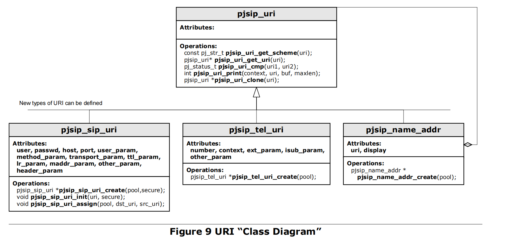
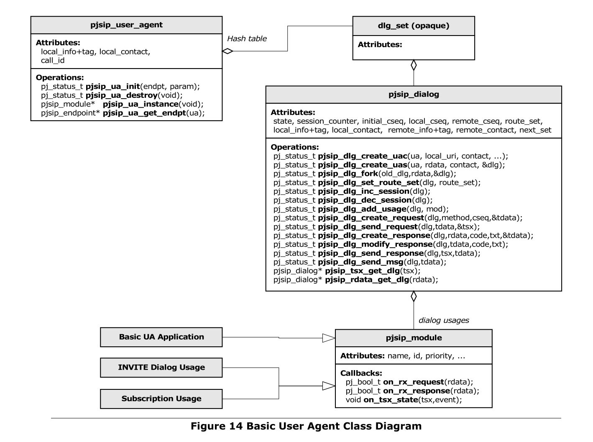
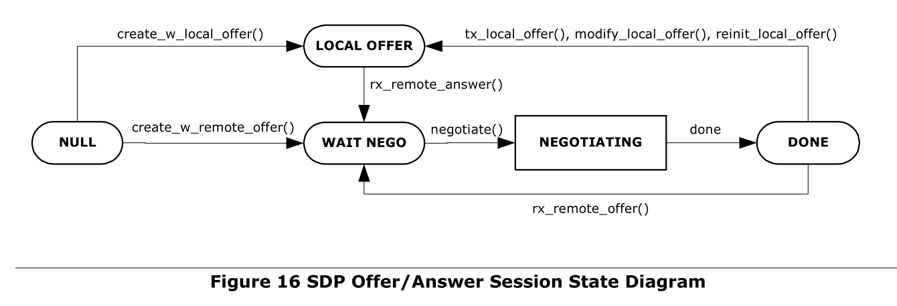

总述
- 软电话A 向 B 发送一个 SIP消息 INVITE， 邀请B通话
- 软电话B振铃，向A 回复一个SIP消息 RING, 通知 A 正在振铃中，请A等待
- 软电话B提机，向A发一个SIP消息 OK, 通知 A 可以通话了
- 软电话A 向 B 回复一个回应消息 ACK，正式启动通话
- 接下来，双方通话
- 软电话B挂机，向 A 发一个SIP消息 BYE, 通知 A 通话结束
- 软电话A 向 B 回复一个消息 OK, 通话结束
含有代理服务器
- 代理服务器接收到了 INVITE 请求，然后发送了一个 100 (Trying) 响应给 Alice 的软电话。这个 100 (Trying) 响应表示这个 INVITE 已经被收到，代理正在通过路由设置路由这个 INVITE 到其目的地。
- atlanta.com代理服务器定位到这个代理服务器在 biloxi.com，它可能执行一个特别的 DNS 查询来找到服务 biloxi.com 域的 SIP 服务器。获得 biloxi.com 代理服务器的 IP 地址，然后转发或者在这里代理其 INVITE 请求。在转发这个请求之前，这个 atlanta.com 代理服务器添加另外一个 Via 头字段，这个头字段包含自己的地址（这个 INVITE 已经在第一个 Via 包含了 Alice 的地址）
- biloxi.com代理服务器收到这个 INVITE 消息后，然后回复一个带 100 (Trying) 响应消息到 atlanta.com 代理服务器，表示它已经收到了这个 INVITE 消息，正在处理这个请求。
- 代理服务器会查询一个定位服务器，我们称之为定位服务，定位服务包含当前 Bob 的IP 地址。biloxi.com 代理服务器会添加另外一个 Via header ，并且携带自己的 IP 地址，这个地址是针对这个 INVITE 请求的，代理转发这个请求到 Bob 的 SIP 软电话。
- Bob 决定是否应答这个呼叫，这里 Bob 的软电话会产生振铃提示。Bob 的软电话提示 180 振铃，这个响应消息会路由根据相反的方向回到两个代理服务器。每个代理使用 Via header 域值来决定发送响应的地址方向，并且从顶部路由记录中删除自己的地址。因此，尽管要求 DNS 和定位服务查询 路由这个初始的 INVITE 请求，180（Ringing）响应返回到呼叫方时可以没有查询消息或没有代理服务器中所保持的状态。
- Bob 决定应答这个呼叫。当他拿起电话听筒时，他的 SIP 电话会发送一个 200 (OK) 响应消息来表示这个呼叫已经应答。这个 200 (OK) 包含了一个消息体，这个消息体带了这个呼叫会话的媒体描述类型，这个媒体描述中说明了 Bob 希望和Alice 创建会话。
- 最后，Alice 软电话发送一个确认消息 ACK，这个消息发送到 Bob 软电话来确认最终响应 (200 (OK))已收到。在这个示例中，这个 ACK 是通过 Alice 软电话直接被发送到了 Bob 软电话，发送过程绕开了两个代理服务器。这样处理的原因就是因为两个终端已经通过互相学习知道对方的地址，双方地址是通过 INVITE/200（OK）交互时的 Contact 头获得，当然这个地址在初始时的 INVITE 是双方都不知道的。两个代理服务器的查询服务也不需要，因此，代理服务器则会退出这个呼叫流程。
- Alice 或 Bob 任何一方都可以有权决定修改媒体会话的属性。修改会话属性是通过发送一个 re-INVITE 消息，在此消息中包含一个新的媒体描述来实现。这个 re-INVITE 涉及到了已存在的 dialog,因此其他的参与方知道这个消息是修改了现在的会话，而不是重新建立的新会话。其他方发送一个 200（ok）接受这个修改。请求方对 200（ok）发送一个 ACK。如果其他方不能接受这个修改的话，它会发生一个错误响应，例如 488 (Not Acceptable Here)，同样也接收一个 ACK 确认消息。但是，这个 re-INVITE 失败不会导致目前的呼叫失败-这个会话仍然会继续使用以前协商的属性。
- 在呼叫结束后，Bob 首先挂机(hangs up)，并且生成一个 BYE 消息。这个 BYE 会直接 路由返回到 Alice 的软电话，这里仍然绕过了代理。 Alice 确认了 BYE 接收，发送一个 200（ok），结束这个会话和 BYE 消息事务。
- Bob 软电话基于初始化处理，在一定周期内 Bob 软电话对在biloxi.com 的服务器发送 REGISTER 消息，我们称之为 SIP registrar 或者 SIP 注册。REGISTER 消息关联 Bob 的 SIP 软电话或者 SIPS URI (sip:bob@biloxi.com)，这个机器是当前 Bob 写入记录的地址（它在 Contact 头中传输 SIP 或者 SIP URL）。 这个注册会写入此关联，也被称之为在数据库中的绑定或者定位服务，此定位服务可以使用在biloxi.com 域的代理中。经常，对于一个域的注册服务器需要和这个域的代理协同工作。这里一定要注意，区分不同类型的 SIP 服务器功能概念是非常重要的，它们区别是在于逻辑处理的不同，而不是物理上，形体上的不同
Structure of the Protocol
- SIP 结构的最低层是语法和解码层。解码是通过增强的 Backus-Naur Form grammar(BNF)语法来实现的。
- 第二层是传输层。它定义了用户如何发送请求，如何接收响应和服务器如何通过网络接收请求和发送响应。所有 SIP 网元都包含一个传输层。
- 第三层是事务层。事务是 SIP 的基础核心模块。事务是一个由用户端事务对服务器端事务发送的请求，用户端使用传输层对服务器端发送事务请求，所有的服务器端事务所携带响应消息返回到客户端。事务层处理应用层的重传，对请求响应的匹配和应用层超时管理。 任何由用户代理（UAC）完成的任务通过使用一系列的事务来触发。 用户代理包含了一个事务层，就像是一个状态代理。 无状态代理没有包含事务层。事务层有一个用户端模块（称之为用户事 务）和一个服务器端事务模块（称之为服务器端模块），每个模块通过各自的有限状态机来呈现，状态机来处理每个特别的请求
- 在事务层上面的是事务用户（TU）。每个 SIP 实体，除了无状态代理都是一个事务用户。当一个 TU 希望发送一个请求时，它会创建一个用户事务实例，然后把这个实例传递给这个请求，并且携带目的地 IP 地址，端口和传输请求。一个创建了用户事务的TU 也可以取消这个用户事务。当用户取消了一个事务时，它会请求服务器停止进一步的处理，变换到退出的状态，这个状态是这个事务初始化前的退出状态，并且生成对这个事务生成错误响应消息。 这个处理过程是通过一个 CANCEL 请求来处理，它构成了属于自己的事务，但是仅针对这个被取消的事务
术语
Outbound Proxy
它是一个代理，负责接收从客户端发出的请求，即使它可能不是一个通过 Request-URI 解析度服务器。 通常情况下，一个 UA 可以通过 outbound proxy手动配置，或通过自动配置协议进行学习。
Location Service
定位服务用来支持一个 SIP 重定位或代理服务器来获得关于被呼叫方可能存在的地址信息。它包含一个绑定的 address-of-record 列表数值，这些从从零个到多个 contact 地址。这个绑定关系可以通过多种方式来创建或者删除；此协议细节中定义了一个 REGISTER method 来更新绑定关系。
Redirect Server
重定向服务器是一个用户代理服务器，它会对接收的请求产生 3xx 响应，重新定向用户，让用户联系其他可选的 URL 列表中的 URI 地址。
Request
请求是一个由用户端发送到服务器的 SIP 消息，请求的目的是触发一个特别的操作。
Response
响应是一个由服务器端发送到用户端的 SIP 消息，其目的是说明请求发送后服务器端回复的状态。
Route Set
路由集是一组有序 SIP 或者 SIPS URI 的集和，它用来表示当发送 一个特别的请求时所经过的代理列表。 路由集通过路由头，例如 Record-Route 或者经过配置后获得。
Stateful Proxy
状态代理是一个逻辑实体，它按照规范中请求处理的流程保持用户端和服务器端之间的事务状态机的处理状态，也就是所谓的事务状态代理。状态代理的执行在第 16 章做了进一步的说明。状态代理（事务）和呼叫状态代理是不同的。
Stateless Proxy
无状态代理是一个逻辑实体，它不会保持用户端和服务器端之间的事务状态机。无状态代理前转从下游收到的每个请求，前转从上游收到的每一个响应。
报文结构
start-line
message-header
CRLF //一个表示头结束的空行
[ message-body ]
Requests

Method: 此规范定义了六个方法: REGISTER 支持注册联系消息，INVITE，ACK，和CANCEL 支持会话创建，BYE 支持结束会话，OPTIONS 支持对服务器的能力查询。SIP 拓展中定义了其他的方法。
Responses

首行（start-line）
分请求行(Requests)和状态行(Responses)
- 请求行: 由请求类型、请求目的地址和协议版本号构成。请求类型有：INVITE,ACK,OPTIONS,BYE,CANCEL和REGISTER。
- 状态行: 是被叫方向主叫方返回的状态信息，如1xx，2xx，3xx，4xx，5xx，6xx。
请求类型
- INVITE：用于发起呼叫请求。INVITE消息包括消息头和数据区两部分。INVITE 消息头包含主、被呼叫的地址，呼叫主题和呼叫优先级等信息。数据区则是关于会话媒体的信息，可由会话描述协议SDP 来实现。
- BYE：当一个用户决定中止会话时，可以使用BYE 来结束会话。
- OPTIONS：用于询问被叫端的能力信息，但OPTIONS 本身并不能发起呼叫。
- ACK： 对已收到的消息进行确认应答。
- REGISTER：用于用户向SIP服务器传送位置信息或地址信息。
- CANCEL：取消当前的请求，但它并不能中止已经建立的连接。
状态类型

- 1xx：临时消息：表示表示请求消息已经收到，后面将继续处理该请求。
- 2xx：成功消息：表示请求已经被成功的理解、接受或执行。
- 3xx：重定向消息：表示为了完成请求还需采取更进一步的动作。
- 4xx：客户机错误：表示该请求含有语法错误或在这个服务器上不能被满足。
- 5xx：服务器错误：表示该服务器不能处理一个明显有效的请求。
- 6xx：全局性故障：表示该请求在任何服务器上都不能被实现。
消息头（message-header）
- TO： 格式：
TO: 显示名<接收者URI>;tag=n,显示名和tag可选。接收者URI是SIP网络种唯一标识接收终端的标识符。例：TO: Name<SIP:caller@WORK.COM>;TAG=11111或TO: sip:caller@work.com - FROM: 给出标识会话发起者的URI。比如：FROM:
sip:caller@work.com;tag=hyh8tag是必需的。 - CALL-ID: 用于全局唯一标识正在建立的会话的标识符。 随机数加UAC标识信息。
- CSeq: 用于标识同一会话中不同事务的序号，通常由一个用作序号的整型数和消息类型组成。整个会话操作过程由不同的事务组成，每一事务所涉及的消息的CSeq序号必须相同。
- Via: 为响应消息提供传输路径，当请求消息经过每一跳节点时，每一跳节点都把自身的IP地址信息放入顶层Via中。响应消息则沿着请求消息记录下的传输路径反向传输，首先移走指明自身IP地址信息的顶层消息头
消息体
SIP协议一个最主要的作用就是协商媒体信息。媒体信息通过message-body携带，基于SDP会话描述协议。对于PSTN语音编码格式，主要有G711A、G711U、G729等。
SIP协商中主叫方会带上自己支持的所有音频编码列表到被叫方，被叫方一般在回铃时从主叫支持的类型中选出一种或多种自己支持的编码，返回主叫后，双人按顺序选出第一个支持的编码。
INVITE 消息
(1)起始行(start-line)：
<Method> <URI> <SIP_VERSION>
INVITE sip:some@192.168.31.131:50027 SIP/2.0
- Method是请求方法，本例是INVITE, SIP协议规定的Method有六种: INVITE, ACK, CANCEL用于创建对话，BYE用于结束对话, REGISTER用于登记,OPTIONS用于查询服务器能力
- URI表示所请求的用户或服务器, 也支持 “tel” URI， 本例是sip:some@192.168.31.131:50027,
- SIP_VERSION是 SIP版本号，本例是 SIP/2.0
(2)消息头部(header)
一个请求消息头部至少要包含六个字段：Via, To, From, CSeq, Caller-ID, Max-Forwards
name : value ; value;
I. Via字段
Via: SIP/2.0/UDP 192.168.31.131:51971;rport;branch=z9hG4bKiYblddPPX
-
Via头字段保存所经过SIP网元(客户端或Proxy)的主机名或网络地址（可能还有端口号），消息中的所有Via头字段对请求消息而言，从下至上依次表示到当前所在SIP网元为止，请求消息所经过的路径；对响应消息而言，从上至下依次表示从当前网元开始，响应所应遵循的路径。
-
Via字段包含SIP协议版本以及消息传输所用的传输协议, 此例为: SIP/2.0/UDP
-
branch参数:
- 在SIP网元（UAC或Proxy）发出或转发请求消息时，在其插入的Via字段中必须包含branch参数，该参数用于标识此请求消息所创建的事务。
- branch 参数可以用做loop detection，这时参数必须被分成两部分：第一部分符合一般的原则（对于RFC3261，z9hG4bK），第二部分(此例为iYblddPPX)被用来实现loop detection以用来区分loop和spiral。
- loop和spiral均指Proxy收到一个请求后转发，然后此转发的请求又重新到达该Proxy，区别是loop中请求的Request-URI以及其他影响Proxy处理的头字段均不变，而Spiral请求中这些部分必需有某个发生改变，spiral发生的典型情况是Request-URI发生改变。Proxy在插入Via字段前，其branch 参数的loop.
- detection部分依据以下元素编码：To Tag，From Tag，Call-ID字段，Request-URI，Topmost Via字段，Cseq的序号部分（即与request method无关），以及proxy-require字段，proxy authorization字段。注意：request method不能用于计算branch参数，比如CANCEL以及非2XX response的ACK与其所cancel的request或对应的INVITE属于同一个事务，即其branch参数相同。见RFC3261 P22 P25 P39 P95 P105
II. Max-Forwards 字段
Max-Forwards: 70
- Max-Forwards 字段表示request到达UAS的跳数的限制。是一个整数，经过每一跳时减去一。如果Max-Forwards已经是零，可是request还没有到达目的地，则就会产生一个483(too many hops)响应
III. To字段
To: <sip:some@192.168.31.131:50027>
- To字段表示消息的接收者
- To 字段可以有一个tag参数，to tag代表dialog的对等参与者（peer）。在UAC发出一个初始Dialog的请求（如INVITE）时，即发出out-of-dialog请求时，由于dialog还没有建立，不含to tag参数。当UAS收到INVITE请求时，在其发出的2xx或101-199响应中设置to tag参数，与UAC设置的From Tag参数以及Call-ID（呼叫唯一标识）一起作为一个Dialog ID（对话唯一标识，包含To tag，From Tag，Call-ID）的一个部分。RFC3261规定只有INVITE请求与2xx或101-199响应可以建立Dialog（由101-199响应创建的Dialog称为early dialog）。见RFC3261 P70
IV. From字段
From: <sip:null@null>;tag=Prf3c3Xc
- From字段表示消息的发送者
- From字段必须包含tag参数，在UAC发出一个out-of-dialog请求（对话建立请求）时，必须设置一个唯一的tag参数，作为Dialog ID的一个部分。
V. Call-ID字段
邀请id
Call-ID: cenXTa4i-1423587756904@appletekiAir
- 是一个邀请(Invitation)或来自同一个UAC用户的所有登记请求(Registeration，包括更新登记，取消登记)以及由此产生的一组响应的唯一标识。一个邀请可以建立多个Dialog（当被叫用户有多个联系方式时），这成为Forking，因而Call-ID只是一次呼叫邀请的唯一标识，Call-ID与UAC在发出请求中设置的From Tag字段以及UAS在其相映中设置的To Tag字段三者一起作为一个Dialog-ID。
- 在一个Dialog中，所有的requests和responses的Call-ID必须一致 同一UA的每一个register 的Call-ID必须一致。
VI. CSeq 字段
CSeq: 1 INVITE
- 用于在同一个Dialog中标识及排序事务（transaction）以及区分新的请求 与请求的重发。
- CSeq包括顺序号和方法（method），方法必须和它所对应的request相匹配。对于out-of-dialog的非register request，取值任意。
- 对于dialog内的每一个新的request（如BYE,re-INVITE,OPTION），Cseq的序号加1。但是对于CANCEL,ACK除外。对于ACK而言，Cseq的序号必须与其所对应的request相同。对于CANCEL而言，Cseq的序号也必须与其cancel掉的request相同。
- 注意：在同一个对话中的UAC和UAS分别维护自己的CSeq序号，他们发出请求的CSeq序号是不相关的。
VII. Contact 字段
Contact: <sip:null@192.168.31.131:51971;transport=UDP>
- 对于非Register事务，Contact header field 主要提供了UAC或UAS的 直接联系SIP URI，UAC在发出的对话建立（out-of-dialog）INVITE请求的Contact字段中提供自己的直接联系SIP URI，在UAS收到该请求后在其发出响应的Contact字段中提供自己的直接联系SIP URI，这样在建立对话后，UA间可以通过对方的直接联系SIP URI绕过Proxy直接发送请求。
- 对于Register事务，表示地址绑定中的contact address（vs. address-of-record）
- Contact header field contains IP address and port on which the sender is awaiting further requests sent by callee. Other header fields are not important and will be not described here.
VIII. Content-Type字段
Content-Type: application/sdp
- 主要表示发给接收器的消息体的媒体类型。如果消息体不是空的，则Content-type header field一定要存在。如果Content-type header field存在，而消息体是空的，表明该类型的媒体流长度是0。
VIIII. Content-Length字段
Content-Length: 215
表示消息体的长度。是十进制数。
(3)消息体(message body)
v=0 //版本号为0
o=user1 685988692 621323255 IN IP4 192.168.31.131 //建立者用户名＋会话ID＋版本＋网络类型＋地址类型＋地址
s=- //会话名
c=IN IP4 192.168.31.131 //连接信息：网络类型＋地址类型＋地址
t=0 0 //会话活动时间 起始时间＋终止时间
m=audio 49432 RTP/AVP 0 8 101 //媒体描述：媒体＋端口＋传送＋格式列表
音频 ＋ 端口49432 ＋ 传输协议RTP ＋ 格式AVP，有效负荷0（u率PCM编码）
a=rtpmap:0 PCMU/8000 //0或多个会话属性： 属性 ＋ 有效负荷＋ 编码名称 ＋ 抽样频率。
a=rtpmap:8 PCMA/8000 // rtpmap ＋ 0型 ＋ PCMU ＋ 8KHz
a=rtpmap:101 telephone-event/8000
a=sendrecv //a 可以有多个， 见SDP协议
REGISTER
allows a central server (registrar) to store the location of a SIP User-Agent.


REGISTER sip:10.10.1.99 SIP/2.0
CSeq: 1 REGISTER
Via: SIP/2.0/UDP 10.10.1.13:5060;
branch=z9hG4bK78946131-99e1-de11-8845-080027608325;rport
User-Agent: MySipClient/4.0.0
From: <sip:13@10.10.1.99>
;tag=d60e6131-99e1-de11-8845-080027608325
Call-ID: e4ec6031-99e1
To: <sip:13@10.10.1.99>
Contact: <sip:13@10.10.1.13>;q=1
Allow: INVITE,ACK,OPTIONS,BYE,CANCEL,SUBSCRIBE,NOTIFY,REFER,MESSAGE,
INFO,PING
Expires: 3600
Content-Length: 0
Max-Forwards: 70
- User-Agent: indicates the SIP Client connecting; most devices will indicate here the manufacturer – product name – software version and other information, such as the MAC address
- To: similar to From, in the case of the registration this field is usually the same as From. The tag is missing here but will be filled up by the SIP Server during the reply to the REGISTER
- Contact: usually indicates where the reply should go to, if rport was not set
- Expires: the desired registration duration in seconds
OK
SIP/2.0 200 OK
Via: SIP/2.0/UDP 192.168.1.30:5060;received=66.87.48.68
From: sip:sip2@iptel.org
To: sip:sip2@iptel.org;tag=794fe65c16edfdf45da4fc39a5d2867c.b713
Call-ID: 2443936363@192.168.1.30
CSeq: 63629 REGISTER
Contact: Msip:sip2@66.87.48.68:5060;transport=udp>;q=0.00;expires=120
Server: Sip EXpress router (0.8.11pre21xrc (i386/linux))
Content-Length: 0
Warning: 392 195.37.77.101:5060 "Noisy feedback tells:
pid=5110 req_src_ip=66.87.48.68 req_src_port=5060 in_uri=sip:iptel.org
out_uri=sip:iptel.org via_cnt==1"
BYE
BYE sip:info@hypotenuse.example.org SIP/2.0
Via: SIP/2.0/TCP port443.hotmail.example.com:54212;branch=z9hG4bK312bc
Max-Forwards:70
To: <sip:info@hypotenuse.example.org>;tag=63124
From: <sip:pythag42@hotmail.example.com>;tag=9341123
Call-ID: 34283291273
CSeq: 47 BYE
Content-Length: 0
应答只能由对端UA生成。如果UA收到未知的BYE请求，那么它应答回应481 Dialog/Transaction Does Not Exist
ACK
ACK sip:laplace@mathematica.example.org SIP/2.0
Via: SIP/2.0/TCP 128.5.2.1:5060;branch=z9hG4bK1834
Max-Forwards:70
To: Marquis de Laplace <sip:laplace@mathematica.example.org> ;tag=90210
From: Nathaniel Bowditch <sip:n.bowditch@salem.example.com> ;tag=887865
Call-ID: 152-45-32-N-32-23-47-W
CSeq: 3 ACK
Content-Type: application/sdp
Content-Length: ...
v=0
o=bowditch 2590844326 2590944532 IN IP4
s=Bearing
c=IN IP4 salem.example.org t=0 0
m=audio 32852 RTP/AVP 96 0
a=rtpmap:96 SPEEX/8000
a=rtpmap:0 PCMU/8000
ACK方法用于确认收到INVITE请求的最终应答。其它请求方法不需要确认。
ACK的CSeq序号不变，但方法描述变成ACK。这有助于UAS匹配对应的INVITE事务。
ACK消息可以携带application/sdp消息体。如果初始INVITE没有携带SDP信息，就允许在ACK消息中携带。如果INVITE带了SDP消息体，那么就不应该在ACK消息中携带SDP消息体。不能用ACK方法变更初始INVITE所描述的媒体信息，如果需要变更，必须使用re-INVITE或UPDATE方法。在ACK中携带SDP的方式常用于与其它协议交互的场景，特别是在发初始INVITE时不能获取媒体特征的场景。
总体


The Endpoint
数据结构
pjsip_endpoint
功能
1、pool factory
All memory allocations for the SIP components
- pjsip_endpt_create_pool(),
- pjsip_endpt_release_pool().
When the endpoint is created (pjsip_endpt_create()), application MUST specify
the pool factory that will be used by the endpoint. Endpoint keeps this pool
factory pointer throughout its lifetime, and will use this to create and release
memory pools. 创建之前必须指定pool factory
2、Timer Management
a single timer heap instance to manage timerss, and all timer creation and scheduling by all SIP components will be done via the endpoint.
-
pjsip_endpt_schedule_timer(),
-
pjsip_endpt_cancel_timer().
3、Transport manager instance
The transport manager has SIP transports and controls message parsing and printing.
4、Single instance of PJLIB’s ioqueue
5、Thread safe polling function
application’s threads can poll for timer and socket events
-
(pjsip_endpt_handle_events()
check the occurrence of timer and network events
6、Manages PJSIP modules
7、Receives incoming SIP messages
It receives incoming SIP messages from transport manager and distributes the message to modules.
Module
数据结构
pjsip_module
/**
* @defgroup PJSIP_MOD Modules
* @ingroup PJSIP_CORE_CORE
* @brief Modules are the primary means to extend PJSIP!
* @{
* Modules are the primary means to extend PJSIP. Without modules, PJSIP
* would not know how to handle messages, and will simply discard all
* incoming messages.
*
* Modules are registered by creating and initializing #pjsip_module
* structure, and register the structure to PJSIP with
* #pjsip_endpt_register_module().
*
* The <A HREF="/en/latest/api/pjsip/guide.html">PJSIP Developer's Guide</A>
* has a thorough discussion on this subject, and readers are encouraged
* to read the document for more information.
*/
/**
* The declaration for SIP module. This structure would be passed to
* #pjsip_endpt_register_module() to register the module to PJSIP.
*/
struct pjsip_module
{
/** To allow chaining of modules in the endpoint. */
PJ_DECL_LIST_MEMBER(struct pjsip_module);
/**
* Module name to identify the module.
*
* This field MUST be initialized before registering the module.
*/
pj_str_t name;
/**
* Module ID. Application must initialize this field with -1 before
* registering the module to PJSIP. After the module is registered,
* this field will contain a unique ID to identify the module.
*/
int id;
/**
* Integer number to identify module initialization and start order with
* regard to other modules. Higher number will make the module gets
* initialized later.
*
* This field MUST be initialized before registering the module.
*/
int priority;
/**
* Optional function to be called to initialize the module. This function
* will be called by endpoint during module registration. If the value
* is NULL, then it's equal to returning PJ_SUCCESS.
*
* @param endpt The endpoint instance.
* @return Module should return PJ_SUCCESS to indicate success.
*/
pj_status_t (*load)(pjsip_endpoint *endpt);
/**
* Optional function to be called to start the module. This function
* will be called by endpoint during module registration. If the value
* is NULL, then it's equal to returning PJ_SUCCESS.
*
* @return Module should return zero to indicate success.
*/
pj_status_t (*start)(void);
/**
* Optional function to be called to deinitialize the module before
* it is unloaded. This function will be called by endpoint during
* module unregistration. If the value is NULL, then it's equal to
* returning PJ_SUCCESS.
*
* @return Module should return PJ_SUCCESS to indicate success.
*/
pj_status_t (*stop)(void);
/**
* Optional function to be called to deinitialize the module before
* it is unloaded. This function will be called by endpoint during
* module unregistration. If the value is NULL, then it's equal to
* returning PJ_SUCCESS.
*
* @param mod The module.
*
* @return Module should return PJ_SUCCESS to indicate success.
*/
pj_status_t (*unload)(void);
/**
* Optional function to be called to process incoming request message.
*
* @param rdata The incoming message.
*
* @return Module should return PJ_TRUE if it handles the request,
* or otherwise it should return PJ_FALSE to allow other
* modules to handle the request.
*/
pj_bool_t (*on_rx_request)(pjsip_rx_data *rdata);
/**
* Optional function to be called to process incoming response message.
*
* @param rdata The incoming message.
*
* @return Module should return PJ_TRUE if it handles the
* response, or otherwise it should return PJ_FALSE to
* allow other modules to handle the response.
*/
pj_bool_t (*on_rx_response)(pjsip_rx_data *rdata);
/**
* Optional function to be called when transport layer is about to
* transmit outgoing request message.
*
* @param tdata The outgoing request message.
*
* @return Module should return PJ_SUCCESS in all cases.
* If non-zero is returned, the message
* will not be sent.
*/
pj_status_t (*on_tx_request)(pjsip_tx_data *tdata);
/**
* Optional function to be called when transport layer is about to
* transmit outgoing response message.
*
* @param tdata The outgoing response message.
*
* @return Module should return PJ_SUCCESS in all cases.
* If non-zero is returned, the message
* will not be sent.
*/
pj_status_t (*on_tx_response)(pjsip_tx_data *tdata);
/**
* Optional function to be called when this module is acting as
* transaction user for the specified transaction, when the
* transaction's state has changed.
*
* @param tsx The transaction.
* @param event The event which has caused the transaction state
* to change.
*/
void (*on_tsx_state)(pjsip_transaction *tsx, pjsip_event *event);
};
概述
For incoming messages, the endpoint (pjsip_endpoint) distributes the message to all modules starting from module with highest priority, until one of them says that it has processed the message. For outgoing messages, the endpoint distributes the outgoing messages before they are transmitted to the wire, to allow modules to put last modification on the message if they wish.
API
endpoint调用改变模块调用：The four function pointers load, start, stop, and unload are called by endpoint to control the module state.

pjsip_endpt_register_module() register the module to PJSIP endpoint
on_rx_request() and on_rx_response() : endpoint按照优先级从高到低发给模块，调用这两个函数，返回值不为0，表示模块处理了，停止发送
- module to receive SIP messages from endpoint (pjsip_endpt) or from other modules.
- The return value of these callbacks is important. If a callback has returned non-zero (i.e. true condition), it semantically means that the module has taken care the message; in this case, the endpoint will stop distributing the message to other modules.
on_tx_request() and on_tx_response()
- function pointers are called by transport manager before a message is transmitted.
- This gives an opportunity for some types of modules (e.g. sigcomp, message signing) chance to make last modification to the message before transmitt.
- All modules MUST return PJ_SUCCESS (i.e. zero status), or otherwise the transmission will be cancelled.
on_tsx_state()
receive notification every time a transaction state has changed, which can be caused by receipt of message, transmission of message, timer events, or transport error event. 每次事务状态发生变化时接收通知，这种变化可能是由消息的接收、消息的传输、计时器事件或传输错误事件引起的。
2.1.2 Module Priorities
Module priority specifies the order of which modules are called first to process the callback. Module with higher priority (i.e. lower priority number) will have their on_rx_request() and on_rx_response() called first, and on_tx_request() and on_tx_response() called last.
/**
* Module priority guidelines.
*/
enum pjsip_module_priority
{
/**
* This is the priority used by transport layer.
*/
PJSIP_MOD_PRIORITY_TRANSPORT_LAYER = 8,
/**
* This is the priority used by transaction layer.
*/
PJSIP_MOD_PRIORITY_TSX_LAYER = 16,
/**
* This is the priority used by the user agent and proxy layer.
*/
PJSIP_MOD_PRIORITY_UA_PROXY_LAYER = 32,
/**
* This is the priority used by the dialog usages.
*/
PJSIP_MOD_PRIORITY_DIALOG_USAGE = 48,
/**
* This is the recommended priority to be used by applications.
*/
PJSIP_MOD_PRIORITY_APPLICATION = 64
};
PJSIP_MOD_PRIORITY_TRANSPORT_LAYER
- transport manager 的优先级
- 低于这个的优先级，可以在transport layer之前调用on_tx_request()/on_tx_response() ；高于这个优先级，可以在transport layer处理完后继续处理
- This priority currently is only used to control message transmission, i.e. module with lower priority than this (that means higher priority number!) will have the on_tx_request()/on_tx_response() called before the message is processed by transport layer (e.g. destination is calculated, message is printed to contiguous buffer), while module with higher priority than this will have the callback called after the message has been processed by transport layer.
PJSIP_MOD_PRIORITY_TSX_LAYER
-
transaction layer优先级
-
The transaction layer absorbs all incoming messages that belong to a transaction.
PJSIP_MOD_PRIORITY_UA_PROXY_LAYER
- priority used by UA layer (i.e.dialog framework) or proxy layer.
- The UA layer absorbs all incoming messages that belong to a dialog set (this means forked responses as well).
PJSIP_MOD_PRIORITY_DIALOG_USAGE
- for dialog usages.
- Currently PJSIP implements two types of dialog usages: invite sesssion and event subscriptionsession (including REFER subscription). The dialog usage absorbs messages inside a dialog that belong to particular session.
PJSIP_MOD_PRIORITY_APPLICATION
- for typical application modules, when they want to utilize transactions, dialogs, and dialog usages.
2.1.3 Incoming Message Processing by Modules

- incoming message arrives, it is represented as receive message buffer (struct pjsip_rx_data, see section 5.1 “Receive Data Buffer”).
- Transport manager parses the message, put the parsed data structures in the receive message buffer
- pass the message to the endpoint.
- The endpoint distributes the receive message buffer to each registered module by calling on_rx_request() or on_rx_response() callback, starting from module with highest priority (i.e. lowest priority number) until one of them returns non-zero. When one of the module has returned non-zero, endpoint stops distributing the message to the remaining of the modules, because it assumes that the module has taken care about the processing of the message.
- The module which returns non-zero on the callback itself may further distribute the message to other modules. i.e

2.1.4 Outgoing Message Processing by Modules
-
An outgoing request or response message is represented by a transmit data buffer (pjsip_tx_data), which among other things, contains the message structure itself, memory pool, contiguous buffer, and transport info.
-
When pjsip_transport_send() is called to send a message, transport manager calls on_tx_request() or on_tx_response() for all modules, starting with modules with lowest priority (i.e. highest priority number).
-
When these callbacks are called, the message may have or have not been processed by the transport layer. The transport layer is responsible for managing these information inside a transmit buffer:
-
transport info, and
-
printing the message structure to contiguous buffer.
If modules want to modify the message structure before it is printed to buffer, then it must set its priority number higher than transport layer priority. If modules want to see the actual packet bytes as they are transmitted to the wire (e.g. for logging purpose), then it should set its priority number to lower than transport layer.
-
2.1.5 Transaction User and State Callback
-
transaction 状态变化，接收notification from a particular transaction
-
This callback is unique because transaction state may change because of non message related events (e.g. timer timeout and transport error).
-
This callback will only be called after the module has been registered as transaction user for a particular transaction. Only one transaction user is allowed per transaction. Transaction user can be set to transaction on per transaction basis.
For transactions created within a dialog, the transaction user is set to the UA layer module on behalf of a particular dialog. When applications creates the transaction manually, they may set themselves as the transaction user.
2.1.6 Module Specific Data
mod_data container：modules can put module specific data in that component
The mod_data array is indexed by module ID
Application can retrieve the value calling pjsip_rdata_get_tsx() or pjsip_rdata_get_dlg(),
2.2.1 Module Management API
pj_status_t pjsip_endpt_register_module( pjsip_endpoint *endpt,
pjsip_module *module );
Register a module to the endpoint. The endpoint will then call the load and start function in the module to properly initialize the module, and assign a unique module ID for the module.
pj_status_t pjsip_endpt_unregister_module( pjsip_endpoint *endpt,
pjsip_module *module );
Unregister a module from the endpoint. The endpoint will then call the stop and unload function in the module to properly shutdown the module.
2.2.2 Module Capabilities
Currently the endpoint manages these capabilities
- allowed SIP methods (Allow header field),
- supported SIP extensions (Supported header field).
- supported content type (Accept header field).
These header fields will be added to outgoing requests or responses automatically, where appropriate.
A module declares new capability by calling pjsip_endpt_add_capability() function.
Message Elements
3.1 Uniform Resource Indicator (URI)

3.1.2 URI Context
URI context 指明哪里使用URI，指明什么元素可以出现在context
/**
* URI context.
*/
typedef enum pjsip_uri_context_e
{
PJSIP_URI_IN_REQ_URI, /**< The URI is in Request URI. */
PJSIP_URI_IN_FROMTO_HDR, /**< The URI is in From/To header. */
PJSIP_URI_IN_CONTACT_HDR, /**< The URI is in Contact header. */
PJSIP_URI_IN_ROUTING_HDR, /**< The URI is in Route/Record-Route header. */
PJSIP_URI_IN_OTHER /**< Other context (web page, business card, etc.) */
} pjsip_uri_context_e;
3.1.3 Base URI
struct pjsip_uri
{
pjsip_uri_vptr *vptr;
};
pjsip_uri_vptr 虚函数表，由各类url自行定义
/**
* URI 'virtual' function table.
* All types of URI in this library (such as sip:, sips:, tel:, and name-addr)
* will have pointer to this table as their first struct member. This table
* provides polimorphic behaviour to the URI.
*/
typedef struct pjsip_uri_vptr
{
/**
* Get URI scheme.
* @param uri the URI (self).
* @return the URI scheme.
*/
const pj_str_t* (*p_get_scheme)(const void *uri);
/**
* Get the URI object contained by this URI, or the URI itself if
* it doesn't contain another URI.
* @param uri the URI (self).
*/
void* (*p_get_uri)(void *uri);
/**
* Print URI components to the buffer, following the rule of which
* components are allowed for the context.
* @param context the context where the URI will be placed.
* @param uri the URI (self).
* @param buf the buffer.
* @param size the size of the buffer.
* @return the length printed.
*/
pj_ssize_t (*p_print)(pjsip_uri_context_e context,
const void *uri,
char *buf, pj_size_t size);
/**
* Compare two URIs according to the context.
* @param context the context.
* @param uri1 the first URI (self).
* @param uri2 the second URI.
* @return PJ_SUCCESS if equal, or otherwise the error status which
* should point to the mismatch part.
*/
pj_status_t (*p_compare)(pjsip_uri_context_e context,
const void *uri1, const void *uri2);
/**
* Clone URI.
* @param pool the pool.
* @param the URI to clone (self).
* @return new URI.
*/
void *(*p_clone)(pj_pool_t *pool, const void *uri);
} pjsip_uri_vptr;
以下的一些函数可以应用在所有类型的url上作为pjsip_uri_vptr虚函数表的初始化
const pj_str_t\* pjsip_uri_get_scheme( const pjsip_uri \*uri );
Get the URI scheme string (e.g. “sip”, “sips”, “tel”, etc.).
pjsip_uri\* pjsip_uri_get_uri( pjsip_uri \*uri );
Get the URI object. Normally all URI objects will return itself except name address which will return the URI inside the name address object.
pj_status_t pjsip_uri_cmp( pjsip_uri_context_e context,
const pjsip_uri \*uri1,
const pjsip_uri \*uri2);
Compare uri1 and uri2 according to the specified context. Parameters which are not allowed to appear in the specified context will be ignored in the comparison. It will return PJ_SUCCESS is both URIs are equal.
int pjsip_uri_print(
pjsip_uri_context_e context,
const pjsip_uri \*uri,
char \*buffer,
pj_size_t max_size);
Print uri to the specified buffer according to the specified context. Parameters which are not allowed to appear in the specified context will not be included in the printing.
pjsip_uri* pjsip_uri_clone( pj_pool_t *pool, const pjsip_uri *uri );
Create a deep clone of uri using the specified pool.
3.1.4 SIP and SIPS URI
/**
* @}
*/
/**
* @defgroup PJSIP_SIP_URI SIP URI Scheme and Name address
* @ingroup PJSIP_URI
* @brief SIP URL structure ("sip:" and "sips:")
* @{
*/
/**
* SIP and SIPS URL scheme.
*/
typedef struct pjsip_sip_uri
{
pjsip_uri_vptr *vptr; /**< Pointer to virtual function table.*/
pj_str_t user; /**< Optional user part. */
pj_str_t passwd; /**< Optional password part. */
pj_str_t host; /**< Host part, always exists. */
int port; /**< Optional port number, or zero. */
pj_str_t user_param; /**< Optional user parameter */
pj_str_t method_param; /**< Optional method parameter. */
pj_str_t transport_param; /**< Optional transport parameter. */
int ttl_param; /**< Optional TTL param, or -1. */
int lr_param; /**< Optional loose routing param, or zero */
pj_str_t maddr_param; /**< Optional maddr param */
pjsip_param other_param; /**< Other parameters grouped together. */
pjsip_param header_param; /**< Optional header parameter. */
} pjsip_sip_uri;
SIP and SIPS URI类型URL 特有函数
pjsip_sip_uri* pjsip_sip_uri_create( pj_pool_t *pool, pj_bool_t secure );
Create a new SIP URL using the specified pool. If the secure flag is set to non-zero, then SIPS URL will be created. This function will set vptr member of the URL to SIP or SIPS vptr and set all other members to blank value.
void pjsip_sip_uri_init( pjsip_sip_uri \*url, pj_bool_t secure );
Initialize a SIP URL structure.
void pjsip_sip_uri_assign( pj_pool_t \*pool,
pjsip_sip_uri \*url,
const pjsip_sip_uri \*rhs );
Perform deep copy of rhs to url.
3.1.5 Tel URI
pjsip_tel_uri\* pjsip_tel_uri_create( pj_pool_t \*pool );
Create a new tel: URI.
int pjsip_tel_nb_cmp( const pj_str_t \*nb1, const pj_str_t \*nb2 );
This utility function compares two telephone numbers for equality, according to rules specified in RFC 3966 (about tel: URI). It recognizes global and local numbers, and it ignores visual separators during the comparison.
3.1.6 Name Address
/**
* SIP name-addr, which typically appear in From, To, and Contact header.
* The SIP name-addr contains a generic URI and a display name.
*/
typedef struct pjsip_name_addr
{
/** Pointer to virtual function table. */
pjsip_uri_vptr *vptr;
/** Optional display name. */
pj_str_t display;
/** URI part. */
pjsip_uri *uri;
} pjsip_name_addr;
pjsip_name_addr\* pjsip_name_addr_create( pj_pool_t \*pool );
Create a new name address. This will set initialize the virtual function table pointer, set blank display name and set the uri member to NULL.
void pjsip_name_addr_assign( pj_pool_t \*pool,
pjsip_name_addr \*name_addr,
const pjsip_name_addr \*rhs );
Copy rhs to name_addr.
3.2 SIP Methods
3.2.1 SIP Method Representation (pjsip_method)
/**
* This structure represents a SIP method.
* Application must always use either #pjsip_method_init or #pjsip_method_set
* to make sure that method name is initialized correctly. This way, the name
* member will always contain a valid method string regardless whether the ID
* is recognized or not.
*/
struct pjsip_method
{
pjsip_method_e id; /**< Method ID, from \a pjsip_method_e. */
pj_str_t name; /**< Method name, which will always contain the
method string. */
};
-
可扩展
-
对于sip协议定义的头在id字段，填入以下枚举类型
/** * This enumeration declares SIP methods as described by RFC3261. Additional * methods do exist, and they are described by corresponding RFCs for the SIP * extentensions. Since they won't alter the characteristic of the processing * of the message, they don't need to be explicitly mentioned here. */ typedef enum pjsip_method_e { PJSIP_INVITE_METHOD, /**< INVITE method, for establishing dialogs. */ PJSIP_CANCEL_METHOD, /**< CANCEL method, for cancelling request. */ PJSIP_ACK_METHOD, /**< ACK method. */ PJSIP_BYE_METHOD, /**< BYE method, for terminating dialog. */ PJSIP_REGISTER_METHOD, /**< REGISTER method. */ PJSIP_OPTIONS_METHOD, /**< OPTIONS method. */ PJSIP_OTHER_METHOD /**< Other method. */ } pjsip_method_e;
3.2.2 SIP Method API
void pjsip_method_init(
pjsip_method \*method, pj_pool_t \*pool,
const pj_str_t \*method_name );
Initialize method from string. This will initialize the id of the method field to the correct value.
void pjsip_method_init_np( pjsip_method \*method,
pj_str_t \*method_name );
Initialize method from method_name string without duplicating the string (np stands for no pool). The id field will be initialize accordingly.
void pjsip_method_set( pjsip_method \*method,
pjsip_method_id_e method_id );
Initialize method from the method ID enumeration. The name field will be initialized accordingly.
void pjsip_method_copy(
pj_pool_t \*pool,
pjsip_method \*method,
const pjsip_method \*rhs );
Copy rhs to method.
int pjsip_method_cmp(
const pjsip_method \*method1,
const pjsip_method \*method2 );
Compare method1 to method2 for equality. This function returns zero if both methods are equal, and (-1) or (+1) if method1 is less or greater than method2 respectively.
3.3 Header Fields
3.3.1 Header “Class Diagram”

3.3.2 Header Structure
所有类型header共有的属性 **PJSIP_DECL_HDR_MEMBER(hdr)**宏保证共有属性
/**
* Generic fields for all SIP headers are declared using this macro, to make
* sure that all headers will have exactly the same layout in their start of
* the storage. This behaves like C++ inheritance actually.
*/
#define PJSIP_DECL_HDR_MEMBER(hdr) \
/** List members. */ \
PJ_DECL_LIST_MEMBER(hdr); \
/** Header type */ \
pjsip_hdr_e type; \
/** Header name. */ \
pj_str_t name; \
/** Header short name version. */ \
pj_str_t sname; \
/** Virtual function table. */ \
pjsip_hdr_vptr *vptr
base header
/**
* Generic SIP header structure, for generic manipulation for headers in the
* message. All header fields can be typecasted to this type.
*/
struct pjsip_hdr
{
PJSIP_DECL_HDR_MEMBER(struct pjsip_hdr);
};
pjsip_hdr_vptr通用虚函数表
/**
* This structure provides the pointer to basic functions that are needed
* for generic header operations. All header fields will have pointer to
* this structure, so that they can be manipulated uniformly.
*/
typedef struct pjsip_hdr_vptr
{
/**
* Function to clone the header.
*
* @param pool Memory pool to allocate the new header.
* @param hdr Header to clone.
*
* @return A new instance of the header.
*/
void *(*clone)(pj_pool_t *pool, const void *hdr);
/**
* Pointer to function to shallow clone the header.
* Shallow cloning will just make a memory copy of the original header,
* thus all pointers in original header will be kept intact. Because the
* function does not need to perform deep copy, the operation should be
* faster, but the application must make sure that the original header
* is still valid throughout the lifetime of new header.
*
* @param pool Memory pool to allocate the new header.
* @param hdr The header to clone.
*/
void *(*shallow_clone)(pj_pool_t *pool, const void *hdr);
/** Pointer to function to print the header to the specified buffer.
* Returns the length of string written, or -1 if the remaining buffer
* is not enough to hold the header.
*
* @param hdr The header to print.
* @param buf The buffer.
* @param len The size of the buffer.
*
* @return The size copied to buffer, or -1 if there's not enough space.
*/
int (*print_on)(void *hdr, char *buf, pj_size_t len);
} pjsip_hdr_vptr;
以下的一些函数可以应用在所有类型的header上作为pjsip_hdr_vptr虚函数表的初始化
pjsip_hdr *pjsip_hdr_clone( pj_pool_t *pool, const pjsip_hdr *hdr );
Perform deep clone of hdr header.
pjsip_hdr *pjsip_hdr_shallow_clone( pj_pool_t *pool, const pjsip_hdr *hdr );
Perform shallow clone of hdr header. A shallow cloning creates a new exact copy of the specified header field, however most of its value will still point to the values in the original header. Normally shallow clone is just a simple memcpy() from the original header to a new header, therefore it’s expected that this operation is faster than deep cloning. However, care must be taken when shallow cloning headers. It must be understood that the new header still shares common pointers to the values in the old header. Therefore, when the pool containing the original header is destroyed, the new header will be rendered invalid too although the new header was shallow-cloned using different memory pool. Or if some values in the original header was modified, then the corresponding values in the shallow-cloned header will be modified too.Despite of this, shallow cloning is used widely in the library. For example, a dialog has some headers which values are more or less persistent during the session (e.g. From, To, Call-Id, Route, and Contact). When creating a request, the dialog can just shallow-clone these headers (instead of performing full cloning) and put them in the request message.
int pjsip_hdr_print_on( pjsip_hdr *hdr, char *buf, pj_size_t max_size);
Print the specified header to a buffer (e.g. before transmission). This function returns the number of bytes printed to the buffer, or –1 when the buffer is overflow.
3.3.4 Supported Header Fields
-
标准头部在The “standard” PJSIP header fields are declared in <pjsip/sip_msg.h>.
-
Other header fields may be declared in header files that implement specific functionalities or SIP extensions (e.g. headers used by SIMPLE extension, etc.).
-
创建头部The APIs to create individual header fields are by convention named after the header field name and followed by _create() suffix. For example, call function pjsip_via_hdr_create() to create an instance of pjsip_via_hdr header.
3.3.5 Header Array Elements
群组sip消息，拆分处理
When the parser encounters such arrays in headers, it will split the array into individual headers while maintaining their order of appearance.
**3.4 Message Body (pjsip_msg_body)**消息体本身
数据、类型、长度
/**
* @addtogroup PJSIP_MSG_BODY Message Body
* @brief SIP message body structures and manipulation.
* @ingroup PJSIP_MSG
* @{
*/
/**
* Generic abstraction to message body.
* When an incoming message is parsed (pjsip_parse_msg()), the parser fills in
* all members with the appropriate value. The 'data' and 'len' member will
* describe portion of incoming packet which denotes the message body.
* When application needs to attach message body to outgoing SIP message, it
* must fill in all members of this structure.
*/
struct pjsip_msg_body
{
/** MIME content type.
* For incoming messages, the parser will fill in this member with the
* content type found in Content-Type header.
*
* For outgoing messages, application may fill in this member with
* appropriate value, because the stack will generate Content-Type header
* based on the value specified here.
*
* If the content_type is empty, no Content-Type AND Content-Length header
* will be added to the message. The stack assumes that application adds
* these headers themselves.
*/
pjsip_media_type content_type;
/** Pointer to buffer which holds the message body data.
* For incoming messages, the parser will fill in this member with the
* pointer to the body string.
*
* When sending outgoing message, this member doesn't need to point to the
* actual message body string. It can be assigned with arbitrary pointer,
* because the value will only need to be understood by the print_body()
* function. The stack itself will not try to interpret this value, but
* instead will always call the print_body() whenever it needs to get the
* actual body string.
*/
void *data;
/** The length of the data.
* For incoming messages, the parser will fill in this member with the
* actual length of message body.
*
* When sending outgoing message, again just like the "data" member, the
* "len" member doesn't need to point to the actual length of the body
* string.
*/
unsigned len;
/** Pointer to function to print this message body.
* Application must set a proper function here when sending outgoing
* message.
*
* @param msg_body This structure itself.
* @param buf The buffer.
* @param size The buffer size.
*
* @return The length of the string printed, or -1 if there is
* not enough space in the buffer to print the whole
* message body.
*/
int (*print_body)(struct pjsip_msg_body *msg_body,
char *buf, pj_size_t size);
/** Clone the data part only of this message body. Note that this only
* duplicates the data part of the body instead of the whole message
* body. If application wants to duplicate the entire message body
* structure, it must call #pjsip_msg_body_clone().
*
* @param pool Pool used to clone the data.
* @param data The data inside message body, to be cloned.
* @param len The length of the data.
*
* @return New data duplicated from the original data.
*/
void* (*clone_data)(pj_pool_t *pool, const void *data, unsigned len);
};
pj_status_t pjsip_msg_body_clone( pj_pool_t \*pool,
pjsip_msg_body \*dst_body,
const pjsip_msg_body \*src_body);
Clone the message body in src_body to the dst_body. This will duplicate the contents of the message body using the clone_data member of the source message body.
3.5 Message (pjsip_msg)
/* **************************************************************************/
/**
* @defgroup PJSIP_MSG_MSG Message Structure
* @brief SIP message (request and response) structure and operations.
* @ingroup PJSIP_MSG
* @{
*/
/**
* Message type (request or response).
*/
typedef enum pjsip_msg_type_e
{
PJSIP_REQUEST_MSG, /**< Indicates request message. */
PJSIP_RESPONSE_MSG /**< Indicates response message. */
} pjsip_msg_type_e;
/**
* This structure describes a SIP message.
*/
struct pjsip_msg
{
/** Message type (ie request or response). */
pjsip_msg_type_e type;
/** The first line of the message can be either request line for request
* messages, or status line for response messages. It is represented here
* as a union.
*/
union
{
/** Request Line. */
struct pjsip_request_line req;
/** Status Line. */
struct pjsip_status_line status;
} line;
/** List of message headers. */
pjsip_hdr hdr;
/** Pointer to message body, or NULL if no message body is attached to
* this mesage.
*/
pjsip_msg_body *body;
};
- request and response message in PJSIP are represented with pjsip_msg
/**
* Create new request or response message.
*
* @param pool The pool.
* @param type Message type.
* @return New message, or THROW exception if failed.
*/
PJ_DECL(pjsip_msg*) pjsip_msg_create( pj_pool_t *pool, pjsip_msg_type_e type);
/**
* Perform a deep clone of a SIP message.
*
* @param pool The pool for creating the new message.
* @param msg The message to be duplicated.
*
* @return New message, which is duplicated from the original
* message.
*/
PJ_DECL(pjsip_msg*) pjsip_msg_clone( pj_pool_t *pool, const pjsip_msg *msg);
/**
* Find a header in the message by the header type.
*
* @param msg The message.
* @param type The header type to find.
* @param start The first header field where the search should begin.
* If NULL is specified, then the search will begin from the
* first header, otherwise the search will begin at the
* specified header.
*
* @return The header field, or NULL if no header with the specified
* type is found.
*/
PJ_DECL(void*) pjsip_msg_find_hdr( const pjsip_msg *msg,
pjsip_hdr_e type, const void *start);
/**
* Find a header in the message by its name.
*
* @param msg The message.
* @param name The header name to find.
* @param start The first header field where the search should begin.
* If NULL is specified, then the search will begin from the
* first header, otherwise the search will begin at the
* specified header.
*
* @return The header field, or NULL if no header with the specified
* type is found.
*/
PJ_DECL(void*) pjsip_msg_find_hdr_by_name( const pjsip_msg *msg,
const pj_str_t *name,
const void *start);
/**
* Find a header in the message by its name and short name version.
*
* @param msg The message.
* @param name The header name to find.
* @param sname The short name version of the header name.
* @param start The first header field where the search should begin.
* If NULL is specified, then the search will begin from the
* first header, otherwise the search will begin at the
* specified header.
*
* @return The header field, or NULL if no header with the specified
* type is found.
*/
PJ_DECL(void*) pjsip_msg_find_hdr_by_names(const pjsip_msg *msg,
const pj_str_t *name,
const pj_str_t *sname,
const void *start);
/**
* Find and remove a header in the message.
*
* @param msg The message.
* @param hdr The header type to find.
* @param start The first header field where the search should begin,
* or NULL to search from the first header in the message.
*
* @return The header field, or NULL if not found.
*/
PJ_DECL(void*) pjsip_msg_find_remove_hdr( pjsip_msg *msg,
pjsip_hdr_e hdr, void *start);
/**
* Add a header to the message, putting it last in the header list.
*
* @param msg The message.
* @param hdr The header to add.
*
* @bug Once the header is put in a list (or message), it can not be put in
* other list (or message). Otherwise Real Bad Thing will happen.
*/
PJ_INLINE(void) pjsip_msg_add_hdr( pjsip_msg *msg, pjsip_hdr *hdr )
{
pj_list_insert_before(&msg->hdr, hdr);
}
/**
* Add header field to the message, putting it in the front of the header list.
*
* @param msg The message.
* @param hdr The header to add.
*
* @bug Once the header is put in a list (or message), it can not be put in
* other list (or message). Otherwise Real Bad Thing will happen.
*/
PJ_INLINE(void) pjsip_msg_insert_first_hdr( pjsip_msg *msg, pjsip_hdr *hdr )
{
pj_list_insert_after(&msg->hdr, hdr);
}
/**
* Print the message to the specified buffer.
*
* @param msg The message to print.
* @param buf The buffer
* @param size The size of the buffer.
*
* @return The length of the printed characters (in bytes), or NEGATIVE
* value if the message is too large for the specified buffer.
*/
PJ_DECL(pj_ssize_t) pjsip_msg_print(const pjsip_msg *msg,
char *buf, pj_size_t size);
3.6 SIP Status Codes
sip状态码
/**
* This enumeration lists standard SIP status codes according to RFC 3261.
* In addition, it also declares new status class 7xx for errors generated
* by the stack. This status class however should not get transmitted on the
* wire.
*/
typedef enum pjsip_status_code
{
PJSIP_SC_NULL = 0,
PJSIP_SC_TRYING = 100,
PJSIP_SC_RINGING = 180,
PJSIP_SC_CALL_BEING_FORWARDED = 181,
PJSIP_SC_QUEUED = 182,
PJSIP_SC_PROGRESS = 183,
PJSIP_SC_EARLY_DIALOG_TERMINATED = 199,
PJSIP_SC_OK = 200,
PJSIP_SC_ACCEPTED = 202,
PJSIP_SC_NO_NOTIFICATION = 204,
PJSIP_SC_MULTIPLE_CHOICES = 300,
PJSIP_SC_MOVED_PERMANENTLY = 301,
PJSIP_SC_MOVED_TEMPORARILY = 302,
PJSIP_SC_USE_PROXY = 305,
PJSIP_SC_ALTERNATIVE_SERVICE = 380,
PJSIP_SC_BAD_REQUEST = 400,
PJSIP_SC_UNAUTHORIZED = 401,
PJSIP_SC_PAYMENT_REQUIRED = 402,
PJSIP_SC_FORBIDDEN = 403,
PJSIP_SC_NOT_FOUND = 404,
PJSIP_SC_METHOD_NOT_ALLOWED = 405,
PJSIP_SC_NOT_ACCEPTABLE = 406,
PJSIP_SC_PROXY_AUTHENTICATION_REQUIRED = 407,
PJSIP_SC_REQUEST_TIMEOUT = 408,
PJSIP_SC_CONFLICT = 409,
PJSIP_SC_GONE = 410,
PJSIP_SC_LENGTH_REQUIRED = 411,
PJSIP_SC_CONDITIONAL_REQUEST_FAILED = 412,
PJSIP_SC_REQUEST_ENTITY_TOO_LARGE = 413,
PJSIP_SC_REQUEST_URI_TOO_LONG = 414,
PJSIP_SC_UNSUPPORTED_MEDIA_TYPE = 415,
PJSIP_SC_UNSUPPORTED_URI_SCHEME = 416,
PJSIP_SC_UNKNOWN_RESOURCE_PRIORITY = 417,
PJSIP_SC_BAD_EXTENSION = 420,
PJSIP_SC_EXTENSION_REQUIRED = 421,
PJSIP_SC_SESSION_TIMER_TOO_SMALL = 422,
PJSIP_SC_INTERVAL_TOO_BRIEF = 423,
PJSIP_SC_BAD_LOCATION_INFORMATION = 424,
PJSIP_SC_USE_IDENTITY_HEADER = 428,
PJSIP_SC_PROVIDE_REFERRER_HEADER = 429,
PJSIP_SC_FLOW_FAILED = 430,
PJSIP_SC_ANONIMITY_DISALLOWED = 433,
PJSIP_SC_BAD_IDENTITY_INFO = 436,
PJSIP_SC_UNSUPPORTED_CERTIFICATE = 437,
PJSIP_SC_INVALID_IDENTITY_HEADER = 438,
PJSIP_SC_FIRST_HOP_LACKS_OUTBOUND_SUPPORT = 439,
PJSIP_SC_MAX_BREADTH_EXCEEDED = 440,
PJSIP_SC_BAD_INFO_PACKAGE = 469,
PJSIP_SC_CONSENT_NEEDED = 470,
PJSIP_SC_TEMPORARILY_UNAVAILABLE = 480,
PJSIP_SC_CALL_TSX_DOES_NOT_EXIST = 481,
PJSIP_SC_LOOP_DETECTED = 482,
PJSIP_SC_TOO_MANY_HOPS = 483,
PJSIP_SC_ADDRESS_INCOMPLETE = 484,
PJSIP_AC_AMBIGUOUS = 485,
PJSIP_SC_BUSY_HERE = 486,
PJSIP_SC_REQUEST_TERMINATED = 487,
PJSIP_SC_NOT_ACCEPTABLE_HERE = 488,
PJSIP_SC_BAD_EVENT = 489,
PJSIP_SC_REQUEST_UPDATED = 490,
PJSIP_SC_REQUEST_PENDING = 491,
PJSIP_SC_UNDECIPHERABLE = 493,
PJSIP_SC_SECURITY_AGREEMENT_NEEDED = 494,
PJSIP_SC_INTERNAL_SERVER_ERROR = 500,
PJSIP_SC_NOT_IMPLEMENTED = 501,
PJSIP_SC_BAD_GATEWAY = 502,
PJSIP_SC_SERVICE_UNAVAILABLE = 503,
PJSIP_SC_SERVER_TIMEOUT = 504,
PJSIP_SC_VERSION_NOT_SUPPORTED = 505,
PJSIP_SC_MESSAGE_TOO_LARGE = 513,
PJSIP_SC_PUSH_NOTIFICATION_SERVICE_NOT_SUPPORTED = 555,
PJSIP_SC_PRECONDITION_FAILURE = 580,
PJSIP_SC_BUSY_EVERYWHERE = 600,
PJSIP_SC_DECLINE = 603,
PJSIP_SC_DOES_NOT_EXIST_ANYWHERE = 604,
PJSIP_SC_NOT_ACCEPTABLE_ANYWHERE = 606,
PJSIP_SC_UNWANTED = 607,
PJSIP_SC_REJECTED = 608,
PJSIP_SC_TSX_TIMEOUT = PJSIP_SC_REQUEST_TIMEOUT,
/*PJSIP_SC_TSX_RESOLVE_ERROR = 702,*/
PJSIP_SC_TSX_TRANSPORT_ERROR = PJSIP_SC_SERVICE_UNAVAILABLE,
/* This is not an actual status code, but rather a constant
* to force GCC to use 32bit to represent this enum, since
* we have a code in PJSUA-LIB that assigns an integer
* to this enum (see pjsua_acc_get_info() function).
*/
PJSIP_SC__force_32bit = 0x7FFFFFFF
} pjsip_status_code;
3.7 Non-Standard Parameter Elements
- 标准参数有特定字段“standard” parameters (e.g. URI parameters, header field parameters) will normally be represented as individual attributes/fields of the corresponding structure.
- 非标准参数在other_param中Parameters that are not “standard” will be put in a list of parameters, with each parameter is represented as pjsip_param structure. Non standard parameter normally is declared as other_param field in the owning structure.
/**
* Generic parameter, normally used in other_param or header_param.
*/
typedef struct pjsip_param
{
PJ_DECL_LIST_MEMBER(struct pjsip_param); /**< Generic list member. */
pj_str_t name; /**< Param/header name. */
pj_str_t value; /**< Param/header value. */
} pjsip_param;
相关函数
/**
* Find the specified parameter name in the list. The name will be compared
* in case-insensitive comparison.
*
* @param param_list List of parameters to find.
* @param name Parameter/header name to find.
*
* @return The parameter if found, or NULL.
*/
PJ_DECL(pjsip_param*) pjsip_param_find( const pjsip_param *param_list,
const pj_str_t *name );
/**
* Alias for pjsip_param_find()
*/
PJ_INLINE(pjsip_param*) pjsip_param_cfind(const pjsip_param *param_list,
const pj_str_t *name)
{
return pjsip_param_find(param_list, name);
}
/**
* Compare two parameter lists.
*
* @param param_list1 First parameter list.
* @param param_list2 Second parameter list.
* @param ig_nf If set to 1, do not compare parameters that only
* appear in one of the list.
*
* @return Zero if the parameter list are equal, non-zero
* otherwise.
*/
PJ_DECL(int) pjsip_param_cmp(const pjsip_param *param_list1,
const pjsip_param *param_list2,
pj_bool_t ig_nf);
/**
* Duplicate the parameters.
*
* @param pool Pool to allocate memory from.
* @param dst_list Destination list.
* @param src_list Source list.
*/
PJ_DECL(void) pjsip_param_clone(pj_pool_t *pool, pjsip_param *dst_list,
const pjsip_param *src_list);
/**
* Duplicate the parameters.
*
* @param pool Pool to allocate memory from.
* @param dst_list Destination list.
* @param src_list Source list.
*/
PJ_DECL(void) pjsip_param_shallow_clone(pj_pool_t *pool,
pjsip_param *dst_list,
const pjsip_param *src_list);
/**
* Print parameters.
*
* @param param_list The parameter list.
* @param buf Buffer.
* @param size Size of buffer.
* @param pname_unres Specification of allowed characters in pname.
* @param pvalue_unres Specification of allowed characters in pvalue.
* @param sep Separator character (either ';', ',', or '?').
* When separator is set to '?', this function will
* automatically adjust the separator character to
* '&' after the first parameter is printed.
*
* @return The number of bytes printed, or -1 on errr.
*/
PJ_DECL(pj_ssize_t) pjsip_param_print_on(const pjsip_param *param_list,
char *buf, pj_size_t size,
const pj_cis_t *pname_unres,
const pj_cis_t *pvalue_unres,
int sep);
Chapter 4:Parser
4.1 Features
- zero-copy for all message elements，only pointer and length
- uses PJLIB’s memory pool
- zero synchronization
- uses PJLIB’s try/catch exception framework
- top-down, handwritten parser
- It’s reentrant
- It’s extensible
4.2 Functions
4.2.1 Message Parsing
/**
* Parse a packet buffer and build a full SIP message from the packet. This
* function parses all parts of the message, including request/status line,
* all headers, and the message body. The message body however is only
* treated as a text block, ie. the function will not try to parse the content
* of the body.
*
* Note that the input string buffer MUST be NULL terminated and have
* length at least size+1 (size MUST NOT include the NULL terminator).
*
* @param pool The pool to allocate memory.
* @param buf The input buffer, which MUST be NULL terminated.
* @param size The length of the string (not counting NULL terminator).
* @param err_list If this parameter is not NULL, then the parser will
* put error messages during parsing in this list.
*
* @return The message or NULL when failed. No exception is thrown
* by this function (or any public parser functions).
*/
PJ_DECL(pjsip_msg *) pjsip_parse_msg( pj_pool_t *pool,
char *buf, pj_size_t size,
pjsip_parser_err_report *err_list);
/**
* Parse a packet buffer and build a rdata. The resulting message will be
* stored in \c msg field in the \c rdata. This behaves pretty much like
* #pjsip_parse_msg(), except that it will also initialize the header fields
* in the \c rdata.
*
* This function is normally called by the transport layer.
*
* Note that the input string buffer MUST be NULL terminated and have
* length at least size+1 (size MUST NOT include the NULL terminator).
*
* @param buf The input buffer, which MUST be NULL terminated.
* @param size The length of the string (not counting NULL terminator).
* @param rdata The receive data buffer to store the message and
* its elements.
*
* @return The message inside the rdata if successfull, or NULL.
*/
PJ_DECL(pjsip_msg *) pjsip_parse_rdata( char *buf, pj_size_t size,
pjsip_rx_data *rdata );
/**
* Check incoming packet to see if a (probably) valid SIP message has been
* received.
* Note that the input string buffer MUST be NULL terminated and have
* length at least size+1 (size MUST NOT include the NULL terminator).
*
* @param buf The input buffer, which must be NULL terminated.
* @param size The length of the string (not counting NULL terminator).
* @param is_datagram Put non-zero if transport is datagram oriented.
* @param msg_size [out] If message is valid, this parameter will contain
* the size of the SIP message (including body, if any).
*
* @return PJ_SUCCESS if a message is found, or an error code.
*/
PJ_DECL(pj_status_t) pjsip_find_msg(const char *buf,
pj_size_t size,
pj_bool_t is_datagram,
pj_size_t *msg_size);
4.2.2 URI Parsing
/**
* Parse an URI in the input and return the correct instance of URI.
* Note that the input string buffer MUST be NULL terminated and have
* length at least size+1 (size MUST NOT include the NULL terminator).
*
* @param pool The pool to get memory allocations.
* @param buf The input buffer, which MUST be NULL terminated.
* @param size The length of the string (not counting NULL terminator).
* @param options If no options are given (value is zero), the object
* returned is dependent on the syntax of the URI,
* eg. basic SIP URL, TEL URL, or name address.
* If option PJSIP_PARSE_URI_AS_NAMEADDR is given,
* then the returned object is always name address object,
* with the relevant URI object contained in the name
* address object.
* @return The URI or NULL when failed. No exception is thrown by
* this function (or any public parser functions).
*/
PJ_DECL(pjsip_uri*) pjsip_parse_uri( pj_pool_t *pool,
char *buf, pj_size_t size,
unsigned options);
4.2.3 Header Parsing
/**
* Parse the content of a header and return the header instance.
* This function parses the content of a header (ie. part after colon) according
* to the expected name, and will return the correct instance of header.
*
* Note that the input string buffer MUST be NULL terminated and have
* length at least size+1 (size MUST NOT include the NULL terminator).
*
* @param pool Pool to allocate memory for the header.
* @param hname Header name which is used to find the correct function
* to parse the header.
* @param line Header content, which must be NULL terminated.
* @param size The length of the string (not counting NULL terminator,
* if any).
* @param parsed_len If the value is not NULL, then upon return the function
* will fill the pointer with the length of the string
* that has been parsed. This is usefull for two purposes,
* one is when the string may contain more than one header
* lines, and two when an error happen the value can
* pinpoint the location of the error in the buffer.
*
* @return The instance of the header if parsing was successful,
* or otherwise a NULL pointer will be returned.
*/
PJ_DECL(void*) pjsip_parse_hdr( pj_pool_t *pool, const pj_str_t *hname,
char *line, pj_size_t size,
int *parsed_len);
/**
* Parse header line(s). Multiple headers can be parsed by this function.
* When there are multiple headers, the headers MUST be separated by either
* a newline (as in SIP message) or ampersand mark (as in URI). This separator
* is optional for the last header.
*
* Note that the input string buffer MUST be NULL terminated and have
* length at least size+1 (size MUST NOT include the NULL terminator).
*
* @param pool The pool.
* @param input The input text to parse, which must be NULL terminated.
* @param size The text length (not counting NULL terminator).
* @param hlist The header list to store the parsed headers.
* This list must have been initialized before calling
* this function.
* @param options Specify 1 here to make parsing stop when error is
* encountered when parsing the header. Otherwise the
* error is silently ignored and parsing resumes to the
* next line.
* @return zero if successfull, or -1 if error is encountered.
* Upon error, the \a hlist argument MAY contain
* successfully parsed headers.
*/
PJ_DECL(pj_status_t) pjsip_parse_headers( pj_pool_t *pool, char *input,
pj_size_t size, pjsip_hdr *hlist,
unsigned options);
pjsip_parse_headers是multiple
4.3 Extending Parser
Chapter 5:Message Buffers
5.1 Receive Data Buffer
5.1.1 Receive Data Buffer Structure
A SIP message received by PJSIP will be passed around to different PJSIP software components as pjsip_rx_data instead of a plain message. This structure contains all information describing the received message.各个部件彼此传递pjsip_rx_data，包含关于received message的信息
/**
* Incoming message buffer.
* This structure keep all the information regarding the received message. This
* buffer lifetime is only very short, normally after the transaction has been
* called, this buffer will be deleted/recycled. So care must be taken when
* allocating storage from the pool of this buffer.
*/
struct pjsip_rx_data
{
/**
* tp_info is part of rdata that remains static for the duration of the
* buffer. It is initialized when the buffer was created by transport.
*/
struct
{
/** Memory pool for this buffer. */
pj_pool_t *pool;
/** The transport object which received this packet. */
pjsip_transport *transport;
/** Other transport specific data to be attached to this buffer. */
void *tp_data;
/** Ioqueue key. */
pjsip_rx_data_op_key op_key;
} tp_info;
/**
* pkt_info is initialized by transport when it receives an incoming
* packet.
*/
struct
{
/** Time when the message was received. */
pj_time_val timestamp;
/** Pointer to the original packet. */
char packet[PJSIP_MAX_PKT_LEN];
/** Zero termination for the packet. */
pj_uint32_t zero;
/** The length of the packet received. */
pj_ssize_t len;
/** The source address from which the packet was received. */
pj_sockaddr src_addr;
/** The length of the source address. */
int src_addr_len;
/** The IP source address string (NULL terminated). */
char src_name[PJ_INET6_ADDRSTRLEN];
/** The IP source port number. */
int src_port;
} pkt_info;
/**
* msg_info is initialized by transport mgr (tpmgr) before this buffer
* is passed to endpoint.
*/
struct
{
/** Start of msg buffer. */
char *msg_buf;
/** Length fo message. */
int len;
/** The parsed message, if any. */
pjsip_msg *msg;
/** Short description about the message.
* Application should use #pjsip_rx_data_get_info() instead.
*/
char *info;
/** The Call-ID header as found in the message. */
pjsip_cid_hdr *cid;
/** The From header as found in the message. */
pjsip_from_hdr *from;
/** The To header as found in the message. */
pjsip_to_hdr *to;
/** The topmost Via header as found in the message. */
pjsip_via_hdr *via;
/** The CSeq header as found in the message. */
pjsip_cseq_hdr *cseq;
/** Max forwards header. */
pjsip_max_fwd_hdr *max_fwd;
/** The first route header. */
pjsip_route_hdr *route;
/** The first record-route header. */
pjsip_rr_hdr *record_route;
/** Content-type header. */
pjsip_ctype_hdr *ctype;
/** Content-length header. */
pjsip_clen_hdr *clen;
/** "Require" header containing aggregates of all Require
* headers found in the message, or NULL.
*/
pjsip_require_hdr *require;
/** "Supported" header containing aggregates of all Supported
* headers found in the message, or NULL.
*/
pjsip_supported_hdr *supported;
/** The list of error generated by the parser when parsing
this message.
*/
pjsip_parser_err_report parse_err;
} msg_info;
/**
* endpt_info is initialized by endpoint after this buffer reaches
* endpoint.
*/
struct
{
/**
* Data attached by modules to this message.
*/
void *mod_data[PJSIP_MAX_MODULE];
} endpt_info;
};
5.2 Transmit Data Buffer (pjsip_tx_data)
当要向往发送消息使用结构：pjsip_tx_data transmit data buffer 传输数据缓冲区提供了一个内存池，所有属于该消息的消息字段都必须从该内存池中分配，它还提供了一个引用计数器、锁保护和传输层处理该消息所需的其他信息。
c/**
* Data structure for sending outgoing message. Application normally creates
* this buffer by calling #pjsip_endpt_create_tdata.
*
* The lifetime of this buffer is controlled by the reference counter in this
* structure, which is manipulated by calling #pjsip_tx_data_add_ref and
* #pjsip_tx_data_dec_ref. When the reference counter has reached zero, then
* this buffer will be destroyed.
*
* A transaction object normally will add reference counter to this buffe
* when application calls #pjsip_tsx_send_msg, because it needs to keep the
* message for retransmission. The transaction will release the reference
* counter once its state has reached final state.
*/
struct pjsip_tx_data
{
/** This is for transmission queue; it's managed by transports. */
PJ_DECL_LIST_MEMBER(struct pjsip_tx_data);
/** Memory pool for this buffer. */
pj_pool_t *pool;
/** A name to identify this buffer. */
char obj_name[PJ_MAX_OBJ_NAME];
/** Short information describing this buffer and the message in it.
* Application should use #pjsip_tx_data_get_info() instead of
* directly accessing this member.
*/
char *info;
/** For response message, this contains the reference to timestamp when
* the original request message was received. The value of this field
* is set when application creates response message to a request by
* calling #pjsip_endpt_create_response.
*/
pj_time_val rx_timestamp;
/** The transport manager for this buffer. */
pjsip_tpmgr *mgr;
/** Ioqueue asynchronous operation key. */
pjsip_tx_data_op_key op_key;
/** Lock object. */
pj_lock_t *lock;
/** The message in this buffer. */
pjsip_msg *msg;
/** Strict route header saved by #pjsip_process_route_set(), to be
* restored by #pjsip_restore_strict_route_set().
*/
pjsip_route_hdr *saved_strict_route;
/** Buffer to the printed text representation of the message. When the
* content of this buffer is set, then the transport will send the content
* of this buffer instead of re-printing the message structure. If the
* message structure has changed, then application must invalidate this
* buffer by calling #pjsip_tx_data_invalidate_msg.
*/
pjsip_buffer buf;
/** Reference counter. */
pj_atomic_t *ref_cnt;
/** Being processed by transport? */
int is_pending;
/** Transport manager internal. */
void *token;
/** Callback to be called when this tx_data has been transmitted. */
void (*cb)(void*, pjsip_tx_data*, pj_ssize_t);
/** Destination information, to be used to determine the network address
* of the message. For a request, this information is initialized when
* the request is sent with #pjsip_endpt_send_request_stateless() and
* network address is resolved. For CANCEL request, this information
* will be copied from the original INVITE to make sure that the CANCEL
* request goes to the same physical network address as the INVITE
* request.
*/
struct
{
/** Server name.
*/
pj_str_t name;
/** Server addresses resolved.
*/
pjsip_server_addresses addr;
/** Current server address being tried.
*/
unsigned cur_addr;
} dest_info;
/** Transport information, only valid during on_tx_request() and
* on_tx_response() callback.
*/
struct
{
pjsip_transport *transport; /**< Transport being used. */
pj_sockaddr dst_addr; /**< Destination address. */
int dst_addr_len; /**< Length of address. */
char dst_name[PJ_INET6_ADDRSTRLEN]; /**< Destination address. */
int dst_port; /**< Destination port. */
} tp_info;
/**
* Transport selector, to specify which transport to be used.
* The value here must be set with pjsip_tx_data_set_transport(),
* to allow reference counter to be set properly.
*/
pjsip_tpselector tp_sel;
/**
* Special flag to indicate that this transmit data is a request that has
* been updated with proper authentication response and is ready to be
* sent for retry.
*/
pj_bool_t auth_retry;
/**
* Arbitrary data attached by PJSIP modules.
*/
void *mod_data[PJSIP_MAX_MODULE];
/**
* If via_addr is set, it will be used as the "sent-by" field of the
* Via header for outgoing requests as long as the request uses via_tp
* transport. Normally application should not use or access these fields.
*/
pjsip_host_port via_addr; /**< Via address. */
const void *via_tp; /**< Via transport. */
};
Chapter 6:Transport Layer
6.1 Transport Layer Design
send/receive messages across the network
6.1.1 “Class Diagram”

endpoint 中有一个transport manager的实例pjsip_tpmgr *transport_mgr;transport manager管理transport和transport factory
6.1.2 Transport Manager
-
管理transports的生命周期通过transport’s 引用计数器 and 空闲时间
-
Manages transport factories.
-
接受来自transport的包，解析包，把sip消息分发给endpoint
-
找到匹配的transport发送SIP message给特定的目的地，通过transport type and remote address.
Transport manager is normally not visible to applications; applications should use the functions provided by
endpoint.
6.1.3 Transport Factory
传输工厂(pjsip_tpfactory)用于创建到remote endpoint的动态连接。示例：TCP传输，其中需要为每个目的地创建一个TCP传输。当transport manager检测到它需要创建到新目的地的新transport时，它会找到具有匹配规范(即传输类型)的transport factory，并要求factory创建连接。
6.1.4 Transport
-
对应数据结构 pjsip_transport
/** * This structure represent the "public" interface of a SIP transport. * Applications normally extend this structure to include transport * specific members. */ struct pjsip_transport { char obj_name[PJ_MAX_OBJ_NAME]; /**< Name. */ pj_pool_t *pool; /**< Pool used by transport. */ pj_atomic_t *ref_cnt; /**< Reference counter. */ pj_lock_t *lock; /**< Lock object. */ pj_grp_lock_t *grp_lock; /**< Group lock for sync with ioqueue and timer. */ pj_bool_t tracing; /**< Tracing enabled? */ pj_bool_t is_shutdown; /**< Being shutdown? */ pj_bool_t is_destroying; /**< Destroy in progress? */ /** Key for indexing this transport in hash table. */ pjsip_transport_key key; char *type_name; /**< Type name. */ unsigned flag; /**< #pjsip_transport_flags_e */ char *info; /**< Transport info/description.*/ int addr_len; /**< Length of addresses. */ pj_sockaddr local_addr; /**< Bound address. */ pjsip_host_port local_name; /**< Published name (eg. STUN). */ pjsip_host_port remote_name; /**< Remote address name. */ pjsip_transport_dir dir; /**< Connection direction. */ pjsip_endpoint *endpt; /**< Endpoint instance. */ pjsip_tpmgr *tpmgr; /**< Transport manager. */ pjsip_tpfactory *factory; /**< Factory instance. Note: it may be invalid/shutdown. */ pj_timer_entry idle_timer; /**< Timer when ref cnt is zero.*/ pj_timestamp last_recv_ts; /**< Last time receiving data. */ pj_size_t last_recv_len; /**< Last received data length. */ void *data; /**< Internal transport data. */ unsigned initial_timeout;/**< Initial timeout interval to be applied to incoming TCP/TLS transports when no valid data received after a successful connection. */ /** * Function to be called by transport manager to send SIP message. * * @param transport The transport to send the message. * @param packet The buffer to send. * @param length The length of the buffer to send. * @param op_key Completion token, which will be supplied to * caller when pending send operation completes. * @param rem_addr The remote destination address. * @param addr_len Size of remote address. * @param callback If supplied, the callback will be called * once a pending transmission has completed. If * the function completes immediately (i.e. return * code is not PJ_EPENDING), the callback will not * be called. * * @return Should return PJ_SUCCESS only if data has been * succesfully queued to operating system for * transmission. Otherwise it may return PJ_EPENDING * if the underlying transport can not send the * data immediately and will send it later, which in * this case caller doesn't have to do anything * except wait the calback to be called, if it * supplies one. * Other return values indicate the error code. */ pj_status_t (*send_msg)(pjsip_transport *transport, pjsip_tx_data *tdata, const pj_sockaddr_t *rem_addr, int addr_len, void *token, pjsip_transport_callback callback); /** * Instruct the transport to initiate graceful shutdown procedure. * After all objects release their reference to this transport, * the transport will be deleted. * * Note that application MUST use #pjsip_transport_shutdown() instead. * * @param transport The transport. * * @return PJ_SUCCESS on success. */ pj_status_t (*do_shutdown)(pjsip_transport *transport); /** * Forcefully destroy this transport regardless whether there are * objects that currently use this transport. This function should only * be called by transport manager or other internal objects (such as the * transport itself) who know what they're doing. Application should use * #pjsip_transport_shutdown() instead. * * @param transport The transport. * * @return PJ_SUCCESS on success. */ pj_status_t (*destroy)(pjsip_transport *transport); /* * Application may extend this structure.. */ }; -
每一个实例代表一个socket handle
-
对于接收，每个transport对象必须必须自己从网络上接受packet，并且发送其给transport manager ，他自己本身不能提供poll操作。比较好的办法是将 transport’s socket handle注册到 endpoint’s I/O queue (pj_ioqueue_t)。当endpoint poll I/O queue 时从网上来的包就会被，transport接收。接受后，必须调用pjsip_tpmgr_receive_packet()，解析并传递该信息 。 The transport object must initialize both tp_info and pkt_info member of receive data buffer (pjsip_rx_data).
-
对于发送，每个传输对象都有一个指向将消息发送到网络的函数的指针(即传输对象的send_msg()属性)。应用程序(或堆栈)通过调用pjsip_transport_send()函数将消息发送到网络，该函数最终将到达传输对象，并且将调用send_msg()。数据包的发送可以异步完成;如果是这样，传输必须在send_msg()中返回PJ_EPENDING状态，并在消息发送到目的地时调用参数中指定的回调。
-
对于transport的管理，通过pjsip_transport_register()将transport注册到transport manager，在此之前transport 实例必须完成初始化。传输的生命周期由transport manager自动管理。每次transport的参考计数器达到零时，将启动一个空闲计时器。当空闲计时器到期且引用计数器仍然为零时，transport manager将通过调用pjsip_transport_unregister()来销毁传输。此函数将传输从transport manager的哈希表中注销，并最终销毁传输。
-
对于错误处理：由transport user处理
6.2 Using Transports
6.2.1 Function Reference
PJ_DEF(pj_status_t) pjsip_endpt_acquire_transport(pjsip_endpoint *endpt,
pjsip_transport_type_e type,
const pj_sockaddr_t *remote,
int addr_len,
const pjsip_tpselector *sel,
pjsip_transport **transport)
获取类型为t_type的transport，用于发送消息到目的地remote_addr。请注意，如果成功获取transport，则transport的引用计数器将增加。通过endpoint 中的transport manager找transport
/**
* Add reference counter to the specified transport. Any objects that wishes
* to keep the reference of the transport MUST increment the transport's
* reference counter to prevent it from being destroyed.
*
* @param tp The transport instance.
*
* @return PJ_SUCCESS on success or the appropriate error code.
*/
PJ_DECL(pj_status_t) pjsip_transport_add_ref( pjsip_transport *tp );
/**
* Decrement reference counter of the specified transport. When an object no
* longer want to keep the reference to the transport, it must decrement the
* reference counter. When the reference counter of the transport reaches
* zero, the transport manager will start the idle timer to destroy the
* transport if no objects acquire the reference counter during the idle
* interval.
*
* @param tp The transport instance.
*
* @return PJ_SUCCESS on success.
*/
PJ_DECL(pj_status_t) pjsip_transport_dec_ref( pjsip_transport *tp );
/**
* This is a low-level function to send a SIP message using the specified
* transport to the specified destination.
*
* @param tr The SIP transport to be used.
* @param tdata Transmit data buffer containing SIP message.
* @param addr Destination address.
* @param addr_len Length of destination address.
* @param token Arbitrary token to be returned back to callback.
* @param cb Optional callback to be called to notify caller about
* the completion status of the pending send operation.
*
* @return If the message has been sent successfully, this function
* will return PJ_SUCCESS and the callback will not be
* called. If message cannot be sent immediately, this
* function will return PJ_EPENDING, and application will
* be notified later about the completion via the callback.
* Any statuses other than PJ_SUCCESS or PJ_EPENDING
* indicates immediate failure, and in this case the
* callback will not be called.
*/
PJ_DECL(pj_status_t) pjsip_transport_send( pjsip_transport *tr,
pjsip_tx_data *tdata,
const pj_sockaddr_t *addr,
int addr_len,
void *token,
pjsip_tp_send_callback cb);
使用transport将tdata中的消息发送到remote_addr。如果函数立即完成并且数据已经发送，则函数返回PJ_SUCCESS。如果函数立即以错误结束，则返回一个非零错误码。在这两种情况下，回调都不会被调用。如果函数不能立即完成(例如，当底层套接字缓冲区已满时)，该函数将返回PJ_EPENDING，并通过回调cb通知调用方完成。如果挂起的发送操作以错误完成，则在回调的bytes_sent参数中，错误代码将以错误代码的负值表示(要获取错误代码，使用“pj_status_t status = -bytes_sent”)。这个函数按原样发送消息;它不会对消息执行任何验证。Via头也不会被这个函数修改。
6.3 Extending Transports
6.4 Initializing Transports
PJSIP doesn’t start any transports by default. it is the responsibility of the application to initialize and start any transports that it wishes to use.
6.4.1 UDP Transport Initialization
/**
* Start UDP transport.
*
* @param endpt The SIP endpoint.
* @param local Optional local address to bind. If this argument
* is NULL, the UDP transport will be bound to arbitrary
* UDP port.
* @param a_name Published address (only the host and port portion is
* used). If this argument is NULL, then the bound address
* will be used as the published address.
* @param async_cnt Number of simultaneous async operations.
* @param p_transport Pointer to receive the transport.
*
* @return PJ_SUCCESS when the transport has been successfully
* started and registered to transport manager, or
* the appropriate error code.
*/
PJ_DECL(pj_status_t) pjsip_udp_transport_start(pjsip_endpoint *endpt,
const pj_sockaddr_in *local,
const pjsip_host_port *a_name,
unsigned async_cnt,
pjsip_transport **p_transport);
创建、初始化、注册和启动一个新的UDP传输。UDP套接字将绑定到local_addr。如果端点位于防火墙/NAT或其他端口转发设备之后，则可以使用pub_addr作为此传输的广告地址;否则，pub_addr应该与local_addr相同。参数async_cnt指定此传输允许多少个同时操作，以及最大值性能，该值应该等于节点中的处理器数量。
如果传输成功启动，该函数返回PJ_SUCCESS，如果应用程序想要立即使用传输，则在p_transport参数中返回传输。申请不需要向运输经理登记运输;当函数成功返回时，此函数已经完成了该操作。当出现错误时，该函数返回一个非零错误代码。
/**
* Attach IPv4 UDP socket as a new transport and start the transport.
*
* @param endpt The SIP endpoint.
* @param sock UDP socket to use.
* @param a_name Published address (only the host and port portion is
* used).
* @param async_cnt Number of simultaneous async operations.
* @param p_transport Pointer to receive the transport.
*
* @return PJ_SUCCESS when the transport has been successfully
* started and registered to transport manager, or
* the appropriate error code.
*/
PJ_DECL(pj_status_t) pjsip_udp_transport_attach(pjsip_endpoint *endpt,
pj_sock_t sock,
const pjsip_host_port *a_name,
unsigned async_cnt,
pjsip_transport **p_transport);
UDP socket is already available
Chapter 7:Sending Messages
有状态发送和无状态发送：无状态是指协议对于事务处理没有记忆能力.缺少状态意味着如果后续处理需要前面的信息,则它必须重传,这样可能导致每次连接传送的数据量增大.另一方面,在服务器不需要先前信息时它的应答就较快.
7.1 Sending Messages Overview
Receiving incoming message is handled in on_rx_request() and on_rx_response() callback of each module
This chapter will describe about the basic way to send outgoing messages本章介绍发送outgoing messages
7.1.1 Creating Messages
response messages：pjsip_endpt_create_response()
request messages: pjsip_endpt_create_request(),pjsip_endpt_create_request_from_hdr(), pjsip_endpt_create_ack(), orpjsip_endpt_create_cancel()
proxies 利用incoming messages创建 request or response messages：pjsip_endpt_create_request_fwd()，pjsip_endpt_create_response_fwd()
手动创建 request or response messages：使用pjsip_endpt_create_tdata()创建传输缓冲区，使用pjsip_msg_create()创建消息，使用pjsip_msg_add_hdr()或pjsip_msg_insert_first_hdr()向消息添加报头字段，设置消息主体等。
7.1.2 Sending Messages
basic way：**pjsip_endpt_acquire_transport()**and **pjsip_transport_send()**需要知道目的地址，太底层
pjsip_endpt_send_request_stateless()：
- 根据Request-URI和Route headers中的参数确定要联系的目的地;
- 使用RFC 3263(定位SIP服务器)中的程序解析目标服务器;
- 选择并建立用于连接服务器的transport;
- 修改发送通过在Via头反映当前正在使用的transport;
- 使用当前transport发送消息;
- 故障转移到下一个服务器/transport，如果服务器不能使用当前transport
pjsip_endpt_send_response()
- Follow the procedures in Section 18.2.2 of RFC 3261 to select which transport to use and which address to send response to,
- Additionally conform to RFC 3581 about rport parameter,
- Send the response using the selected transport,
- Fail-over to next address when response failed to be sent using the selected transport, resolving the server according to RFC 3263 when necessary.
7.2 Function Reference
7.2.1 Sending Response
pjsip_endpt_create_response：根据状态码和状态信息和接受到的rdata，创建response message
pjsip_get_response_addr：根据rdata确定send 地址
pjsip_endpt_send_response： send response 无状态，需要目的地址
pjsip_endpt_respond_stateless 创建发送response一体
7.2.2 Sending Request
pjsip_endpt_create_tdata ：Create a new, blank transmit data.
pjsip_endpt_create_request ：创建request，Create a new request message of the specified method for the specified target URI, from, to, and contact. The call_id and cseq are optional. If text is specified, then a “text/plain” body is added. The request message has initial reference counter set to 1, and is then returned to sender in p_tdata.
pjsip_endpt_create_request_from_hdr：创建新的 request header by shallow-cloning the headers from the specified arguments.
pjsip_endpt_create_ack：创建ACK request 通过在tdata里的原有 request in tdata
pjsip_endpt_create_cancel
pjsip_endpt_send_request_stateless：Send request in tdata statelessly.
7.2.3 Stateless Proxy Forwarding
pjsip_endpt_create_request_fwd
pjsip_endpt_create_response_fwd
pjsip_calculate_branch_id
Chapter 8:Transactions
8.1 Design
8.1.1 Introduction
- 通过pjsip_tsx_endpt_create_uac()** / pjsip_tsx_create_uas().创建Transaction
- 初始化 UAS transaction后, application 调用 **pjsip_tsx_recv_msg()**接收初始request message，transaction state从NULL 变成 TRYING，transaction接收重发送信息
- Subsequent request retransmissions will be absorbed by the transaction.
- 当 application 想通过transaction发送request or response 可以调用 pjsip_tsx_send_msg().
- Transaction state 自动转化当messages传递进来, transaction user 通过 on_tsx_state() 回调函数，获得通知
- Transaction 自动销毁当状态达到 PJSIP_TSX_STATE_TERMINATED. Application可以调用pjsip_tsx_terminate().主动销毁
8.1.2 Timers and Retransmissions
有两种类型的timer，retransmission timer and timeout timer 这两种定时器的值由事务根据事务类型(UAS或UAC)、transport方式(可靠或不可靠)和方法(INVITE或非INVITE)自动设置。应用程序只能在全局基础上更改计时器的间隔值(甚至可能只在编译期间)。transaction处理 incoming and outgoing retransmissions。 Incoming retransmissions 被静默地吸收并被事务忽略;没有关于事务发出的传入重传的通知。如有需要，外发讯息会由交易自动重传;同样，事务在传出重传时也不会发出通知。
8.1.3 INVITE Final Response and ACK Request
Failed INVITE Request
Client transaction：当客户端INVITE transaction收到300-699对INVITE的最终响应时，它将自动发出对该响应的ACK请求。然后，事务在终止之前等待定时器D间隔，在此期间，任何传入的300-699响应重传将自动以ACK请求应答
Server transaction：当服务器INVITE事务被要求发送300-699最终响应时，它将发送该响应并保持重发该响应，直到接收到ACK请求或定时器H间隔已经过去。在此间隔期间，当收到ACK请求时，transaction将进入Confirmed状态，并在计时器I间隔结束后销毁。当定时器H超时而没有收到有效的ACK请求时，事务将被销毁。
Successfull INVITE Request
Client transaction：当客户端INVITE事务收到2xx对INVITE的最终响应时，它将在将响应传递给其事务用户（can be a dialog or application）后自动销毁自己。随后传入的2xx响应重传将直接传递到dialog or application。在任何情况下，应用程序必须在收到2xx对INVITE的最终响应后手动发送ACK请求。（传递销毁，手动ack）
Server transaction：当服务器INVITE事务被要求发送2xx最终响应时，它将发送该响应并保持重传该响应，直到收到ACK或事务被应用程序用pjsip_tsx_terminate（）终止。（保持直到）为了简化实现，典型的UASdialog通常会让事务处理2xx INVITE响应的重传。但是代理应用程序必须在收到并发送2xx响应后立即销毁UAS事务，以便端到端用户代理处理2xx重传。
8.1.4 Incoming ACK Request
不成功transaction吸收ack用户收不到，成功transaction通知用户第一个ack
当服务器INVITE transaction以不成功的最终响应完成时，ACK请求将被transaction吸收;transaction用户将不会被通知传入的ACK请求。当服务器INVITE事务以2xx最终响应完成时，第一个ACK请求将被通知给事务用户。随后收到的ACK重发将不会通知交易用户。
8.1.5 Server Resolution and Transports
Transaction使用核心API pjsip_endpt_send_request_stateless（）和pjsip_endpt_send_response（）发送传出消息。这些函数提供服务器解析和传输建立以发送消息，并在检测到故障时故障转移到备用传输。事务使用这些函数提供的回调来监视传输的进度并跟踪正在使用的传输。
8.1.6 Via Header
Branch Parameter：UAC事务在Via标头中不存在唯一的分支参数时自动生成该参数。如果分支参数已经存在，则事务将使用它作为其键，遵守RFC 3261和RFC 2543设置的规则。
Via Sent-By：Via Sent-By始终由pjsip_endpt_send_request_stateless（）和pjsip_endpt_send_response（）放置。
8.2 Reference
pjsip_tsx_layer_init_module初始化事务层模块并将其注册到指定endpoint
pjsip_tsx_layer_instance Get the instance of transaction layer module.
pjsip_tsx_layer_destroy 销毁并且unregister endpoint
pjsip_tsx_create_uas 为传入的incoming request rdata 创建一个新的UAS transaction，事务用户设置为tsx_user事务被自动初始化并注册到endpoint的事务表。
pjsip_tsx_create_uac 为传出的outgoing request tdata 创建一个新的UAC transaction，事务用户设置为tsx_user。事务将自动初始化并注册到事务表。请注意，在调用此函数之后，应用程序通常会调用pjsip_tsx_send_msg（）来实际发送请求。
pjsip_tsx_recv_msg 应用程序必须在UAS事务创建后调用此函数，传递初始请求消息，以便事务状态可以从NULL移动到TRYING。调用事务用户的on_tsx_state（）。
pjsip_tsx_send_msg 通过transaction发送消息。如果tdata为NULL，则将重传最后一条消息或在创建过程中指定的消息。当函数返回PJ_SUCCESS时，tdata引用计数器将递减。
pjsip_tsx_create_key
pjsip_tsx_layer_find_tsx
pjsip_tsx_terminate 强制终止具有指定状态代码st_code的事务tsx。通常应用程序不需要调用此函数，因为事务将根据其状态机终止并销毁自己。例如，当发送/接收到对INVITE的200/OK响应并且UA层想要手动处理200/OK响应的重传时，使用该功能。事务将发出事务状态更改事件（状态更改为PJSIP_TSX_STATE_STATED），然后它将被注销并立即被此函数销毁。
pjsip_rdata_get_tsx 获取传入消息中的transaction对象。
pjsip_endpt_respond 有状态 Send 集合体respond by creating a new UAS transaction for the incoming request.
pjsip_endpt_send_request Send the request by using an UAC transaction, and optionally request callback to be called when the transaction completes.
8.3 Sending Statefull Responses
区别7.3的stateless
在 on_rx_request中，表示先接受再发送。先创建uas （pjsip_tsx_create_uas），接受初始信息（pjsip_tsx_recv_msg），send（pjsip_tsx_send_msg）或者 直接pjsip_endpt_respond
8.4 Sending Statefull Request
创建request（ pjsip_endpt_create_request） 创建uac（pjsip_tsx_create_uac），send（pjsip_tsx_send_msg）或者直接pjsip_endpt_send_request()
Chapter 10:Basic User Agent Layer (UA)
10.1 Basic Dialog Concept
Basic UA Dialog 提供用于管理SIP Dialog和dialog usages的基本设施，诸如基本dialog状态、会话计数器、呼叫ID、From、To和Contact报头、事务中的CSeq的排序以及路由集。
dialog PJSIPdialog不知道其session的状态。它不知道INVITE session是已建立还是已断开。事实上，dialog甚至不知道dialog中有什么类型的session。它只关心dialog中有多少活动session。dialog从一个活动session开始，当session计数器达到零并且最后一个transaction终止时，dialog将被销毁。可以在单个dialog中同时建立多个和不同类型的session。
10.1.1 Dialog Sessions
PJSIP Dialog框架中的Dialog session仅用引用计数器表示。每当dialog使用模块在该特定dialog中创建/销毁session时，该引用计数器都会递增和递减。
Dialog’s sessions 被dialog usages 创建
10.1.2 Dialog Usages
Dialog Usages是PJSIP modules注册在dialog，以接受dialog 事件。多个modules可以注册到一个dialog，因此dialog可以有多种用途。每个dialog Usage module负责处理特定的session。例如，subscribe usage module将在每次接收到新的SUBSCRIBE请求时创建新的subscribe session（增量dialog session计数器）
Dialog处理Dialog Usages和endpoint类似，在每个on_req_request（）和on_req_response（）事件上，dialog将事件传递给从较高优先级模块开始的每个Dialog Usage（即优先级较低的模块），直到其中一个模块返回true（即，非零），在这种情况下，dialog将停止事件的分发。on_tsx_state（）通知将分发给所有dialog使用。每个dialog的使用都应该过滤掉不属于它的事务事件。
在其最基本的（即低级）使用中，应用程序直接管理dialog，并且它是dialog唯一“使用”（或用户）。在这种情况下，应用程序负责管理dialog中的session，这意味着处理所有请求和响应，并手动建立/拆除session。
10.1.3 Dialog Set
每个Dialog都是一个Dialog集的成员。Dialog集common local tag（即From标签）标识。通常，一个Dialog集只有一个Dialog作为成员。只有当发出INVITE分叉时，dialog集才会包含多个dialog，在这种情况下，接收到的每个带有不同To标记的响应消息将在同一dialog集中创建一个新dialog。在PJSIP中，dialog集被定义为不透明类型（即void*）。dialog结构（pjsip_dialog）有一个名为dlg_set的成员，用于标识它所属的dialog集。应用程序可以使用链接列表API来检索dialog的同级dialog（在同一dialog集中）。
10.1.4 Client Authentication
dialog维护一个客户端身份验证会话（pjsip_auth_clt_sess），用于验证dialog中所有下游服务器的请求。基本dialog使用适当的身份验证头（如果可用）验证每个传出请求。然而，认证挑战必须由dialog使用来处理;例如，基本dialog不会在401/407响应失败时自动重试请求。
10.1.5 Class Diagram

该图显示了dialog和它的使用之间的关系。在最基本/低级的场景中，应用程序模块是dialog的唯一用途。在更高级的场景中，一些高级模块（例如pjsip_invite_usage和pjsip_subscribe_usage）可以注册到dialog作为dialog usages，并且应用程序将从这些usages而不是直接从dialog接收事件。
该图还显示了PJSIP user_agent模块（pjsip_user_agent）。user_agent模块是所有dialog的“所有者”;user_agent模块维护当前活动的所有session集的哈希表。
10.1.6 Forking
先不看了
10.1.7 CSeq Sequencing
Dialog的本地cseq在发送请求时更新（与创建请求时相反）。当CSeq报头存在于请求中时，该值可以随着在dialog内发送请求而被更新。
当收到请求时，dialog的远程cseq将被更新。当dialog的远程cseq为空时，收到的第一个请求将设置dialog的远程cseq。对于后续的请求，当dialog接收到cseq低于dialog记录的cseq的请求时，此请求将由dialog自动无状态地回答，并返回500响应（内部服务器错误）。当请求的cseq大于dialog记录的cseq时，dialog将自动更新远程的cseq（包括当请求的cseq大于1时）。
10.1.8 Transactions
Dialog 总是有状态地运行。当传入请求到达时，它自动创建UAS transaction，当请求发送传出请求时，它创建UAC transaction。dialog无状态操作的唯一时间是当它接收到CSeq低于当前CSeq的传入请求时，在这种情况下，它将使用500（内部服务器错误）响应来回答请求。
当transaction代表dialog时（通过dialogAPI，对于UAS和UAC事务），transaction的transaction user（TU）被设置为user agent实例，并且dialog实例将被放置transaction的mod_data中以适当的index形式。index是user agent的模块ID。当事件或消息到达时，transaction将事件报告给user agent模块，user agent模块将查找dialog并将事件传递给dialog。
10.2 Basic UA API Reference
10.2.1 User Agent Module API
typedef pjsip_module pjsip_user_agent;User agent type.
pjsip_ua_init_module、pjsip_ua_instance ： Get the instance of the user agent
pjsip_ua_destroy： Destroy the user agent module.
10.2.2 Dialog Structure
/**
* This structure is used to describe dialog's participants, which in this
* case is local party (i.e. us) and remote party.
*/
typedef struct pjsip_dlg_party
{
pjsip_fromto_hdr *info; /**< From/To header, inc tag. */
pj_str_t info_str; /**< String rep of info header. */
pj_uint32_t tag_hval; /**< Hashed value of the tag. */
pjsip_contact_hdr *contact; /**< Contact header. */
pj_int32_t first_cseq;/**< First CSeq seen. */
pj_int32_t cseq; /**< Next sequence number. */
} pjsip_dlg_party;
/**
* This structure describes the dialog structure. Application MUST NOT
* try to SET the values here directly, but instead it MUST use the
* appropriate dialog API. The dialog declaration only needs to be made
* visible because other PJSIP modules need to see it (e.g. INVITE session,
* the event framework, etc.).
*
* Application MAY READ the dialog contents directly after it acquires
* dialog lock.
*
* To acquire dialog lock, use #pjsip_dlg_inc_lock(), and to release it,
* use #pjsip_dlg_dec_lock(). DO NOT USE pj_mutex_lock()/pj_mutex_unlock()
* on the dialog's mutex directly, because this will not protect against
* dialog being destroyed.
*/
struct pjsip_dialog
{
/** The dialog set list. */
PJ_DECL_LIST_MEMBER(pjsip_dialog);
/* Dialog's system properties. */
char obj_name[PJ_MAX_OBJ_NAME]; /**< Standard id. */
pj_pool_t *pool; /**< Dialog's pool. */
pjsip_user_agent *ua; /**< User agent instance. */
pjsip_endpoint *endpt; /**< Endpoint instance. */
pj_grp_lock_t *grp_lock_; /**< Dialog's grp lock. Do not call!!
Use pjsip_dlg_inc_lock() instead! */
/** The dialog set which this dialog belongs (opaque type). */
void *dlg_set;
/* Dialog's session properties. */
pjsip_dialog_state state; /**< Dialog state. */
pjsip_uri *target; /**< Current target. */
pjsip_target_set target_set; /**< Target set, for UAC only. */
pjsip_hdr inv_hdr; /**< Headers from hparam in dest URL */
pjsip_dlg_party local; /**< Local party info. */
pjsip_dlg_party remote; /**< Remote party info. */
pjsip_hdr rem_cap_hdr;/**< List of remote capability header. */
pjsip_role_e role; /**< Initial role. */
pj_bool_t uac_has_2xx;/**< UAC has received 2xx response? */
pj_bool_t secure; /**< Use secure transport? */
pj_bool_t add_allow; /**< Add Allow header in requests? */
pj_bool_t ack_sent; /**< ACK has been sent? */
pjsip_cid_hdr *call_id; /**< Call-ID header. */
pjsip_route_hdr route_set; /**< Route set. */
pj_bool_t route_set_frozen; /**< Route set has been set. */
pjsip_auth_clt_sess auth_sess; /**< Client authentication session. */
pj_str_t initial_dest;/**< Initial destination host (used for
verifying remote TLS cert). */
/** Session counter. */
int sess_count; /**< Number of sessions. */
/** Transaction counter. */
int tsx_count; /**< Number of pending transactions. */
/** Transport selector. */
pjsip_tpselector tp_sel;
/* Dialog usages. */
unsigned usage_cnt; /**< Number of registered usages. */
pjsip_module *usage[PJSIP_MAX_MODULE]; /**< Array of usages,
priority sorted */
/** Module specific data. */
void *mod_data[PJSIP_MAX_MODULE]; /**< Module data. */
/**
* If via_addr is set, it will be used as the "sent-by" field of the
* Via header for outgoing requests as long as the request uses via_tp
* transport. Normally application should not use or access these fields.
*/
pjsip_host_port via_addr; /**< Via address. */
const void *via_tp; /**< Via transport. */
};
10.2.3 Dialog Creation API
pjsip_dlg_create_uac： 创建一个新的dialog并返回p_dlg参数中的实例。创建dialog后，应用程序可以通过调用pjsip_dlg_add_usage（）将模块添加为dialog usages。
pjsip_dlg_create_uas：从传入请求（如INVITE、REFER或SUBSCRIBE）中找到的信息初始化UAS dialog，并将本地Contact设置为contact。如果未指定contact，则从请求的To标头中的URI初始化本地联系人。如果请求有To tag参数，dialog的本地tag将从该值初始化。否则，将调用全局唯一ID生成器来创建dialog的本地tag。
10.2.4 Dialog Termination
一旦会话计数器达到零并且所有挂起的事务都已终止，dialog通常会自动销毁。
pjsip_dlg_terminate（）函数用于提前销毁dialog。此函数通常由dialog调用。应用程序应使用适当的更高级别会话API，如pjsip_inv_terminate（），它将销毁session和dialog。
销毁dialog并从UA模块的哈希表中取消注册。
10.2.5 Dialog Session Management API
以下函数用于管理dialog的会话计数器。 pjsip_dlg_inc_session、pjsip_dlg_dec_session一旦会话计数器达到零并且没有挂起的事务，dialog将被销毁。请注意，如果调用此函数时没有挂起的事务，则此函数可能会立即销毁dialog。
10.2.6 Dialog Usages API
manage dialog usages in a dialog
pjsip_dlg_add_usage：添加一个模块作为dialog usages，并可以选择设置模块特定的数据。
pjsip_dlg_set_mod_data：将模块特定数据附加到dialog
pjsip_dlg_get_mod_data：获取先前附加到dialog的模块特定数据。
10.2.7 Dialog Request and Response API
pjsip_dlg_create_request：使用指定的方法创建一个基本/通用request，并可选地指定cseq。为cseq使用值-1，使dialog自动为请求放置下一个cseq编号。对于某些请求，例如CANCEL和ACK，应用程序必须将CSeq作为参数放入原始INVITE请求中。此函数还将在适当的位置放置Contact标题。
pjsip_dlg_send_request：发送请求消息到远程对等体。如果请求不是ACK请求，则dialog将创建UAC transaction并通过transaction将request 有状态地发送出去。此外，当请求不是ACK或CANCEL时，dialog将增加其本地cseq号，并根据dialog的cseq更新请求中的cseq。
pjsip_dlg_create_response：通过传入的rdata创建一条response消息，状态代码为st_code，可选状态文本为st_text。此函数与endpoint 的API pjsip_endpt_create_response（）的不同之处在于，dialog函数在响应中适当地添加Contact标头和Record-Route标头。
pjsip_dlg_modify_response(：用其他状态代码修改以前发送的响应。将在适当时添加Contact header。
pjsip_dlg_send_response：有状态地发送响应消息。transaction实例必须是在on_req_request（）回调中报告的transaction。
10.2.8 Dialog Auxiliary API
pjsip_dlg_set_route_set：
pjsip_dlg_start_app_timer
pjsip_dlg_stop_app_timer
pjsip_rdata_get_dlg：获取传入rdata中的dialog实例
pjsip_tsx_get_dlg：获取指定事务中的dialog实例
10.3 Examples
10.3.1 Invite UAS Dialog
o create and initialize incoming dialog, o create UAS transaction to process the incoming INVITE request and transmit 1xx responses, o transmit 2xx response to INVITE reliably, o process the incoming ACK.
Creating Initial Invite Dialog
pjsip_dlg_create_uas初始化uas、pjsip_dlg_add_usage将应用程序注册为唯一的dialog usage、pjsip_dlg_inc_session、pjsip_dlg_create_response创建180/振铃响应、pjsip_dlg_send_response有状态发送180响应、200/OK在answer_dlg（）函数中，为此，我们必须“保存”INVITE事务。我们通过将事务实例放在dialog的模块数据中索引应用程序模块的ID来实现。
Answering Dialog
pjsip_dlg_modify_response修改之前的响应、pjsip_dlg_send_response使用以前的transaction发送200响应
Processing CANCEL Request
获取transaction、pjsip_dlg_respond、pjsip_dlg_modify_response 487 、pjsip_dlg_send_response、pjsip_dlg_dec_session
Processing ACK Request
pjsip_rdata_get_dlg、pjsip_rdata_get_dlg
10.3.2 Outgoing Invite Dialog
Creating Initial Dialog
pjsip_dlg_create_uac、pjsip_dlg_add_usage、pjsip_dlg_inc_session、pjsip_dlg_create_request（创建invite request）、pjsip_dlg_send_request(发送)
Receiving Response
pjsip_rdata_get_dlg、pjsip_rdata_get_tsx 获取rdata对应的transaction、根据transaction状态做不同的处理，send_ack/交给transaction处理
Sending ACK
pjsip_dlg_create_request、pjsip_dlg_send_request
10.3.3 Terminating Dialog
pjsip_dlg_create_request（Create BYE request）、pjsip_dlg_send_request （Send the request）、pjsip_dlg_dec_session
Chapter 11:SDP Offer/Answer Framework
PJSIP中的SDP提供/应答框架是基于RFC 3264“具有会话描述符协议（SDP）的提供/应答模型”。该框架的主要功能是本地和远程方之间的媒体能力的协商，并就在一个invite session中使用哪组媒体达成一致。
请注意，尽管它主要由invite session使用，但框架本身基于通用SDP协商框架（pjmedia_sdp_neg），因此它应该能够由其他类型的应用程序使用。dialog邀请会话提供SDP提供/应答框架与SIP协议的集成;它正确地解释相关消息（例如，INVITE、ACK、PRACK、UPDATE）中的消息体，并将它们转换为SDP提供/应答协商。
11.1 SDP Negotiator Structure

pjmedia_sdp_neg结构保留三个SDP结构
initial_sdp：这是本地endpoint的初始能力。此SDP在创建期间传递给negotiator，并且内容通常在整个会话期间不会更改（即使在协商之后）。当negotiator从远程接收到新的提议时（与从远程接收更新的SDP相反），negotiator在协商中使用该SDP。
active_local_sdp：包含与远程协商后的本地SDP。dialog必须使用这个启动它的本地媒体，而不是初始SDP。
active_remote_sdp：包含对等/远程当前使用的SDP。
11.2 SDP Negotiator Session

协商会话以PJMEDIA_SDP_NEG_STATE_NULL开始。如果dialog已准备好本地媒体描述并希望将媒体提供给远程（通常是dialog充当UAC时的情况），则它会通过将本地SDP传递给函数pjmedia_sdp_neg_create_w_local_offer（）来创建SDP negotiator。此函数将设置本地endpoint的初始能力，并将协商会话状态设置为PJMEDIA_SDP_NEG_STATE_PROGRAM_OFFER。然后，可以在传出INVITE请求中将初始SDP发送到远程方。一旦dialog 收到远程的SDP，UAS端，它必须调用pjmedia_sdp_neg_remote_answer（）并提供远程的SDP。然后可以调用协商函数。
如果dialog已经有了远程媒体描述（通常是当dialog充当UAS时的情况），它可以通过将本地和远程SDP传递给pjmedia_sdp_neg_create_w_remote_offer（）来创建SDP协商器会话。在此之后，可以调用协商函数。
在会话建立之后，本地方和远程方都可以修改会话。negotiator可以处理以下两种情况之一：
- Dialog已从远程接收SDP。在这种情况下，Dialog将调用pjmedia_sdp_neg_remote_offer（）并将远程的SDP传递给此函数。在此之后，可以调用协商函数。协商函数的返回值确定本地媒体中是否需要修改。
- 本地方希望将SDP发送到远程。dialog框可以进一步选择以下操作之一：
- 如果它只想发送当前活动的本地SDP而不修改，它应该调用pjmedia_sdp_neg_tx_local_offer（）来获取活动的本地SDP，发送SDP，然后等待远程的应答。
- 如果它想要修改当前活动的本地媒体（例如，改变流方向，改变活动编解码器等），它应该使用pjmedia_sdp_neg_get_local（）获取活动的本地媒体，修改它，调用pjmedia_sdp_neg_modify_local_offer（）以更新报价，发送本地SDP，然后等待远程的应答。
- dialog框可能希望完全更改本地媒体（例如更改IP地址、更改编解码器集、添加新媒体线）。这与上述更新当前媒体不同，因为它将更改initial_sdp，以便将来的协商将基于此新SDP。如果dialog框想要这样做，它会使用新的本地SDP调用pjmedia_sdp_neg_reinit_local_offer（），发送SDP，然后等待远程的应答。
Dialog向远程方发送要约后，它应该收到来自远程方的应答。Dialog必须向negotiator提供远程的SDP，以便可以调用协商功能。该Dialog通过调用pjsip_sdp_neg_remote_answer（）提供远程应答。
如果远程拒绝了本地的提议（例如返回488/“此处不可接受”响应），dialog必须仍然调用pjsip_sdp_neg_remote_answer（），并在远程的SDP参数中提供NULL，并调用协商函数，以便negotiator会话可以恢复到先前活动的会话描述（如果有的话）。
11.3 SDP Negotiation Function
在提供了用于协商的本地和远程SDP之后，对话调用pjmedia_sdp_neg_negotiate（）来协商提议和应答（即协商者状态为PJMEDIA_SDP_NEG_STATE_WAIT_NEGO）。此函数可能返回以下结果之一：
PJ_SUCCESS（即零），如果它已成功地在本地和远程SDP之间建立了协议。在这种情况下，本地和远程的活动SDP都将存储在会话中以供将来参考，应用程序可以查询这些活动SDP以启动本地媒体。
PJMEDIA_ESDPNOCHANGE，如果它发现当前使用的SDP（本地和远程）中不需要修改。在这种情况下，先前商定的SDP会话也不会被修改。
PJMEDIA_ESDPFAIL，如果它无法找到本地和远程功能的协议。在这种情况下，如果会话保留先前商定的SDP，则这些SDP（本地和远程）将不会被修改。如果dialog充当此会话的UAS，则它应该使用488/Not Accepted Here响应请求。
PJMEDIA_ESDPNOOFFER，如果negotiator尚未发送/接收任何offer
PJMEDIA_ESDPNOANSWER，如果negotiator尚未收到远程的应答。
在所有情况下，协商函数将negotiator’s状态设置为PJMEDIA_SDP_NEG_STATE_DONE。
Chapter 12:Dialog Invite Session and Usage
high level 的API application可以使用去管理invite session，application完全对抽象的dialog进行管理
dialog invite session由dialog invite usage管理，具体流程是，dialog invite usage将dialog收到的事件分发给invite session
12.1.1 Terms
Dialog invite session在dialog中
Dialog invite usage注册在dialog中
12.1.2 Features
- Session progress reporting (e.g. session progressing, connected, confirmed, disconnected),
- Automatic authentication handling (e.g. retry the request on receipt of 401/407 response),
- SDP offer and answer handling,
- High-level forking handler,
- Session timeout (i.e. Expires header),
- Session extensions, such as session timer, and reliable provisional response.
12.1.3 Invite Session State
dialog invite usage提供回调来通知应用程序有关会话进度。这对于电话应用程序特别有用，其中会话的状态通常与电话呼叫状态相关联。


12.1.4 Invite Session Creation
对于outgoing dialog (i.e. caller)，应用程序需要使用pjsip_dlg_create_uac（）创建UAC对话。然后，应用程序通过调用pjsip_inv_create_uac（）为对话创建invite session，并将UAC dialog实例作为参数之一传递。在invite session创建之前，应用程序不得发送INVITE请求，否则invite session将丢失某些事件。
对于 incoming dialog，应用程序可以首先通过调用pjsip_inv_verify_request（）来验证请求是否可以接受。此函数验证Supported、Require和request body，以确保它可以接受请求。如果请求不能被接受，它将创建相应的拒绝响应。如果可以接受请求，则应用程序通过调用pjsip_dlg_create_uas（）函数来创建UASdialog。然后，应用程序通过调用pjsip_inv_create_uas（）为该对话创建invite session，并将UAS dialog实例作为参数之一传递。在invite session创建之前，应用程序不得发送任何响应，否则邀请会话将丢失某些事件。
Invite Session创建函数（即pjsip_inv_create_uac（）和pjsip_inv_create_uas（）函数）自动将invite session usage注册到dialog。应用程序不需要调用pjsip_dlg_add_usage（）来将invite session usage注册到dialog。
12.1.5 Messages Handling
invite session处理可能更改 invite session状态的所有SIP方法。对于这个版本的PJSIP， invite session处理INVITE、BYE、ACK、CANCEL、UPDATE和PRACK方法。应用程序必须使用 invite session API创建和发送请求和响应消息与上述方法。这对于确保请求和响应消息得到正确处理以及包含session使用的适当功能（例如可靠的临时响应）是必要的。
12.1.6 Extending the Dialog
如前所述， invite session处理dialog中出现的INVITE、BYE、ACK、CANCEL、UPDATE和PRACK消息。当应用程序想要支持或处理其他类型的消息时，它必须将自己注册到dialog中作为 dialog usage。这将使应用程序能够处理传入的请求，这些请求是现有dialog的语言“未处理”的。应用程序正确设置其应用程序模块的优先级是很重要的。应用程序优先级应设置为PJSIP_MOD_PRIORITY_APPLICATION。邀请使用的模块优先级设置为（PJSIP_MOD_PRIORITY_APPLICATION-1）。这将确保invite用法能够在应用之前首先检查传入的请求。
12.1.7 Extending the Invite Session
在未来，邀请会话可能会扩展到支持更多的SIP扩展，如呼叫转移，对话目标等，目前，应用程序应该能够通过手动构建消息来执行这些功能。
12.2 Reference
12.2.1 Data Structure
/**
* This enumeration describes invite session state.
*/
typedef enum pjsip_inv_state
{
PJSIP_INV_STATE_NULL, /**< Before INVITE is sent or received */
PJSIP_INV_STATE_CALLING, /**< After INVITE is sent */
PJSIP_INV_STATE_INCOMING, /**< After INVITE is received. */
PJSIP_INV_STATE_EARLY, /**< After response with To tag. */
PJSIP_INV_STATE_CONNECTING, /**< After 2xx is sent/received. */
PJSIP_INV_STATE_CONFIRMED, /**< After ACK is sent/received. */
PJSIP_INV_STATE_DISCONNECTED, /**< Session is terminated. */
} pjsip_inv_state;
/**
* This structure describes the invite session.
*
* Note regarding the invite session's pools. The inv_sess used to have
* only one pool, which is just a pointer to the dialog's pool. Ticket
* https://github.com/pjsip/pjproject/issues/877 has found that the memory
* usage will grow considerably everytime re-INVITE or UPDATE is
* performed.
*
* Ticket #877 then created two more memory pools for the inv_sess, so
* now we have three memory pools:
* - pool: to be used to allocate long term data for the session
* - pool_prov and pool_active: this is a flip-flop pools to be used
* interchangably during re-INVITE and UPDATE. pool_prov is
* "provisional" pool, used to allocate SDP offer or answer for
* the re-INVITE and UPDATE. Once SDP negotiation is done, the
* provisional pool will be made as the active pool, then the
* existing active pool will be reset, to release the memory
* back to the OS. So these pool's lifetime is synchronized to
* the SDP offer-answer negotiation.
*
* Higher level application such as PJSUA-LIB has been modified to
* make use of these flip-flop pools, i.e. by creating media objects
* from the provisional pool rather than from the long term pool.
*
* Other applications that want to use these pools must understand
* that the flip-flop pool's lifetimes are synchronized to the
* SDP offer-answer negotiation.
*
* The lifetime of this session is controlled by the reference counter in this
* structure, which is manipulated by calling #pjsip_inv_add_ref and
* #pjsip_inv_dec_ref. When the reference counter has reached zero, then
* this session will be destroyed.
*/
struct pjsip_inv_session
{
char obj_name[PJ_MAX_OBJ_NAME]; /**< Log identification */
pj_pool_t *pool; /**< Long term pool. */
pj_pool_t *pool_prov; /**< Provisional pool */
pj_pool_t *pool_active; /**< Active/current pool*/
pjsip_inv_state state; /**< Invite sess state. */
pj_bool_t cancelling; /**< CANCEL requested */
pj_bool_t pending_cancel; /**< Wait to send CANCEL*/
pjsip_tx_data *pending_bye; /**< BYE to send later */
pjsip_status_code cause; /**< Disconnect cause. */
pj_str_t cause_text; /**< Cause text. */
pj_bool_t notify; /**< Internal. */
pj_bool_t sdp_done_early_rel; /**< Nego done in early
med was reliable? */
unsigned cb_called; /**< Cb has been called */
pjsip_dialog *dlg; /**< Underlying dialog. */
pjsip_role_e role; /**< Invite role. */
unsigned options; /**< Options in use. */
pjmedia_sdp_neg *neg; /**< Negotiator. */
unsigned sdp_neg_flags; /**< SDP neg flags. */
pjsip_transaction *invite_tsx; /**< 1st invite tsx. */
pjsip_tx_data *invite_req; /**< Saved invite req */
pjsip_tx_data *last_answer; /**< Last INVITE resp. */
pjsip_tx_data *last_ack; /**< Last ACK request */
pj_int32_t last_ack_cseq; /**< CSeq of last ACK */
void *mod_data[PJSIP_MAX_MODULE];/**< Modules data. */
struct pjsip_timer *timer; /**< Session Timers. */
pj_bool_t following_fork; /**< Internal, following
forked media? */
pj_atomic_t *ref_cnt; /**< Reference counter. */
pj_bool_t updated_sdp_answer; /**< SDP answer just been
updated? */
};
下面的代码显示了可以应用于会话的各种选项。创建会话时需要指定这些选项的位掩码组合。在建立对话之后（包括早期），pjsip_inv_session的选项成员将显示哪些功能在两个端点中通用。
/**
* This enumeration shows various options that can be applied to a session.
* The bitmask combination of these options need to be specified when
* creating a session. After the dialog is established (including early),
* the options member of #pjsip_inv_session shows which capabilities are
* common in both endpoints.
*/
enum pjsip_inv_option
{
/**
* Indicate support for reliable provisional response extension
*/
PJSIP_INV_SUPPORT_100REL = 1,
/**
* Indicate support for session timer extension.
*/
PJSIP_INV_SUPPORT_TIMER = 2,
/**
* Indicate support for UPDATE method. This is automatically implied
* when creating outgoing dialog. After the dialog is established,
* the options member of #pjsip_inv_session shows whether peer supports
* this method as well.
*/
PJSIP_INV_SUPPORT_UPDATE = 4,
/**
* Indicate support for ICE
*/
PJSIP_INV_SUPPORT_ICE = 8,
/**
* Require ICE support.
*/
PJSIP_INV_REQUIRE_ICE = 16,
/**
* Require reliable provisional response extension.
*/
PJSIP_INV_REQUIRE_100REL = 32,
/**
* Require session timer extension.
*/
PJSIP_INV_REQUIRE_TIMER = 64,
/**
* Session timer extension will always be used even when peer doesn't
* support/want session timer.
*/
PJSIP_INV_ALWAYS_USE_TIMER = 128,
/**
* Indicate support for trickle ICE
*/
PJSIP_INV_SUPPORT_TRICKLE_ICE = 256,
/**
* Require trickle ICE support.
*/
PJSIP_INV_REQUIRE_TRICKLE_ICE = 512,
};
12.2.2 Invite Usage Module
在创建任何invite session之前，必须初始化invite dialog usage模块。
pjsip_inv_usage_init：初始化invite dialog usage模块并将其注册到endpoint。回调参数包含一个指针，指向在invite session中发生事件时要调用的函数（Session Callback）。
pjsip_inv_usage_instance：获取invite usage模块的实例。
12.2.3 Session Callback
usage 处理 session事件的函数
结构pjsip_inv_callback包含指向函数的指针，该函数将可以由应用程序注册到invite dialog usage模块以接收关于invite session事件的通知。
on_state_changed：当invite session状态更改时，将调用此回调。应用程序应该检查session状态（inv_sess->state）以获取当前状态。此回调是强制性的。
on_new_session：当invite使用模块创建了一个新的dialog并由于forked传出请求而发出invite时，将调用此回调。此回调是强制性的。
on_tsx_state_changed：每当dialog中的任何transaction更改了其状态时，都会调用此回调。应用程序可以实现此回调，例如，监控传出请求的进度。此回调是可选的。
on_rx_offer：当invite session收到来自对等方的新提议时，将调用此回调。应用程序通过调用pjsip_inv_set_sdp_answer（）设置本地应答。此功能不会发送外发消息。它只是保留SDP协商过程的答案，并将包含在后续发送的响应或请求中。此回调是可选的。如果未指定，默认行为是与会话的初始功能协商远程提供。
on_media_update：此回调在SDP协商完后调用。status参数指定pjmedia_sdp_neg_negotiate（）返回的offer/answer的状态。这个回调是可选的（从框架的角度来看），但是所有有用的应用程序通常都需要实现这个回调。
12.2.4 Session Creation and Termination
**pjsip_inv_create_uac：**在dlg中为指定的dialog创建UAC invite session。如果应用程序已确定其媒体能力，则可以在local_sdp中指定SDP。否则，它可以将其保留为NULL，以让远程UAS指定一个要约。选项参数是pjsip_inv_options枚举中SIP功能的位掩码组合。成功返回时，invite session将被放入inv_sess参数中，函数将返回PJ_SUCCESS。否则，失败时将返回相应的错误状态。
**pjsip_inv_verify_request：**应用程序应该在创建invite session（甚至对话）之前，在rdata中接收到初始INVITE请求时调用此函数，以验证nvite session可以处理INVITE请求。此功能验证本地endpoint是否能够处理请求中所需的SIP扩展（即Require报头字段）以及媒体（如果请求中存在媒体描述）。调用此函数时，选项参数SHOULD包含要应用于会话的所需SIP扩展。返回时，此参数将包含在考虑请求中的Supported、Require和Allow标头后将应用于会话的SIP扩展。如果本地媒体能力已经确定，并且如果应用程序希望验证它可以处理传入INVITE请求中的媒体提供，则应在local_sdp参数中指定其本地媒体能力。如果未指定，此功能将不执行介质验证。如果一切都协商成功，函数将返回PJ_SUCCESS。否则，它将返回失败的原因。此功能能够在验证失败时创建适当的响应消息。如果指定了tdata，那么当验证失败时，将创建一个非2xx的最终响应，并在返回时放入此参数中。如果在调用此函数之前已经创建了dialog，则必须在dlg参数中指定它。否则，应用程序必须指定endpt参数（例如，当应用程序想要无状态地发送响应时，这很有用）。
**pjsip_inv_create_uas：**在dlg中为指定的dialog创建UAS invite session。应用程序必须在rdata中指定收到的INVITE请求。邀请会话需要检查接收到的请求，以查看请求是否包含它支持的功能。应用程序应该在调用此函数之前调用验证函数，以确保它可以成功创建会话。如果应用程序已确定其媒体功能，则可以在local_sdp中指定此功能。如果在初始INVITE中接收到SDP，则local_sdp中指定的UAS功能不必与接收到的要约匹配; SDP协商器能够重新安排应答中的媒体线路，以便其与要约匹配。选项参数是pjsip_inv_options枚举中SIP功能的位掩码组合。成功返回时，邀请会话将被放入inv_sess参数中，函数将返回PJ_SUCCESS。否则，失败时将返回相应的错误状态。
**pjsip_inv_terminate：**提前终止INVITE会话并销毁基础dialog（如果该dialog没有其他用途）。只有在INVITE会话初始化失败时才应调用此函数。对于正常情况，应用程序必须通过调用pjsip_inv_end_session（）来终止INVITE会话。st_code参数指定作为断开原因的SIP状态代码。如果notify为true，则将调用应用程序回调。
12.2.5 Session Operations
pjsip_inv_invite: 创建此会话的初始INVITE请求。
此函数只能在UAC会话中调用。如果初始INVITE请求可以成功创建，则它将被放入tdata参数中。如果在创建邀请会话时指定了本地媒体功能，则此函数将在传出的INVITE请求中放置SDP提议。否则，传出请求将不包含SDP主体。
pjsip_inv_answer: 创建对初始INVITE请求的响应消息。
st_code包含要发送的状态代码，它可以是临时的或最终的响应。如果需要自定义状态文本，应用程序可以在st_text中指定文本;否则，如果此参数为NULL，则将使用默认状态文本。 如果应用程序在创建UAS invite session期间指定了其媒体功能，则local_sdp参数必须为NULL。这是因为应用程序不能在单个INVITE transaction中执行多个SDP提供/应答会话。如果应用程序在创建UAS邀请会话期间没有指定其媒体能力，则它可以或必须在local_sdp参数中指定其能力，这取决于st_code是否指示2xx最终响应。
**pjsip_inv_end_session：**创建SIP消息以启动邀请会话终止。
根据会话的状态，此函数可能返回CANCEL请求、非2xx最终响应或BYE请求。如果会话没有应答传入的INVITE，此函数将创建非2xx最终响应，并在st_code中指定状态代码，在st_text中指定可选状态文本。
**pjsip_inv_reinvite：**创建re-INVITE请求。
如果应用程序想要更新其本地联系人并通知对等体使用新联系人执行目标刷新，则可以在new_contact参数中指定新联系人;否则此参数必须为NULL。当没有待发送或接收的应答时，应用程序可以在请求中发起新的SDP提供/应答会话。它可以通过观察邀请会话的SDP协商者的状态来检测这种情况。如果new offer应该发送到remote，则必须在new_offer中指定offer，否则此参数必须为NULL。
**pjsip_inv_update：**创建UPDATE请求。
如果应用程序想要更新其本地联系人并通知对等体使用新联系人执行目标刷新，则可以在new_contact参数中指定新联系人;否则此参数必须为NULL。当没有待发送或接收的应答时，应用程序可以在请求中发起新的SDP提供/应答会话。它可以通过观察邀请会话的SDP协商者的状态来检测这种情况。如果new offer应该发送到remote，则必须在new_offer中指定offer，否则此参数必须为NULL。
**pjsip_inv_send_msg：**在tdata中发送请求或响应消息。
令牌是一个任意的应用程序数据，它将被放置在事务的mod_data数组中，位于应用程序模块的索引处。
12.2.6 Auxiliary API
pjsip_dlg_get_inv_session：获取与对话dlg关联的invite session实例，或NULL。
pjsip_tsx_get_inv_session：获取与transaction tsx关联的invite session实例，或NULL。
State
转载：sip信令超时时间调整_pjsip的最长呼叫等待时间-CSDN博客
UAC （呼叫方）状态机转换如下：
刚开始呼叫时，sip_transaction的状态机处于tsx_on_state_null状态，拨打电话发出INVITE信令后，状态机转为Calling状态，处理函数：tsx_on_state_calling，应用可以收到Calling的状态通知。
之后会收到被叫方发来的100 try信令，状态机转为Processing状态，处理函数：tsx_on_state_proceeding_uac
在收到180 ringing的信令后，还是在tsx_on_state_proceeding_uac中处理，应用会收到Early的状态通知。
如果被叫方接听了该呼叫，会收到被叫方的200 OK信令，状态机会转为Terminated状态，处理函数：tsx_on_state_terminated，应用会收到Connecting的状态通知，之后会通过timeout方式，把状态转为Destroyed。Call的状态也转为Confirmed。
Bye信令状态转换：
发出Bye信令时，状态机转为Calling状态（tsx_on_state_calling），在收到200OK信令时，转为Completed状态（tsx_on_state_completed_uac），应用会收到Disconnected的状态通知
，之后通过timeout的方式，状态转为Terminated和Destroyed
UAS（被叫方）状态机转换如下：
**
Bye状态转换：

被叫方的转换和呼叫方类似。
发送数据全流程
1、发送的线程（在声音设备端直接获取声卡数据）
先看发送的线程 ca_thread_func，这里我们以alsa_dev为例
static int ca_thread_func (void *arg)
{
struct alsa_stream* stream = (struct alsa_stream*) arg;
snd_pcm_t* pcm = stream->ca_pcm;
int size = stream->ca_buf_size;
snd_pcm_uframes_t nframes = stream->ca_frames;
void* user_data = stream->user_data;
char* buf = stream->ca_buf;
pj_timestamp tstamp;
int result;
struct sched_param param;
pthread_t* thid;
thid = (pthread_t*) pj_thread_get_os_handle (pj_thread_this());
param.sched_priority = sched_get_priority_max (SCHED_RR);
PJ_LOG (5,(THIS_FILE, "ca_thread_func(%u): Set thread priority "
"for audio capture thread.",
(unsigned)syscall(SYS_gettid)));
result = pthread_setschedparam (*thid, SCHED_RR, ¶m);
if (result) {
if (result == EPERM)
PJ_LOG (5,(THIS_FILE, "Unable to increase thread priority, "
"root access needed."));
else
PJ_LOG (5,(THIS_FILE, "Unable to increase thread priority, "
"error: %d",
result));
}
pj_bzero (buf, size);
tstamp.u64 = 0;
TRACE_((THIS_FILE, "ca_thread_func(%u): Started",
(unsigned)syscall(SYS_gettid)));
snd_pcm_prepare (pcm);
while (!stream->quit) {
pjmedia_frame frame;
pj_bzero (buf, size);
result = snd_pcm_readi (pcm, buf, nframes);
if (result == -EPIPE) {
PJ_LOG (4,(THIS_FILE, "ca_thread_func: overrun!"));
snd_pcm_prepare (pcm);
continue;
} else if (result < 0) {
PJ_LOG (4,(THIS_FILE, "ca_thread_func: error reading data!"));
}
if (stream->quit)
break;
frame.type = PJMEDIA_FRAME_TYPE_AUDIO;
frame.buf = (void*) buf;
frame.size = size;
frame.timestamp.u64 = tstamp.u64;
frame.bit_info = 0;
result = stream->ca_cb (user_data, &frame);
if (result != PJ_SUCCESS || stream->quit)
break;
tstamp.u64 += nframes;
}
snd_pcm_drop(pcm);
TRACE_((THIS_FILE, "ca_thread_func: Stopped"));
return PJ_SUCCESS;
}
该线程的主体部分在不停的while循环，我们来看一次循环的内容：
调用 snd_pcm_readi (pcm, buf, nframes); 读网卡的数据到buf中。然后将读出的数据和一系列属性包装成一个frame。然后调用stream->ca_cb (user_data, &frame);
在初始化（pjmedia_aud_stream_create->f->op->create_stream）中我们知道stream->ca_cb 我们设置为 rec_cb 接下来我们来看rec_cb 在sound_port.c中.
另外我们需要知道ca_cb 中的user_data 到底是什么 这可以看我们之前初始化流程的分析：pjmedia_snd_port_create-》pjmedia_snd_port_create2-》start_sound_device-》pjmedia_aud_stream_create-》f->op->create_stream-》alsa_factory_create_stream
到pjmedia_aud_stream_create这步我们看出user_data是我们创建的snd_port
2、rec_cb （音频流端）
/*
* The callback called by sound recorder when it has finished capturing a
* frame.
*/
static pj_status_t rec_cb(void *user_data, pjmedia_frame *frame)
{
pjmedia_snd_port *snd_port = (pjmedia_snd_port*) user_data;
pjmedia_port *port;
pjmedia_clock_src_update(&snd_port->cap_clocksrc, &frame->timestamp);
/* Invoke preview callback */
if (snd_port->on_rec_frame)
(*snd_port->on_rec_frame)(snd_port->user_data, frame);
port = snd_port->port;
if (port == NULL)
return PJ_SUCCESS;
/* Cancel echo */
if (snd_port->ec_state && !snd_port->ec_suspended) {
pjmedia_echo_capture(snd_port->ec_state, (pj_int16_t*) frame->buf, 0);
}
pjmedia_port_put_frame(port, frame);
return PJ_SUCCESS;
}
首先看snd_port->on_rec_frame这个是可选项，这里没有使用
其次就是最重要的调用pjmedia_port_put_frame，看一下这里的port参数，port = snd_port->port; 是pjmedia_snd_port类型snd_port中的pjmedia_port类型属性，snd_port->port是在pjmedia_snd_port_connect中初始化的先看一下pjmedia_snd_port_connect
/*
* Connect a port.
*/
PJ_DEF(pj_status_t) pjmedia_snd_port_connect( pjmedia_snd_port *snd_port,
pjmedia_port *port)
{
pjmedia_audio_format_detail *afd;
PJ_ASSERT_RETURN(snd_port && port, PJ_EINVAL);
afd = pjmedia_format_get_audio_format_detail(&port->info.fmt, PJ_TRUE);
/* Check that port has the same configuration as the sound device
* port.
*/
if (afd->clock_rate != snd_port->clock_rate)
return PJMEDIA_ENCCLOCKRATE;
if (PJMEDIA_AFD_SPF(afd) != snd_port->samples_per_frame)
return PJMEDIA_ENCSAMPLESPFRAME;
if (afd->channel_count != snd_port->channel_count)
return PJMEDIA_ENCCHANNEL;
if (afd->bits_per_sample != snd_port->bits_per_sample)
return PJMEDIA_ENCBITS;
/* Port is okay. */
snd_port->port = port;
return PJ_SUCCESS;
}
注意这里的参数pjmedia_port *port来自pjmedia_stream stream的port，这个port还有一点特殊即port->port_data.pdata; 其实是指向stream，即stream中有port，port也有办法指向stream，这在put_frame中会遇到。
<::>再回来看pjmedia_port_put_frame该函数其实是port->put_frame callback的封装，会直接调用port->put_frame，这个回调函数的初始化在pjmedia_stream_create 完成将port->put_frame 初始化为 stream->port.put_frame = &put_frame;，所以接下来我们看put_frame
/**
* Put a frame to the port (and subsequent downstream ports).
*/
PJ_DEF(pj_status_t) pjmedia_port_put_frame( pjmedia_port *port,
pjmedia_frame *frame )
{
PJ_ASSERT_RETURN(port && frame, PJ_EINVAL);
if (port->put_frame)
return port->put_frame(port, frame);
else
return PJ_EINVALIDOP;
}
3、put_frame （port端）
/**
* put_frame()
*
* This callback is called by upstream component when it has PCM frame
* to transmit. This function encodes the PCM frame, pack it into
* RTP packet, and transmit to peer.
*/
static pj_status_t put_frame( pjmedia_port *port,
pjmedia_frame *frame )
{
pjmedia_stream *stream = (pjmedia_stream*) port->port_data.pdata;
pjmedia_frame tmp_zero_frame;
unsigned samples_per_frame;
samples_per_frame = stream->enc_samples_per_pkt;
/* https://github.com/pjsip/pjproject/issues/56:
* when input is PJMEDIA_FRAME_TYPE_NONE, feed zero PCM frame
* instead so that encoder can decide whether or not to transmit
* silence frame.
*/
if (frame->type == PJMEDIA_FRAME_TYPE_NONE) {
pj_memcpy(&tmp_zero_frame, frame, sizeof(pjmedia_frame));
frame = &tmp_zero_frame;
tmp_zero_frame.buf = NULL;
tmp_zero_frame.size = samples_per_frame * 2;
tmp_zero_frame.type = PJMEDIA_FRAME_TYPE_AUDIO;
}
/* If VAD is temporarily disabled during creation, enable it
* after transmitting for VAD_SUSPEND_SEC seconds.
*/
if (stream->vad_enabled != stream->codec_param.setting.vad &&
(stream->tx_duration - stream->ts_vad_disabled) >
PJMEDIA_PIA_SRATE(&stream->port.info) *
PJMEDIA_STREAM_VAD_SUSPEND_MSEC / 1000)
{
stream->codec_param.setting.vad = stream->vad_enabled;
pjmedia_codec_modify(stream->codec, &stream->codec_param);
PJ_LOG(4,(stream->port.info.name.ptr,"VAD re-enabled"));
}
/* If encoder has different ptime than decoder, then the frame must
* be passed through the encoding buffer via rebuffer() function.
*/
if (stream->enc_buf != NULL) {
pjmedia_frame tmp_rebuffer_frame;
pj_status_t status = PJ_SUCCESS;
/* Copy original frame to temporary frame since we need
* to modify it.
*/
pj_memcpy(&tmp_rebuffer_frame, frame, sizeof(pjmedia_frame));
/* Loop while we have full frame in enc_buffer */
for (;;) {
pj_status_t st;
/* Run rebuffer() */
rebuffer(stream, &tmp_rebuffer_frame);
/* Process this frame */
st = put_frame_imp(port, &tmp_rebuffer_frame);
if (st != PJ_SUCCESS)
status = st;
/* If we still have full frame in the buffer, re-run
* rebuffer() with NULL frame.
*/
if (stream->enc_buf_count >= stream->enc_samples_per_pkt) {
tmp_rebuffer_frame.type = PJMEDIA_FRAME_TYPE_NONE;
} else {
/* Otherwise break */
break;
}
}
return status;
} else {
return put_frame_imp(port, frame);
}
}
重点看一下put_frame_imp 对frame的处理，函数比较长，我们来分段看一下
-
函数开始时，从
port参数中获取了指向pjmedia_stream结构的指针stream，并且从stream中获取了编码通道enc。pjmedia_stream *stream = (pjmedia_stream*) port->port_data.pdata; pjmedia_channel *channel = stream->enc; -
如果流启用了保活机制，函数会检查距离上次发送数据包的时间间隔，如果超过了指定的保活间隔，会发送一个保活数据包。
-
然后，函数会根据帧的类型计算帧中的样本数
ts_len，并根据是否存在特定的编码器问题来确定 RTP 时间戳的长度rtp_ts_len。/* Number of samples in the frame */ if (frame->type == PJMEDIA_FRAME_TYPE_AUDIO) ts_len = ((unsigned)frame->size >> 1) / stream->codec_param.info.channel_cnt; else if (frame->type == PJMEDIA_FRAME_TYPE_EXTENDED) ts_len = PJMEDIA_PIA_SPF(&stream->port.info) / PJMEDIA_PIA_CCNT(&stream->port.info); else ts_len = 0; #if defined(PJMEDIA_HANDLE_G722_MPEG_BUG) && (PJMEDIA_HANDLE_G722_MPEG_BUG!=0) /* Handle special case for audio codec with RTP timestamp inconsistence * e.g: G722, MPEG audio. */ if (stream->has_g722_mpeg_bug) rtp_ts_len = stream->rtp_tx_ts_len_per_pkt; else rtp_ts_len = ts_len; #else rtp_ts_len = ts_len; #endif -
如果编码通道被暂停，函数会更新 RTP 会话的时间戳，并在需要时发送 RTCP SR/RR 报告。
/* Don't do anything if stream is paused, except updating RTP timestamp */ if (channel->paused) { stream->enc_buf_pos = stream->enc_buf_count = 0; /* Update RTP session's timestamp. */ status = pjmedia_rtp_encode_rtp( &channel->rtp, 0, 0, 0, rtp_ts_len, NULL, NULL); /* Update RTCP stats with last RTP timestamp. */ stream->rtcp.stat.rtp_tx_last_ts = pj_ntohl(channel->rtp.out_hdr.ts); /* Check if now is the time to transmit RTCP SR/RR report. * We only do this when the decoder is paused, * because otherwise check_tx_rtcp() will be handled by on_rx_rtp(). */ if (stream->dec->paused) { check_tx_rtcp(stream, pj_ntohl(channel->rtp.out_hdr.ts)); } return PJ_SUCCESS; } -
接着，函数会增加传输时长，初始化输出帧缓冲区，并检查是否有 DTMF 数字在队列中，如果有则发送数字，否则对音频帧进行编码。
if (stream->tx_dtmf_count) { int first=0, last=0; create_dtmf_payload(stream, &frame_out, 0, &first, &last); /* Encapsulate into RTP packet. Note that: * - RTP marker should be set on the beginning of a new event * - RTP timestamp is constant for the same packet. */ status = pjmedia_rtp_encode_rtp( &channel->rtp, stream->tx_event_pt, first, (int)frame_out.size, (first ? rtp_ts_len : 0), (const void**)&rtphdr, &rtphdrlen); if (last) { /* This is the last packet for the event. * Increment the RTP timestamp of the RTP session, for next * RTP packets. */ inc_timestamp = stream->dtmf_duration + ((DTMF_EBIT_RETRANSMIT_CNT-1) * stream->rtp_tx_ts_len_per_pkt) - rtp_ts_len; } } -
如果音频帧的缓冲区为空，则发送一段静音，保持 NAT 绑定。
else if (frame->type == PJMEDIA_FRAME_TYPE_AUDIO && frame->buf == NULL && stream->port.info.fmt.id == PJMEDIA_FORMAT_L16 && (stream->dir & PJMEDIA_DIR_ENCODING)) { pjmedia_frame silence_frame; pj_bzero(&silence_frame, sizeof(silence_frame)); silence_frame.buf = stream->zero_frame; silence_frame.size = stream->enc_samples_per_pkt * 2; silence_frame.type = PJMEDIA_FRAME_TYPE_AUDIO; silence_frame.timestamp.u32.lo = pj_ntohl(stream->enc->rtp.out_hdr.ts); /* Encode! */ status = pjmedia_codec_encode( stream->codec, &silence_frame, channel->out_pkt_size - sizeof(pjmedia_rtp_hdr), &frame_out); if (status != PJ_SUCCESS) { LOGERR_((stream->port.info.name.ptr, status, "Codec encode() error")); return status; } /* Encapsulate. */ status = pjmedia_rtp_encode_rtp( &channel->rtp, channel->pt, 0, (int)frame_out.size, rtp_ts_len, (const void**)&rtphdr, &rtphdrlen); } -
如果音频帧不为空，则对音频帧进行编码，并将 RTP 头封装到输出包中。
else if ((frame->type == PJMEDIA_FRAME_TYPE_AUDIO && frame->buf != NULL) || (frame->type == PJMEDIA_FRAME_TYPE_EXTENDED)) { /* Encode! */ status = pjmedia_codec_encode( stream->codec, frame, channel->out_pkt_size - sizeof(pjmedia_rtp_hdr), &frame_out); if (status != PJ_SUCCESS) { LOGERR_((stream->port.info.name.ptr, status, "Codec encode() error")); return status; } /* Encapsulate. */ status = pjmedia_rtp_encode_rtp( &channel->rtp, channel->pt, 0, (int)frame_out.size, rtp_ts_len, (const void**)&rtphdr, &rtphdrlen); } -
最后，函数会根据当前是否正在流式传输来设置 RTP 标记位，并将 RTP 包发送到传输层。
/* Copy RTP header to the beginning of packet */ pj_memcpy(channel->out_pkt, rtphdr, sizeof(pjmedia_rtp_hdr)); /* Special case for DTMF: timestamp remains constant for * the same event, and is only updated after a complete event * has been transmitted. */ if (inc_timestamp) { pjmedia_rtp_encode_rtp( &channel->rtp, stream->tx_event_pt, 0, 0, inc_timestamp, NULL, NULL); } /* Set RTP marker bit if currently not streaming */ if (stream->is_streaming == PJ_FALSE) { pjmedia_rtp_hdr *rtp = (pjmedia_rtp_hdr*) channel->out_pkt; rtp->m = 1; PJ_LOG(5,(stream->port.info.name.ptr,"Start talksprut..")); } stream->is_streaming = PJ_TRUE; /* Send the RTP packet to the transport. */ status = pjmedia_transport_send_rtp(stream->transport, channel->out_pkt, frame_out.size + sizeof(pjmedia_rtp_hdr)); -
在发送 RTP 包之后，函数会更新一些统计信息，并且如果启用了保活机制，则记录最后发送数据包的时间。
我们来仔细梳理一下rtp包发送的流程
（1）先设置frame_out.buf 对应的偏置 ((char*)channel->out_pkt) + sizeof(pjmedia_rtp_hdr);
（2）调用pjmedia_codec_encode，对frame编码结果输出到frame_out中，此时frame_out.buf获取到rtp payload，相应地(char*)channel->out_pkt) + sizeof(pjmedia_rtp_hdr处获取到rtp payload
（3）添加rtp头部，调用pjmedia_rtp_encode_rtp，hannel->rtp->out_hdr，并将头部拷贝至(char*)channel->out_pkt)处，至此channel->out_pkt存放地为编码后的rtp包
（4）Send the RTP packet to the transport. 调用pjmedia_transport_send_rtp
我们就主要看pjmedia_transport_send_rtp了，其实就是op->send_rtp 的封装，由初始化可知send_rtp为transport_send_rtcp
PJ_INLINE(pj_status_t) pjmedia_transport_send_rtp(pjmedia_transport *tp,
const void *pkt,
pj_size_t size)
{
return (*tp->op->send_rtp)(tp, pkt, size);
}
4、transport_send_rtp
直接调用transport_send_rtcp2
/* Called by application to send RTP packet */
static pj_status_t transport_send_rtp( pjmedia_transport *tp,
const void *pkt,
pj_size_t size)
{
struct transport_udp *udp = (struct transport_udp*)tp;
pj_ssize_t sent;
unsigned id;
struct pending_write *pw;
pj_status_t status;
/* Must be attached */
//PJ_ASSERT_RETURN(udp->attached, PJ_EINVALIDOP);
/* Check that the size is supported */
PJ_ASSERT_RETURN(size <= PJMEDIA_MAX_MTU, PJ_ETOOBIG);
if (!udp->started) {
return PJ_SUCCESS;
}
/* Simulate packet lost on TX direction */
if (udp->tx_drop_pct) {
if ((pj_rand() % 100) <= (int)udp->tx_drop_pct) {
PJ_LOG(5,(udp->base.name,
"TX RTP packet dropped because of pkt lost "
"simulation"));
return PJ_SUCCESS;
}
}
id = udp->rtp_write_op_id;
pw = &udp->rtp_pending_write[id];
if (pw->is_pending) {
/* There is still currently pending operation for this buffer. */
PJ_LOG(4,(udp->base.name, "Too many pending write operations"));
return PJ_EBUSY;
}
pw->is_pending = PJ_TRUE;
/* We need to copy packet to our buffer because when the
* operation is pending, caller might write something else
* to the original buffer.
*/
pj_memcpy(pw->buffer, pkt, size);
sent = size;
status = pj_ioqueue_sendto( udp->rtp_key,
&udp->rtp_pending_write[id].op_key,
pw->buffer, &sent, 0,
&udp->rem_rtp_addr,
udp->addr_len);
if (status != PJ_EPENDING) {
/* Send operation has completed immediately. Clear the flag. */
pw->is_pending = PJ_FALSE;
}
udp->rtp_write_op_id = (udp->rtp_write_op_id + 1) %
PJ_ARRAY_SIZE(udp->rtp_pending_write);
if (status==PJ_SUCCESS || status==PJ_EPENDING)
return PJ_SUCCESS;
return status;
}
udp->rtp_write_op_id;是当前write操作可用的id，udp->rtp_pending_write是Pending write对象用于指示udp->rtp_pending_write[udp->rtp_write_op_id]是否有pending的write 操作如果有pending 返回。没有的话将该id处置为pending pw->is_pending = PJ_TRUE; 调用pj_ioqueue_sendto 最后需要将id+1
5、pj_ioqueue_sendto
参数key来着 udp->rtp_key 在 pj_ioqueue_register_sock2中初始化，绑定到rtp socket
参数op_key来自 transport_udp::udp->rtp_pending_write[id].op_key，在transport_media_start中设置为空
如果key对应的writelist不为空，直接发送调用pj_sock_sendto
if (pj_list_empty(&key->write_list)) {
/*
* See if data can be sent immediately.
*/
sent = *length;
status = pj_sock_sendto(key->fd, data, &sent, flags, addr, addrlen);
}
否则初始化write_operation:: write_op 主要需要将要发送的rtp数据保存在write_op中，然后挂在key对应的writelist队列上
write_op->op = PJ_IOQUEUE_OP_SEND_TO;
write_op->buf = (char*)data;
write_op->size = *length;
write_op->written = 0;
write_op->flags = flags;
pj_memcpy(&write_op->rmt_addr, addr, addrlen);
write_op->rmt_addrlen = addrlen;
pj_ioqueue_lock_key(key);
/* Check again. Handle may have been closed after the previous check
* in multithreaded app. If we add bad handle to the set it will
* corrupt the ioqueue set. See #913
*/
if (IS_CLOSING(key)) {
pj_ioqueue_unlock_key(key);
return PJ_ECANCELLED;
}
pj_list_insert_before(&key->write_list, write_op);
调用ioqueue_add_to_set进而调用ioqueue_add_to_set2
static void ioqueue_add_to_set2(pj_ioqueue_t *ioqueue,
pj_ioqueue_key_t *key,
unsigned event_types )
{
pj_uint32_t events = key->ev.events;
if (event_types & READABLE_EVENT)
events |= EPOLLIN;
if (event_types & WRITEABLE_EVENT)
events |= EPOLLOUT;
if (event_types & EXCEPTION_EVENT)
events |= EPOLLERR;
if (events != key->ev.events)
update_epoll_event_set(ioqueue, key, events);
}
根据 event_types 设置 events 调用 update_epoll_event_set 这里event_types是WRITEABLE_EVENT
static void update_epoll_event_set(pj_ioqueue_t *ioqueue,
pj_ioqueue_key_t *key,
pj_uint32_t events)
{
int rc;
/* From epoll_ctl(2):
* EPOLLEXCLUSIVE may be used only in an EPOLL_CTL_ADD operation;
* attempts to employ it with EPOLL_CTL_MOD yield an error.
*/
if (key->ev.events & EPOLLEXCLUSIVE) {
rc = os_epoll_ctl(ioqueue->epfd, EPOLL_CTL_DEL, key->fd, &key->ev);
key->ev.events = events;
rc = os_epoll_ctl(ioqueue->epfd, EPOLL_CTL_ADD, key->fd, &key->ev);
} else {
key->ev.events = events;
rc = os_epoll_ctl(ioqueue->epfd, EPOLL_CTL_MOD, key->fd, &key->ev);
}
if (rc != 0) {
pj_status_t status = pj_get_os_error();
PJ_PERROR(1,(THIS_FILE, status,
"epol_ctl(MOD) error (events=0x%x)", events));
}
}
这里修改监测rtp socket事件EPOLL_CTL_MOD修改为EPOLLOUT 触发
6、ioqueue_epoll参与
这里不一定是上述追踪的rtp包
当pj_ioqueue_poll工作线程 调用os_epoll_wait 发现监测的EPOLLOUT写触发，调用ioqueue_dispatch_write_event写操作，在ioqueue_dispatch_write_event中先看key write_list上有没有pending_write,有的话，从write_list取出，根据write_list的 write_op确定写大小，要写入的数据，将数据写入调用pj_sock_send函数Transmit data to the socket.，最后调用on_write_complete，回调函数已在pj_ioqueue_register_sock2时设置过，传入write_op为on_rtp_data_sent
if (h->cb.on_write_complete && !IS_CLOSING(h)) {
(*h->cb.on_write_complete)(h,
(pj_ioqueue_op_key_t*)write_op,
write_op->written);
}
static void on_rtp_data_sent(pj_ioqueue_key_t *key,
pj_ioqueue_op_key_t *op_key,
pj_ssize_t bytes_sent)
{
struct transport_udp *udp;
unsigned i;
PJ_UNUSED_ARG(bytes_sent);
udp = (struct transport_udp*) pj_ioqueue_get_user_data(key);
for (i = 0; i < PJ_ARRAY_SIZE(udp->rtp_pending_write); ++i) {
if (&udp->rtp_pending_write[i].op_key == op_key) {
udp->rtp_pending_write[i].is_pending = PJ_FALSE;
break;
}
}
}
遍历transport_udp udp中的rtp_pending_write 找到与目标 op_key一致的位置，将is_pending置为false完成
附：相互指向关系
stream.user_data-》snd_port，
snd_port.port-》port
port->port_data.pdata;-》stream
stream->transport-》pjmedia_transport
接收数据过程
初始化全流程思考
一个transport 一个 stream一个port两个channel，

一、再开启invite session之前
- 创建media endpoint
- 创建transport放在g_med_transport数组，注册绑定socket
二、loop处理sip事件
三、SDP协商完后回调
-
创建stream，先获取stream_info（从sdp协商中pjmedia_stream_info_from_sdp）
-
1、申请媒体流空间
2、初始化流的若干参数
3、codec管理者及codec相关的操作
4、设置第一组回调put_frame和get_frame，这组回调是音频设备port要用的
5、创建jitterbuffer，这个后面会单独讲
6、创建编码通道和解码通道
7、调用上一节中提到的媒体传输attach，传入第2组回调on_rx_rtp和on_rx_rtcp
-
-
pjmedia_stream_start，channel开，Start the audio stream
编码通道和解码通道pause =0；
-
pjmedia_transport_media_start，UDP media transport开
Start the audio stream，tp->start = 1
-
port创建，创建设备，开启设备 Open audio stream object
Callback when SDP negotiation has completed.
ioqueue_epoll
pj_ioqueue_t
ioqueue的整体结构pj_ioqueue_t，使用epoll的在ioqueue_epoll.c 下列出ioqueue相关的DECLARE_COMMON_IOQUEUE宏、pj_ioqueue_cfg、pj_ioqueue_t
#define DECLARE_COMMON_IOQUEUE \
pj_lock_t *lock; \
pj_bool_t auto_delete_lock; \
pj_ioqueue_cfg cfg;
/**
* Additional settings that can be given during ioqueue creation. Application
* MUST initialize this structure with #pj_ioqueue_cfg_default().
*/
typedef struct pj_ioqueue_cfg
{
/**
* Specify flags to control e.g. how events are handled when epoll backend
* is used on Linux. The values are combination of pj_ioqueue_epoll_flag.
* The default value is PJ_IOQUEUE_DEFAULT_EPOLL_FLAGS, which by default
* is set to PJ_IOQUEUE_EPOLL_AUTO. This setting will be ignored for other
* ioqueue backends.
*/
unsigned epoll_flags;
/**
* Default concurrency for the handles registered to this ioqueue. Setting
* this to non-zero enables a handle to process more than one operations
* at the same time using different threads. Default is
* PJ_IOQUEUE_DEFAULT_ALLOW_CONCURRENCY. This setting is equivalent to
* calling pj_ioqueue_set_default_concurrency() after creating the ioqueue.
*/
pj_bool_t default_concurrency;
} pj_ioqueue_cfg;
/*
* This describes the I/O queue.
*/
struct pj_ioqueue_t
{
DECLARE_COMMON_IOQUEUE
unsigned max, count;
//pj_ioqueue_key_t hlist;
pj_ioqueue_key_t active_list;
int epfd;
//struct epoll_event *events;
//struct queue *queue;
#if PJ_IOQUEUE_HAS_SAFE_UNREG
pj_mutex_t *ref_cnt_mutex;
pj_ioqueue_key_t closing_list;
pj_ioqueue_key_t free_list;
#endif
};
有三个 pj_ioqueue_key_t类型的队列active_list、closing_list、free_list，
pj_ioqueue_key_t
#define DECLARE_COMMON_KEY \
PJ_DECL_LIST_MEMBER(struct pj_ioqueue_key_t); \
pj_ioqueue_t *ioqueue; \
pj_grp_lock_t *grp_lock; \
pj_lock_t *lock; \
pj_bool_t inside_callback; \
pj_bool_t destroy_requested; \
pj_bool_t allow_concurrent; \
pj_sock_t fd; \
int fd_type; \
void *user_data; \
pj_ioqueue_callback cb; \
int connecting; \
struct read_operation read_list; \
struct write_operation write_list; \
struct accept_operation accept_list; \
UNREG_FIELDS
/*
* This describes each key.
*/
struct pj_ioqueue_key_t
{
DECLARE_COMMON_KEY
struct epoll_event ev;
};
pj_ioqueue_key_t中出现了epoll_event 是linux中结构
epoll_event
typedef [union](https://so.csdn.net/so/search?q=union&spm=1001.2101.3001.7020) epoll_data {
void *ptr;
int fd;
__uint32_t u32;
__uint64_t u64;
} epoll_data_t;//保存触发事件的某个文件描述符相关的数据
struct epoll_event {
__uint32_t events; /* [epoll](https://so.csdn.net/so/search?q=epoll&spm=1001.2101.3001.7020) event */
epoll_data_t data; /* User data variable */
};
pj_ioqueue_callback
接下来介绍I/O结束的回调函数
/**
* This structure describes the callbacks to be called when I/O operation
* completes.
*/
typedef struct pj_ioqueue_callback
{
/**
* This callback is called when #pj_ioqueue_recv or #pj_ioqueue_recvfrom
* completes.
*
* @param key The key.
* @param op_key Operation key.
* @param bytes_read >= 0 to indicate the amount of data read,
* otherwise negative value containing the error
* code. To obtain the pj_status_t error code, use
* (pj_status_t code = -bytes_read).
*/
void (*on_read_complete)(pj_ioqueue_key_t *key,
pj_ioqueue_op_key_t *op_key,
pj_ssize_t bytes_read);
/**
* This callback is called when #pj_ioqueue_send or #pj_ioqueue_sendto
* completes.
*
* @param key The key.
* @param op_key Operation key.
* @param bytes_sent >= 0 to indicate the amount of data written,
* otherwise negative value containing the error
* code. To obtain the pj_status_t error code, use
* (pj_status_t code = -bytes_sent).
*/
void (*on_write_complete)(pj_ioqueue_key_t *key,
pj_ioqueue_op_key_t *op_key,
pj_ssize_t bytes_sent);
/**
* This callback is called when #pj_ioqueue_accept completes.
*
* @param key The key.
* @param op_key Operation key.
* @param sock Newly connected socket.
* @param status Zero if the operation completes successfully.
*/
void (*on_accept_complete)(pj_ioqueue_key_t *key,
pj_ioqueue_op_key_t *op_key,
pj_sock_t sock,
pj_status_t status);
/**
* This callback is called when #pj_ioqueue_connect completes.
*
* @param key The key.
* @param status PJ_SUCCESS if the operation completes successfully.
*/
void (*on_connect_complete)(pj_ioqueue_key_t *key,
pj_status_t status);
} pj_ioqueue_callback;
pj_ioqueue_op_key_t
typedef struct pj_ioqueue_op_key_t
{
void *internal__[32]; /**< Internal I/O Queue data. */
void *activesock_data; /**< Active socket data. */
void *user_data; /**< Application data. */
} pj_ioqueue_op_key_t;
初始化相关
pj_ioqueue_create2
pj_ioqueue_create（空实现调用pj_ioqueue_create2）
status = pj_ioqueue_create( endpt->pool, PJSIP_MAX_TRANSPORTS, &endpt->ioqueue);
if (status != PJ_SUCCESS) {
goto on_error;
}
初始化ioqueue的空间、ioqueue->lock、ioqueue->auto_delete_lock、ioqueue->cfg（pj_ioqueue_cfg）、ioqueue->max、ioqueue->count、ioqueue->cfg.epoll_flags（epoll type）、ioqueue->ref_cnt_mutex、ioqueue->free_list（对max_fd个key初始化key->ref_count、key->lock然后加入freelist）、ioqueue->closing_list、ioqueue->epfd（epoll fd调用epoll create）
ioqueue_init_key
static pj_status_t ioqueue_init_key( pj_pool_t *pool,
pj_ioqueue_t *ioqueue,
pj_ioqueue_key_t *key,
pj_sock_t sock,
pj_grp_lock_t *grp_lock,
void *user_data,
const pj_ioqueue_callback *cb)
初始化key的key->ioqueue、key->fd、key->user_data（这里放到是transport_udp）、key->read_list、key->write_list、key->accept_list、key->connecting = 0、key->cb（callback）、key->closing 、key->allow_concurrent（pj_ioqueue_set_concurrency）、key->fd_type、key->grp_lock
pj_ioqueue_register_sock2
pjmedia_transport_udp_create3->pjmedia_transport_udp_attach->pj_ioqueue_register_sock2
os_ioctl 设置socket to nonblocking.
从ioqueue的freelist中取得key，ioqueue_init_key，然后初始化key->ev（epoll_event类型 data.ptr 是key本身）, os_epoll_ctl注册 fd-events监听其socket事件。
PJ_DEF(pj_status_t) pj_ioqueue_register_sock2(pj_pool_t *pool,
pj_ioqueue_t *ioqueue,
pj_sock_t sock,
pj_grp_lock_t *grp_lock,
void *user_data,
const pj_ioqueue_callback *cb,
pj_ioqueue_key_t **p_key)
status = pj_ioqueue_register_sock2(pool, ioqueue, tp->rtp_sock, grp_lock,
tp, &rtp_cb, &tp->rtp_key);
注意在pjmedia_transport_udp_attach 中调用pj_ioqueue_register_sock2传入的是tp->rtp_key，pj_ioqueue_register_sock2返回后，会将绑定socket后的key保存在rtp_key中
ioqueue 读取写入流程
ioqueue 读取全流程
pj_ioqueue_poll，发现事件-》ioqueue_dispatch_read_event-》on_rx_request-》on_rx_request
pj_ioqueue_poll
事件触发后执行主要使用os_epoll_wait，执行分发回调
一般会另开一个工作线程，不停循环，执行epoll_wait以监听读取/写入rtp包的事件请求
while(1){
pj_ioqueue_poll()
}
下面详细介绍pj_ioqueue_poll
先调用os_epoll_wait，事件放到events中，遍历所有events。根据read,write事件放入到queue中，queue结构如下：
struct queue
{
pj_ioqueue_key_t *key;
enum ioqueue_event_type event_type;
};
enum ioqueue_event_type
{
NO_EVENT,
READABLE_EVENT = 1,
WRITEABLE_EVENT = 2,
EXCEPTION_EVENT = 4,
};
最后在遍历queue，根据事件执行相应的处理函数
READABLE_EVENT：ioqueue_dispatch_read_event
WRITEABLE_EVENT：ioqueue_dispatch_write_event
EXCEPTION_EVENT：ioqueue_dispatch_exception_e
ioqueue_dispatch_read_event 读取操作
首先要看一下read_operation
struct read_operation
{
PJ_DECL_LIST_MEMBER(struct read_operation);
pj_ioqueue_operation_e op;
void *buf;
pj_size_t size;
unsigned flags;
pj_sockaddr_t *rmt_addr;
int *rmt_addrlen;
};
/**
* Types of pending I/O Queue operation. This enumeration is only used
* internally within the ioqueue.
*/
typedef enum pj_ioqueue_operation_e
{
PJ_IOQUEUE_OP_NONE = 0, /**< No operation. */
PJ_IOQUEUE_OP_READ = 1, /**< read() operation. */
PJ_IOQUEUE_OP_RECV = 2, /**< recv() operation. */
PJ_IOQUEUE_OP_RECV_FROM = 4, /**< recvfrom() operation. */
PJ_IOQUEUE_OP_WRITE = 8, /**< write() operation. */
PJ_IOQUEUE_OP_SEND = 16, /**< send() operation. */
PJ_IOQUEUE_OP_SEND_TO = 32, /**< sendto() operation. */
#if defined(PJ_HAS_TCP) && PJ_HAS_TCP != 0
PJ_IOQUEUE_OP_ACCEPT = 64, /**< accept() operation. */
PJ_IOQUEUE_OP_CONNECT = 128 /**< connect() operation. */
#endif /* PJ_HAS_TCP */
} pj_ioqueue_operation_e;
众多read_operation会挂在key中struct read_operation read_list; 上通过key_has_pending_read 判断是否有pending的read操作
具体流程：
先看key read_list上有没有pending_read,有的话，从read_list取出，根据read_list的read_op确定读入大小，pj_sock_recvfrom接受数据的函数，将数据读入到read_op中，最后调用on_read_complete，回调函数已在pj_ioqueue_register_sock2时设置过，传入read_op
(*h->cb.on_read_complete)(h,
(pj_ioqueue_op_key_t*)read_op,
bytes_read);
ioqueue_dispatch_write_event写操作
与ioqueue_dispatch_read_event相似，先看write_operation
struct write_operation
{
PJ_DECL_LIST_MEMBER(struct write_operation);
pj_ioqueue_operation_e op;
char *buf;
pj_size_t size;
pj_ssize_t written;
unsigned flags;
pj_sockaddr_in rmt_addr;
int rmt_addrlen;
};
众多write_operation会挂在key中struct write_operation write_list; 上通过key_has_pending_write 判断是否有pending的write操作
具体流程：
先看key write_list上有没有pending_write,有的话，从write_list取出，根据write_list的 write_op确定写大小，要写入的数据，将数据写入调用pj_sock_send函数Transmit data to the socket.，最后调用on_write_complete，回调函数已在pj_ioqueue_register_sock2时设置过，传入write_op
if (h->cb.on_write_complete && !IS_CLOSING(h)) {
(*h->cb.on_write_complete)(h,
(pj_ioqueue_op_key_t*)write_op,
write_op->written);
}
on_rx_rtp 读取操作
on_rx_rtp是被下面调用
(*h->cb.on_read_complete)(h,
(pj_ioqueue_op_key_t*)read_op,
bytes_read);
这里有一个很有意思的问题，就是read_op 在on_rx_rtp中竟然没有使用，下面来分析一下原因
udp = (struct transport_udp*) pj_ioqueue_get_user_data(key);
我们的read_op是从readlist中取出的，readlist对于读操作添加是依靠pj_ioqueue_recvfrom函数，在data is not immediately available时将read_op加入readlist
read_op->op = PJ_IOQUEUE_OP_RECV_FROM;
read_op->buf = buffer;
read_op->size = *length;
read_op->flags = flags;
read_op->rmt_addr = addr;
read_op->rmt_addrlen = addrlen;
pj_ioqueue_lock_key(key);
/* Check again. Handle may have been closed after the previous check
* in multithreaded app. If we add bad handle to the set it will
* corrupt the ioqueue set. See #913
*/
if (IS_CLOSING(key)) {
pj_ioqueue_unlock_key(key);
return PJ_ECANCELLED;
}
pj_list_insert_before(&key->read_list, read_op);
ioqueue_add_to_set(key->ioqueue, key, READABLE_EVENT);
这里read_op->buf = buffer;的buffer，来自udp->rtp_pkt,相当于直接写入了rtp_pkt,所以不用read_op了。
on_rx_rtp是一个while循环，条件如下status来自pj_ioqueue_recvfrom的结果
status != PJ_EPENDING && status != PJ_ECANCELLED &&
udp->started
call_rtp_cb
在while循环里，先执行call_rtp_cb，设置pjmedia_tp_cb_param param;，调用(*cb2)(¶m);cb2由transport_attach2-》tp_attach设置为stream.c ::on_rx_rtp。注意param.pkt = udp->rtp_pkt;，这里rtp_pkt其实就是ioqueue_dispatch_read_event中read_op->buf中读到的数据rtp包
/* Call RTP cb. */
static void call_rtp_cb(struct transport_udp *udp, pj_ssize_t bytes_read,
pj_bool_t *rem_switch)
{
void (*cb)(void*,void*,pj_ssize_t);
void (*cb2)(pjmedia_tp_cb_param*);
void *user_data;
cb = udp->rtp_cb;
cb2 = udp->rtp_cb2;
user_data = udp->user_data;
if (cb2) {
pjmedia_tp_cb_param param;
param.user_data = user_data;
param.pkt = udp->rtp_pkt;
param.size = bytes_read;
param.src_addr = &udp->rtp_src_addr;
param.rem_switch = PJ_FALSE;
(*cb2)(¶m);
if (rem_switch)
*rem_switch = param.rem_switch;
} else if (cb) {
(*cb)(user_data, udp->rtp_pkt, bytes_read);
}
}
param.user_data = user_data; 注意这个user_data，是pjmedia_stream *stream
pj_ioqueue_recvfrom
接下来是调用pj_ioqueue_recvfrom，至于为什么明明ioqueue_dispatch_read_event已经读取了数据，此时还在读取数据，是因为可能有新的rtp包到达，pj_ioqueue_recvfrom查看有没有到达的包，如果有就调用pj_sock_recvfrom继续读读到udp->rtp_pkt，如果没有加到readlist中，返回PJ_EPENDING，结束on_rx_rtp中的while循环。
on_rx_rtp::cb2
Stream.c中的回调 tp_attach中设置该回调
该函数处理接收到的rtp包, 解析成payload和head
Put "good" packet to jitter buffer，需要先把payload解析成frame，再把frame放入jitter buffer
epoll学习
- struct epoll_event
结构体epoll_event被用于注册所感兴趣的事件和回传所发生待处理的事件，定义如下：
typedef union epoll_data { void *ptr; int fd; __uint32_t u32; __uint64_t u64; } epoll_data_t;//保存触发事件的某个文件描述符相关的数据
struct epoll_event { __uint32_t events; /* epoll event / epoll_data_t data; / User data variable */ };
其中events表示感兴趣的事件和被触发的事件，可能的取值为： EPOLLIN：表示对应的文件描述符可以读； EPOLLOUT：表示对应的文件描述符可以写； EPOLLPRI：表示对应的文件描述符有紧急的数可读；
EPOLLERR：表示对应的文件描述符发生错误； EPOLLHUP：表示对应的文件描述符被挂断； EPOLLET： ET的epoll工作模式；
所涉及到的函数有：
1、epoll_create函数 函数声明：int epoll_create(int size)
功能：该函数生成一个epoll专用的文件描述符，其中的参数是指定生成描述符的最大范围；
2、epoll_ctl函数 函数声明：int epoll_ctl(int epfd, int op, int fd, struct epoll_event *event) 在epfd上注册一个fd-events, 监听event->events的事件类型
功能：用于控制某个文件描述符上的事件，可以注册事件，修改事件，删除事件。
@epfd：由epoll_create生成的epoll专用的文件描述符；
@op：要进行的操作，EPOLL_CTL_ADD注册、EPOLL_CTL_MOD修改、EPOLL_CTL_DEL删除；
@fd：关联的文件描述符；
@event：指向epoll_event的指针；
成功：0；失败：-1
3、epoll_wait函数 函数声明:int epoll_wait(int epfd,struct epoll_event * events,int maxevents,int timeout)
功能：该函数用于轮询I/O事件的发生；
@epfd：由epoll_create生成的epoll专用的文件描述符；
@epoll_event：用于回传代处理事件的数组；
@maxevents：每次能处理的事件数；
@timeout：等待I/O事件发生的超时值；
成功：返回发生的事件数；失败：-1
epoll_ctl 是用于控制 epoll 实例的系统调用之一，它用于向 epoll 实例注册或删除事件，并指定相应的文件描述符和事件类型。
epoll_ctl 的原型如下：
cCopy code
int epoll_ctl(int epfd, int op, int fd, struct epoll_event *event);
其中参数的含义如下：
-
epfd：epoll 实例的文件描述符，通过epoll_create创建得到。 -
op：操作类型，可以是以下几种值之一：
EPOLL_CTL_ADD：添加一个新的文件描述符到 epoll 实例中。EPOLL_CTL_MOD：修改一个已注册的文件描述符的事件类型。EPOLL_CTL_DEL：从 epoll 实例中删除一个文件描述符。
-
fd：要添加、修改或删除的文件描述符。 -
event：一个指向struct epoll_event结构体的指针，用于描述要注册的事件类型和相关的数据。
struct epoll_event 结构体定义如下：
cCopy code
解释struct epoll_event {
uint32_t events; // 事件类型，可以是 EPOLLIN、EPOLLOUT、EPOLLERR 等
epoll_data_t data; // 事件关联的数据，通常是一个联合体
};
epoll_ctl 的主要作用是管理 epoll 实例中的文件描述符和事件，可以添加、修改或删除特定的文件描述符以及相应的事件类型。通过这个系统调用，可以实现高效的 I/O 多路复用机制，使得应用程序能够监视多个文件描述符上的事件，并在事件发生时做出相应的处理。
#include <stdio.h>
#include <stdlib.h>
#include <unistd.h>
#include <sys/epoll.h>
#define MAX_EVENTS 10
int main() {
int epoll_fd, nfds, i;
struct epoll_event event, events[MAX_EVENTS];
// 创建 epoll 实例
epoll_fd = epoll_create1(0);
if (epoll_fd == -1) {
perror("epoll_create1");
exit(EXIT_FAILURE);
}
// 打开一个文件描述符（这里以标准输入描述符为例）
int stdin_fd = STDIN_FILENO;
// 配置要监听的事件
event.events = EPOLLIN; // 监听读事件
event.data.fd = stdin_fd; // 将标准输入描述符与事件关联
// 将事件添加到 epoll 实例中
if (epoll_ctl(epoll_fd, EPOLL_CTL_ADD, stdin_fd, &event) == -1) {
perror("epoll_ctl: EPOLL_CTL_ADD");
close(epoll_fd);
exit(EXIT_FAILURE);
}
// 等待事件发生
while (1) {
nfds = epoll_wait(epoll_fd, events, MAX_EVENTS, -1);
if (nfds == -1) {
perror("epoll_wait");
close(epoll_fd);
exit(EXIT_FAILURE);
}
// 处理所有发生的事件
for (i = 0; i < nfds; ++i) {
if (events[i].events & EPOLLIN) {
printf("Event on file descriptor %d: EPOLLIN\n", events[i].data.fd);
// 从标准输入读取数据并进行处理
char buffer[1024];
ssize_t bytes_read = read(events[i].data.fd, buffer, sizeof(buffer));
if (bytes_read == -1) {
perror("read");
close(epoll_fd);
exit(EXIT_FAILURE);
}
// 处理读取的数据
// ...
}
}
}
// 关闭 epoll 实例
close(epoll_fd);
return 0;
}
Transport
媒体传输封装了网络收发细节，pjmedia_transport可以是udp、srtp、ice等，这里以udp为例。
相关结构体
结构体pjmedia_transport
/**
* This structure declares media transport. A media transport is called
* by the stream to transmit a packet, and will notify stream when
* incoming packet is arrived.
*/
struct pjmedia_transport
{
/** Transport name (for logging purpose). */
char name[PJ_MAX_OBJ_NAME];
/** Transport type. */
pjmedia_transport_type type;
/** Transport's "virtual" function table. */
pjmedia_transport_op *op;
/** Application/user data */
void *user_data;
};
type：传输类型，上面讲过，这里以udp为例。
op：操作集，每种传输类型实现了同一组接口。
user_data：应用层用户数据
pjmedia_transport_op
操作集是核心，这里列举重要的一些函数。pjmedia_transport_op
/**
* This structure describes the operations for the stream transport.
*/
struct pjmedia_transport_op
{
/**
* This function is called by the stream when the transport is about
* to be used by the stream for the first time, and it tells the transport
* about remote RTP address to send the packet and some callbacks to be
* called for incoming packets. This function exists for backwards
* compatibility. Transports should implement attach2 instead.
*
* Application should call #pjmedia_transport_attach() instead of
* calling this function directly.
*/
pj_status_t (*attach)(pjmedia_transport *tp,
void *user_data,
const pj_sockaddr_t *rem_addr,
const pj_sockaddr_t *rem_rtcp,
unsigned addr_len,
void (*rtp_cb)(void *user_data,
void *pkt,
pj_ssize_t size),
void (*rtcp_cb)(void *user_data,
void *pkt,
pj_ssize_t size));
/**
* This function is called by the stream to send RTP packet using the
* transport.
*
* Application should call #pjmedia_transport_send_rtp() instead of
* calling this function directly.
*/
pj_status_t (*send_rtp)(pjmedia_transport *tp,
const void *pkt,
pj_size_t size);
/**
* Prepare the transport for a new media session.
*
* Application should call #pjmedia_transport_media_create() instead of
* calling this function directly.
*/
pj_status_t (*media_create)(pjmedia_transport *tp,
pj_pool_t *sdp_pool,
unsigned options,
const pjmedia_sdp_session *remote_sdp,
unsigned media_index);
/**
* This function is called by application to start the transport
* based on local and remote SDP.
*
* Application should call #pjmedia_transport_media_start() instead of
* calling this function directly.
*/
pj_status_t (*media_start) (pjmedia_transport *tp,
pj_pool_t *tmp_pool,
const pjmedia_sdp_session *sdp_local,
const pjmedia_sdp_session *sdp_remote,
unsigned media_index);
/**
* This function is called by application to stop the transport.
*
* Application should call #pjmedia_transport_media_stop() instead of
* calling this function directly.
*/
pj_status_t (*media_stop) (pjmedia_transport *tp);
/**
* This function can be called to destroy this transport.
*
* Application should call #pjmedia_transport_close() instead of
* calling this function directly.
*/
pj_status_t (*destroy)(pjmedia_transport *tp);
/**
* This function is called by the stream when the transport is about
* to be used by the stream for the first time, and it tells the transport
* about remote RTP address to send the packet and some callbacks to be
* called for incoming packets.
*
* Application should call #pjmedia_transport_attach2() instead of
* calling this function directly.
*/
pj_status_t (*attach2)(pjmedia_transport *tp,
pjmedia_transport_attach_param *att_param);
};
op的默认初始化方法
static pjmedia_transport_op transport_udp_op =
{
&transport_get_info,
&transport_attach,
&transport_detach,
&transport_send_rtp,
&transport_send_rtcp,
&transport_send_rtcp2,
&transport_media_create,
&transport_encode_sdp,
&transport_media_start,
&transport_media_stop,
&transport_simulate_lost,
&transport_destroy,
&transport_attach2
};
这里主要看attach2，这个函数传入rtp和rtcp的回调函数指针，当从网络收到数据时，会通过该回调通知。
pjmedia_transport_attach_param
/**
* This structure describes the data passed when calling
* #pjmedia_transport_attach2().
*/
struct pjmedia_transport_attach_param
{
/**
* The media stream.
*/
void *stream;
/**
* Indicate the stream type, either it's audio (PJMEDIA_TYPE_AUDIO)
* or video (PJMEDIA_TYPE_VIDEO).
*/
pjmedia_type media_type;
/**
* Remote RTP address to send RTP packet to.
*/
pj_sockaddr rem_addr;
/**
* Optional remote RTCP address. If the argument is NULL
* or if the address is zero, the RTCP address will be
* calculated from the RTP address (which is RTP port plus one).
*/
pj_sockaddr rem_rtcp;
/**
* Length of the remote address.
*/
unsigned addr_len;
/**
* Arbitrary user data to be set when the callbacks are called.
*/
void *user_data;
/**
* Callback to be called when RTP packet is received on the transport.
*/
void (*rtp_cb)(void *user_data, void *pkt, pj_ssize_t);
/**
* Callback to be called when RTCP packet is received on the transport.
*/
void (*rtcp_cb)(void *user_data, void *pkt, pj_ssize_t);
/**
* Callback to be called when RTP packet is received on the transport.
*/
void (*rtp_cb2)(pjmedia_tp_cb_param *param);
};
transport_udp
struct transport_udp
{
pjmedia_transport base; /**< Base transport. */
pj_pool_t *pool; /**< Memory pool */
unsigned options; /**< Transport options. */
unsigned media_options; /**< Transport media options. */
void *user_data; /**< Only valid when attached */
//pj_bool_t attached; /**< Has attachment? */
pj_bool_t started; /**< Has started? */
pj_sockaddr rem_rtp_addr; /**< Remote RTP address */
pj_sockaddr rem_rtcp_addr; /**< Remote RTCP address */
int addr_len; /**< Length of addresses. */
void (*rtp_cb)( void*, /**< To report incoming RTP. */
void*,
pj_ssize_t);
void (*rtp_cb2)(pjmedia_tp_cb_param*); /**< To report incoming RTP. */
void (*rtcp_cb)( void*, /**< To report incoming RTCP. */
void*,
pj_ssize_t);
unsigned tx_drop_pct; /**< Percent of tx pkts to drop. */
unsigned rx_drop_pct; /**< Percent of rx pkts to drop. */
pj_ioqueue_t *ioqueue; /**< Ioqueue instance. */
pj_sock_t rtp_sock; /**< RTP socket */
pj_sockaddr rtp_addr_name; /**< Published RTP address. */
pj_ioqueue_key_t *rtp_key; /**< RTP socket key in ioqueue */
pj_ioqueue_op_key_t rtp_read_op; /**< Pending read operation */
unsigned rtp_write_op_id;/**< Next write_op to use */
pending_write rtp_pending_write[MAX_PENDING]; /**< Pending write */
pj_sockaddr rtp_src_addr; /**< Actual packet src addr. */
int rtp_addrlen; /**< Address length. */
char rtp_pkt[RTP_LEN];/**< Incoming RTP packet buffer */
pj_bool_t enable_rtcp_mux;/**< Enable RTP & RTCP multiplexing?*/
pj_bool_t use_rtcp_mux; /**< Use RTP & RTCP multiplexing? */
pj_sock_t rtcp_sock; /**< RTCP socket */
pj_sockaddr rtcp_addr_name; /**< Published RTCP address. */
pj_sockaddr rtcp_src_addr; /**< Actual source RTCP address. */
unsigned rtcp_src_cnt; /**< How many pkt from this addr. */
int rtcp_addr_len; /**< Length of RTCP src address. */
pj_ioqueue_key_t *rtcp_key; /**< RTCP socket key in ioqueue */
pj_ioqueue_op_key_t rtcp_read_op; /**< Pending read operation */
pj_ioqueue_op_key_t rtcp_write_op; /**< Pending write operation */
char rtcp_pkt[RTCP_LEN];/**< Incoming RTCP packet buffer */
};
pj_ioqueue_callback
/**
* This structure describes the callbacks to be called when I/O operation
* completes.
*/
typedef struct pj_ioqueue_callback
{
/**
* This callback is called when #pj_ioqueue_recv or #pj_ioqueue_recvfrom
* completes.
*
* @param key The key.
* @param op_key Operation key.
* @param bytes_read >= 0 to indicate the amount of data read,
* otherwise negative value containing the error
* code. To obtain the pj_status_t error code, use
* (pj_status_t code = -bytes_read).
*/
void (*on_read_complete)(pj_ioqueue_key_t *key,
pj_ioqueue_op_key_t *op_key,
pj_ssize_t bytes_read);
/**
* This callback is called when #pj_ioqueue_send or #pj_ioqueue_sendto
* completes.
*
* @param key The key.
* @param op_key Operation key.
* @param bytes_sent >= 0 to indicate the amount of data written,
* otherwise negative value containing the error
* code. To obtain the pj_status_t error code, use
* (pj_status_t code = -bytes_sent).
*/
void (*on_write_complete)(pj_ioqueue_key_t *key,
pj_ioqueue_op_key_t *op_key,
pj_ssize_t bytes_sent);
/**
* This callback is called when #pj_ioqueue_accept completes.
*
* @param key The key.
* @param op_key Operation key.
* @param sock Newly connected socket.
* @param status Zero if the operation completes successfully.
*/
void (*on_accept_complete)(pj_ioqueue_key_t *key,
pj_ioqueue_op_key_t *op_key,
pj_sock_t sock,
pj_status_t status);
/**
* This callback is called when #pj_ioqueue_connect completes.
*
* @param key The key.
* @param status PJ_SUCCESS if the operation completes successfully.
*/
void (*on_connect_complete)(pj_ioqueue_key_t *key,
pj_status_t status);
} pj_ioqueue_callback;
创建udp media transport
在simpleua.c初始化时，创建完媒体端点pjmedia_endpt后，还会预先创建好udp媒体传输在main.c在sdp和invite session之前
/*
* Create media transport used to send/receive RTP/RTCP socket.
* One media transport is needed for each call. Application may
* opt to re-use the same media transport for subsequent calls.
*/
for (i = 0; i < PJ_ARRAY_SIZE(g_med_transport); ++i) {
status = pjmedia_transport_udp_create3(g_med_endpt, AF, NULL, NULL,
RTP_PORT + i*2, 0,
&g_med_transport[i]);
pjmedia_transport_udp_create最终调用pjmedia_transport_udp_create3，这个函数先创建rtp和rtcp两个socket，然后调用pjmedia_transport_udp_attach。
transport_udp_create调用流
pjmedia_transport_udp_create3 (Create & Bind RTP & RTCP socket)->pjmedia_transport_udp_attach(创建transport_udp,初始化socket infos，pj_ioqueue_register_sock2：注册socket到 I/O queue同时设置回调函数，以便异步接受消息)
pjmedia_transport_udp_create3
/**
* Create UDP stream transport.
*/
PJ_DEF(pj_status_t) pjmedia_transport_udp_create3(pjmedia_endpt *endpt,
int af,
const char *name,
const pj_str_t *addr,
int port,
unsigned options,
pjmedia_transport **p_tp)
{
pjmedia_sock_info si;
pj_status_t status;
/* Sanity check */
PJ_ASSERT_RETURN(endpt && port && p_tp, PJ_EINVAL);
pj_bzero(&si, sizeof(pjmedia_sock_info));
si.rtp_sock = si.rtcp_sock = PJ_INVALID_SOCKET;
/* Create RTP socket */
status = pj_sock_socket(af, pj_SOCK_DGRAM(), 0, &si.rtp_sock);
if (status != PJ_SUCCESS)
goto on_error;
/* Bind RTP socket */
status = pj_sockaddr_init(af, &si.rtp_addr_name, addr, (pj_uint16_t)port);
if (status != PJ_SUCCESS)
goto on_error;
status = pj_sock_bind(si.rtp_sock, &si.rtp_addr_name,
pj_sockaddr_get_len(&si.rtp_addr_name));
if (status != PJ_SUCCESS)
goto on_error;
/* Create RTCP socket */
status = pj_sock_socket(af, pj_SOCK_DGRAM(), 0, &si.rtcp_sock);
if (status != PJ_SUCCESS)
goto on_error;
/* Bind RTCP socket */
status = pj_sockaddr_init(af, &si.rtcp_addr_name, addr,
(pj_uint16_t)(port+1));
if (status != PJ_SUCCESS)
goto on_error;
status = pj_sock_bind(si.rtcp_sock, &si.rtcp_addr_name,
pj_sockaddr_get_len(&si.rtcp_addr_name));
if (status != PJ_SUCCESS)
goto on_error;
/* Create UDP transport by attaching socket info */
return pjmedia_transport_udp_attach( endpt, name, &si, options, p_tp);
on_error:
if (si.rtp_sock != PJ_INVALID_SOCKET)
pj_sock_close(si.rtp_sock);
if (si.rtcp_sock != PJ_INVALID_SOCKET)
pj_sock_close(si.rtcp_sock);
return status;
}
Create & Bind RTP & RTCP socket、Create UDP transport by attaching socket info
pjmedia_transport_udp_attach
/**
* Create UDP stream transport from existing socket info.
*/
PJ_DEF(pj_status_t) pjmedia_transport_udp_attach( pjmedia_endpt *endpt,
const char *name,
const pjmedia_sock_info *si,
unsigned options,
pjmedia_transport **p_tp)
{
struct transport_udp *tp;
pj_pool_t *pool;
pj_ioqueue_t *ioqueue;
pj_ioqueue_callback rtp_cb, rtcp_cb;
pj_grp_lock_t *grp_lock;
pj_status_t status;
/* Sanity check */
PJ_ASSERT_RETURN(endpt && si && p_tp, PJ_EINVAL);
/* Get ioqueue instance */
ioqueue = pjmedia_endpt_get_ioqueue(endpt);
if (name==NULL)
name = "udp%p";
/* Create transport structure */
pool = pjmedia_endpt_create_pool(endpt, name, 512, 512);
if (!pool)
return PJ_ENOMEM;
tp = PJ_POOL_ZALLOC_T(pool, struct transport_udp);
tp->pool = pool;
tp->options = options;
pj_memcpy(tp->base.name, pool->obj_name, PJ_MAX_OBJ_NAME);
tp->base.op = &transport_udp_op;
tp->base.type = PJMEDIA_TRANSPORT_TYPE_UDP;
/* Copy socket infos */
tp->rtp_sock = si->rtp_sock;
tp->rtp_addr_name = si->rtp_addr_name;
tp->rtcp_sock = si->rtcp_sock;
tp->rtcp_addr_name = si->rtcp_addr_name;
/* If address is 0.0.0.0, use host's IP address */
if (!pj_sockaddr_has_addr(&tp->rtp_addr_name)) {
pj_sockaddr hostip;
status = pj_gethostip(tp->rtp_addr_name.addr.sa_family, &hostip);
if (status != PJ_SUCCESS)
goto on_error;
pj_memcpy(pj_sockaddr_get_addr(&tp->rtp_addr_name),
pj_sockaddr_get_addr(&hostip),
pj_sockaddr_get_addr_len(&hostip));
}
/* Same with RTCP */
if (!pj_sockaddr_has_addr(&tp->rtcp_addr_name)) {
pj_memcpy(pj_sockaddr_get_addr(&tp->rtcp_addr_name),
pj_sockaddr_get_addr(&tp->rtp_addr_name),
pj_sockaddr_get_addr_len(&tp->rtp_addr_name));
}
/* Create group lock */
status = pj_grp_lock_create(pool, NULL, &grp_lock);
if (status != PJ_SUCCESS)
goto on_error;
pj_grp_lock_add_ref(grp_lock);
tp->base.grp_lock = grp_lock;
/* Setup RTP socket with the ioqueue */
pj_bzero(&rtp_cb, sizeof(rtp_cb));
rtp_cb.on_read_complete = &on_rx_rtp;
rtp_cb.on_write_complete = &on_rtp_data_sent;
status = pj_ioqueue_register_sock2(pool, ioqueue, tp->rtp_sock, grp_lock,
tp, &rtp_cb, &tp->rtp_key);
if (status != PJ_SUCCESS)
goto on_error;
/* Disallow concurrency so that detach() and destroy() are
* synchronized with the callback.
*
* Note that we still need this even after group lock is added to
* maintain the above behavior.
*/
status = pj_ioqueue_set_concurrency(tp->rtp_key, PJ_FALSE);
if (status != PJ_SUCCESS)
goto on_error;
/* Setup RTCP socket with ioqueue */
pj_bzero(&rtcp_cb, sizeof(rtcp_cb));
rtcp_cb.on_read_complete = &on_rx_rtcp;
status = pj_ioqueue_register_sock2(pool, ioqueue, tp->rtcp_sock, grp_lock,
tp, &rtcp_cb, &tp->rtcp_key);
if (status != PJ_SUCCESS)
goto on_error;
status = pj_ioqueue_set_concurrency(tp->rtcp_key, PJ_FALSE);
if (status != PJ_SUCCESS)
goto on_error;
tp->ioqueue = ioqueue;
/* Done */
*p_tp = &tp->base;
return PJ_SUCCESS;
on_error:
transport_destroy(&tp->base);
return status;
}
创建transport_udp ：PJ_POOL_ZALLOC_T，Copy socket infos 到transport_udp、 Setup RTP/RTCP socket with the ioqueue（设置回调函数on_rx_rtp、on_rtp_data_sent、on_rx_rtcp）。
udp_attach先申请UDP媒体传输结构体transport_udp *tp的内存，注意，此结构体包含了媒体传输pjmedia_transport和一些回调，但是这些回调还没有设置。其中的操作集指向transport_udp_op。接着把socket注册到媒体端点中的io队列，io队列的读完成回调是on_rx_rtp。从这里可以知道，从网络读到数据时，会调用transport_udp.c中的on_rx_rtp，而在这个回调里，会再调用transport_udp中的回调rtp_cb和rtp_cb2，而这两个回调，创建的时候还没有设置，要等到调用操作集的attach才会设置。
注意，这里有两个attach的地方，一个是创建的时候，调用pjmedia_transport_udp_attach，这个attach会把socket注册到ioqueue，同时ioqueue的读完成回调为transport_udp.c中的on_rx_rtp。
pj_ioqueue_register_sock2
注册一个套接字到I/O队列框架。当一个套接字注册到IO队列时，它可以被修改为使用非阻塞IO。如果被修改了，就不能保证在套接字取消注册后会恢复这种修改。
- pool – To allocate the resource for the specified handle, which must be valid until the handle/key is unregistered from I/O Queue.
- ioque – The I/O Queue.
- sock – The socket.
- user_data – User data to be associated with the key, which can be retrieved later.
- cb – Callback to be called when I/O opertion completes.
- key – Pointer to receive the key to be associated with this socket. Subsequent I/O queue operation will need this key.
第二个attach是transport_attach/transport_attach2，这个attach会再传入rtp_cb和rtcp_cb，而这两个回调，会被on_rx_rtp调用，所以这里有两个回调。总结数据流方向，从网络收到数据，最后会进入attach传入的rtp_cb。但是这个rtp_cb什么时候设置，设置的是谁，这个是在 stream 中实现，下一篇再说。
pjmedia_transport_attach2调用流
pjmedia_transport_attach2-》transport_attach2-》tp_attach
tp_attach最重要就是设置了pjmedia_transport 的cb2 为on_rx_request，还有Copy remote RTP address
Port & Audio
结构体
pjmedia_port
/**
* Port interface.
*/
typedef struct pjmedia_port
{
pjmedia_port_info info; /**< Port information. */
/** Port data can be used by the port creator to attach arbitrary
* value to be associated with the port.
*/
struct port_data {
void *pdata; /**< Pointer data. */
long ldata; /**< Long data. */
} port_data;
/**
* Group lock.
*
* This is optional, but if this port is registered to the audio/video
* conference bridge, the bridge will create one if the port has none.
*/
pj_grp_lock_t *grp_lock;
/**
* Get clock source.
* This should only be called by #pjmedia_port_get_clock_src().
*/
pjmedia_clock_src* (*get_clock_src)(struct pjmedia_port *this_port,
pjmedia_dir dir);
/**
* Sink interface.
* This should only be called by #pjmedia_port_put_frame().
*/
pj_status_t (*put_frame)(struct pjmedia_port *this_port,
pjmedia_frame *frame);
/**
* Source interface.
* This should only be called by #pjmedia_port_get_frame().
*/
pj_status_t (*get_frame)(struct pjmedia_port *this_port,
pjmedia_frame *frame);
/**
* Called to destroy this port.
*/
pj_status_t (*on_destroy)(struct pjmedia_port *this_port);
} pjmedia_port;
pjmedia_snd_port
struct pjmedia_snd_port
{
int rec_id;
int play_id;
pj_uint32_t aud_caps;
pjmedia_aud_param aud_param;
pjmedia_aud_stream *aud_stream;
pjmedia_dir dir;
pjmedia_port *port;
pjmedia_clock_src cap_clocksrc,
play_clocksrc;
unsigned clock_rate;
unsigned channel_count;
unsigned samples_per_frame;
unsigned bits_per_sample;
unsigned options;
unsigned prm_ec_options;
/* audio frame preview callbacks */
void *user_data;
pjmedia_aud_play_cb on_play_frame;
pjmedia_aud_rec_cb on_rec_frame;
};
pjmedia_snd_port_param
/**
* This structure specifies the parameters to create the sound port.
* Use pjmedia_snd_port_param_default() to initialize this structure with
* default values (mostly zeroes)
*/
typedef struct pjmedia_snd_port_param
{
/**
* Base structure.
*/
pjmedia_aud_param base;
/**
* Sound port creation options.
*/
unsigned options;
/**
* Echo cancellation options/flags.
*/
unsigned ec_options;
/**
* Arbitrary user data for playback and record preview callbacks below.
*/
void *user_data;
/**
* Optional callback for audio frame preview right before queued to
* the speaker.
* Notes:
* - application MUST NOT block or perform long operation in the callback
* as the callback may be executed in sound device thread
* - when using software echo cancellation, application MUST NOT modify
* the audio data from within the callback, otherwise the echo canceller
* will not work properly.
* - the return value of the callback will be ignored
*/
pjmedia_aud_play_cb on_play_frame;
/**
* Optional callback for audio frame preview recorded from the microphone
* before being processed by any media component such as software echo
* canceller.
* Notes:
* - application MUST NOT block or perform long operation in the callback
* as the callback may be executed in sound device thread
* - when using software echo cancellation, application MUST NOT modify
* the audio data from within the callback, otherwise the echo canceller
* will not work properly.
* - the return value of the callback will be ignored
*/
pjmedia_aud_rec_cb on_rec_frame;
} pjmedia_snd_port_param;
pjmedia_aud_param
/**
* This structure specifies the parameters to open the audio stream.
*/
typedef struct pjmedia_aud_param
{
/**
* The audio direction. This setting is mandatory.
*/
pjmedia_dir dir;
/**
* The audio recorder device ID. This setting is mandatory if the audio
* direction includes input/capture direction.
*/
pjmedia_aud_dev_index rec_id;
/**
* The audio playback device ID. This setting is mandatory if the audio
* direction includes output/playback direction.
*/
pjmedia_aud_dev_index play_id;
/**
* Clock rate/sampling rate. This setting is mandatory.
*/
unsigned clock_rate;
/**
* Number of channels. This setting is mandatory.
*/
unsigned channel_count;
/**
* Number of samples per frame. This setting is mandatory.
*/
unsigned samples_per_frame;
/**
* Number of bits per sample. This setting is mandatory.
*/
unsigned bits_per_sample;
/**
* This flags specifies which of the optional settings are valid in this
* structure. The flags is bitmask combination of pjmedia_aud_dev_cap.
*/
unsigned flags;
/**
* Set the audio format. This setting is optional, and will only be used
* if PJMEDIA_AUD_DEV_CAP_EXT_FORMAT is set in the flags.
*/
pjmedia_format ext_fmt;
/**
* Input latency, in milliseconds. This setting is optional, and will
* only be used if PJMEDIA_AUD_DEV_CAP_INPUT_LATENCY is set in the flags.
*/
unsigned input_latency_ms;
/**
* Input latency, in milliseconds. This setting is optional, and will
* only be used if PJMEDIA_AUD_DEV_CAP_OUTPUT_LATENCY is set in the flags.
*/
unsigned output_latency_ms;
/**
* Input volume setting, in percent. This setting is optional, and will
* only be used if PJMEDIA_AUD_DEV_CAP_INPUT_VOLUME_SETTING is set in
* the flags.
*/
unsigned input_vol;
/**
* Output volume setting, in percent. This setting is optional, and will
* only be used if PJMEDIA_AUD_DEV_CAP_OUTPUT_VOLUME_SETTING is set in
* the flags.
*/
unsigned output_vol;
/**
* Set the audio input route/source. This setting is optional, and
* will only be used if PJMEDIA_AUD_DEV_CAP_INPUT_ROUTE/
* PJMEDIA_AUD_DEV_CAP_INPUT_SOURCE is set in the flags.
*/
pjmedia_aud_dev_route input_route;
/**
* Set the audio output route. This setting is optional, and will only be
* used if PJMEDIA_AUD_DEV_CAP_OUTPUT_ROUTE is set in the flags.
*/
pjmedia_aud_dev_route output_route;
/**
* Enable/disable echo canceller, if the device supports it. This setting
* is optional, and will only be used if PJMEDIA_AUD_DEV_CAP_EC is set in
* the flags.
*/
pj_bool_t ec_enabled;
/**
* Set echo canceller tail length in milliseconds, if the device supports
* it. This setting is optional, and will only be used if
* PJMEDIA_AUD_DEV_CAP_EC_TAIL is set in the flags.
*/
unsigned ec_tail_ms;
/**
* Enable/disable PLC. This setting is optional, and will only be used
* if PJMEDIA_AUD_DEV_CAP_PLC is set in the flags.
*/
pj_bool_t plc_enabled;
/**
* Enable/disable CNG. This setting is optional, and will only be used
* if PJMEDIA_AUD_DEV_CAP_CNG is set in the flags.
*/
pj_bool_t cng_enabled;
/**
* Enable/disable VAD. This setting is optional, and will only be used
* if PJMEDIA_AUD_DEV_CAP_VAD is set in the flags.
*/
pj_bool_t vad_enabled;
} pjmedia_aud_param;
设备抽象
pjmedia_aud_stream 在设备的进一步抽象中绑定rec_cb play_cb
/**
* This structure describes the audio device stream.
*/
struct pjmedia_aud_stream
{
/** Internal data to be initialized by audio subsystem */
struct {
/** Driver index */
unsigned drv_idx;
} sys;
/** Operations */
pjmedia_aud_stream_op *op;
};
pjmedia_aud_stream_op
/**
* Sound stream operations.
*/
typedef struct pjmedia_aud_stream_op
{
/**
* See #pjmedia_aud_stream_get_param()
*/
pj_status_t (*get_param)(pjmedia_aud_stream *strm,
pjmedia_aud_param *param);
/**
* See #pjmedia_aud_stream_get_cap()
*/
pj_status_t (*get_cap)(pjmedia_aud_stream *strm,
pjmedia_aud_dev_cap cap,
void *value);
/**
* See #pjmedia_aud_stream_set_cap()
*/
pj_status_t (*set_cap)(pjmedia_aud_stream *strm,
pjmedia_aud_dev_cap cap,
const void *value);
/**
* See #pjmedia_aud_stream_start()
*/
pj_status_t (*start)(pjmedia_aud_stream *strm);
/**
* See #pjmedia_aud_stream_stop().
*/
pj_status_t (*stop)(pjmedia_aud_stream *strm);
/**
* See #pjmedia_aud_stream_destroy().
*/
pj_status_t (*destroy)(pjmedia_aud_stream *strm);
} pjmedia_aud_stream_op;
factory相关
/**
* Sound device factory operations.
*/
typedef struct pjmedia_aud_dev_factory_op
{
/**
* Initialize the audio device factory.
*
* @param f The audio device factory.
*/
pj_status_t (*init)(pjmedia_aud_dev_factory *f);
/**
* Close this audio device factory and release all resources back to the
* operating system.
*
* @param f The audio device factory.
*/
pj_status_t (*destroy)(pjmedia_aud_dev_factory *f);
/**
* Get the number of audio devices installed in the system.
*
* @param f The audio device factory.
*/
unsigned (*get_dev_count)(pjmedia_aud_dev_factory *f);
/**
* Get the audio device information and capabilities.
*
* @param f The audio device factory.
* @param index Device index.
* @param info The audio device information structure which will be
* initialized by this function once it returns
* successfully.
*/
pj_status_t (*get_dev_info)(pjmedia_aud_dev_factory *f,
unsigned index,
pjmedia_aud_dev_info *info);
/**
* Initialize the specified audio device parameter with the default
* values for the specified device.
*
* @param f The audio device factory.
* @param index Device index.
* @param param The audio device parameter.
*/
pj_status_t (*default_param)(pjmedia_aud_dev_factory *f,
unsigned index,
pjmedia_aud_param *param);
/**
* Open the audio device and create audio stream. See
* #pjmedia_aud_stream_create()
*/
pj_status_t (*create_stream)(pjmedia_aud_dev_factory *f,
const pjmedia_aud_param *param,
pjmedia_aud_rec_cb rec_cb,
pjmedia_aud_play_cb play_cb,
void *user_data,
pjmedia_aud_stream **p_aud_strm);
/**
* Refresh the list of audio devices installed in the system.
*
* @param f The audio device factory.
*/
pj_status_t (*refresh)(pjmedia_aud_dev_factory *f);
} pjmedia_aud_dev_factory_op;
/**
* This structure describes an audio device factory.
*/
struct pjmedia_aud_dev_factory
{
/** Internal data to be initialized by audio subsystem. */
struct {
/** Driver index */
unsigned drv_idx;
} sys;
/** Operations */
pjmedia_aud_dev_factory_op *op;
};
相关方法
初始化方法
（snd_port_param）pjmedia_snd_port_param_default
/* Initialize with default values (zero) */
PJ_DEF(void) pjmedia_snd_port_param_default(pjmedia_snd_port_param *prm)
{
pj_bzero(prm, sizeof(*prm));
}
pjmedia_stream_get_port
PJ_DEF(pj_status_t) pjmedia_stream_get_port( pjmedia_stream *stream,
pjmedia_port **p_port )
{
*p_port = &stream->port;
return PJ_SUCCESS;
}
stream->port，返回p_port
（aud_dev_default_param）pjmedia_aud_dev_default_param
/* API: Initialize the audio device parameters with default values for the
* specified device.
*/
PJ_DEF(pj_status_t) pjmedia_aud_dev_default_param(pjmedia_aud_dev_index id,
pjmedia_aud_param *param)
{
pjmedia_aud_dev_factory *f;
unsigned index;
pj_status_t status;
PJ_ASSERT_RETURN(param && id!=PJMEDIA_AUD_INVALID_DEV, PJ_EINVAL);
PJ_ASSERT_RETURN(aud_subsys.pf, PJMEDIA_EAUD_INIT);
status = lookup_dev(id, &f, &index); //Internal: lookup valid device id
if (status != PJ_SUCCESS)
return status;
status = f->op->default_param(f, index, param);
if (status != PJ_SUCCESS)
return status;
/* Normalize device IDs */
make_global_index(f->sys.drv_idx, ¶m->rec_id);
make_global_index(f->sys.drv_idx, ¶m->play_id);
return PJ_SUCCESS;
}
Create port
pjmedia_snd_port_create
初始化pjmedia_snd_port_param的各种信息，调用pjmedia_snd_port_create2
pj_status_t pjmedia_snd_port_create_player(pj_pool_t *pool, int dev_id, unsigned int clock_rate, unsigned int channel_count, unsigned int samples_per_frame, unsigned int bits_per_sample, unsigned int options, pjmedia_snd_port **p_port)
Create unidirectional sound device port for playing audio streams with the specified parameters.
参数:
pool – Pool to allocate sound port structure.
index – Device index, or -1 to let the library choose the first available device.
clock_rate – Sound device's clock rate to set.
channel_count – Set number of channels, 1 for mono, or 2 for stereo. The channel count determines the format of the frame.
samples_per_frame – Number of samples per frame.
bits_per_sample – Set the number of bits per sample. The normal value for this parameter is 16 bits per sample.
options – Options flag.
p_port – Pointer to receive the sound device port instance.
pjmedia_snd_port_create2
用pjmedia_snd_port_creat中传入的pjmedia_snd_port_param，初始化pjmedia_snd_port（此时声音port创建），最后调用start_sound_device，Start the sound stream.
start_sound_device
-
Get device caps：获取dev_id，根据id调用函数pjmedia_aud_dev_get_info获取pjmedia_aud_dev_info
-
Process EC settings
-
Open the device
设置了两个回调snd_rec_cb、snd_play_cb分别为 rec_cb、play_cb
status = pjmedia_aud_stream_create(¶m_copy, snd_rec_cb, snd_play_cb, snd_port, &snd_port->aud_stream); -
Start sound stream.：pjmedia_aud_stream_start(snd_port->aud_stream);
pjmedia_aud_stream_create
先通过lookup_dev搜索rec_id、play_id设备对应的工厂，然后通过工厂创建设备f->op->create_stream并设置给设备两个回调函数 rec_cb、play_cb给设备抽象pjmedia_aud_stream的ca_cb、pb_cb，lookup_dev中aud_subsys已经存储了所有的音频设备是在创建媒体端点endpoint时初始化举例来说：初始化的时候创建媒体端点pjmedia_endpt，同时初始化了音频子系统aud_subsys，把各种类型的音频设备工厂添加到全局变量static pjmedia_aud_subsys aud_subsys;。这样当创建设备时，就可以遍历这些工厂，寻找合适的工厂，通过工厂创建设备实例。比如alsa类型的设备在alsa_dev.c
pjmedia_aud_stream_start
以alsa为例，在alsa_dev.c中，调用alsa_stream_start函数，在alsa_dev.c alsa_stream_start中，会创建播放和采集两条线程。
static pj_status_t alsa_stream_start (pjmedia_aud_stream *s)
{
struct alsa_stream *stream = (struct alsa_stream*)s;
pj_status_t status = PJ_SUCCESS;
stream->quit = 0;
if (stream->param.dir & PJMEDIA_DIR_PLAYBACK) {
status = pj_thread_create (stream->pool,
"alsasound_playback",
pb_thread_func,
stream,
0, //ZERO,
0,
&stream->pb_thread);
if (stream->param.dir & PJMEDIA_DIR_CAPTURE) {
status = pj_thread_create (stream->pool,
"alsasound_playback",
ca_thread_func,
stream,
0, //ZERO,
0,
&stream->ca_thread);
}
return status;
}
以播放线程为例
static int pb_thread_func (void *arg)
{
struct alsa_stream* stream = (struct alsa_stream*) arg;
snd_pcm_t* pcm = stream->pb_pcm;
int size = stream->pb_buf_size;
snd_pcm_uframes_t nframes = stream->pb_frames;
void* user_data = stream->user_data;
char* buf = stream->pb_buf;
pj_timestamp tstamp;
int result;
pj_bzero (buf, size);
tstamp.u64 = 0;
snd_pcm_prepare (pcm);
while (!stream->quit) {
pjmedia_frame frame;
frame.type = PJMEDIA_FRAME_TYPE_AUDIO;
frame.buf = buf;
frame.size = size;
frame.timestamp.u64 = tstamp.u64;
frame.bit_info = 0;
result = stream->pb_cb (user_data, &frame);
if (result != PJ_SUCCESS || stream->quit)
break;
if (frame.type != PJMEDIA_FRAME_TYPE_AUDIO)
pj_bzero (buf, size);
result = snd_pcm_writei (pcm, buf, nframes);
if (result == -EPIPE) {
PJ_LOG (4,(THIS_FILE, "pb_thread_func: underrun!"));
snd_pcm_prepare (pcm);
} else if (result < 0) {
PJ_LOG (4,(THIS_FILE, "pb_thread_func: error writing data!"));
}
tstamp.u64 += nframes;
}
snd_pcm_drain (pcm);
TRACE_((THIS_FILE, "pb_thread_func: Stopped"));
return PJ_SUCCESS;
}
播放线程先通过回调拿到待播放的音频数据stream->pb_cb ，然后写到声卡snd_pcm_writei。pb_cb就是sound_port.c中的play_cb，来看下play_cb的流程。
static pj_status_t play_cb(void *user_data, pjmedia_frame *frame)
{
pjmedia_snd_port *snd_port = (pjmedia_snd_port*) user_data;
pjmedia_port *port;
const unsigned required_size = (unsigned)frame->size;
pj_status_t status;
port = snd_port->port;
status = pjmedia_port_get_frame(port, frame);
/* Invoke preview callback */
if (snd_port->on_play_frame)
(*snd_port->on_play_frame)(snd_port->user_data, frame);
return PJ_SUCCESS;
}
通过pjmedia_port* port获取一帧数据
Stream
pjmedia_stream_info
对应sdp中的 m=字段 （媒体名称和传输地址）
m=audio 9 UDP/TLS/RTP/SAVPF 111 103 104 9 0 8 106 105 13 126
//m=audio说明本会话包含音频，9代表音频使用端口9来传输，但是在webrtc中一现在一般不使用，如果设置为0，代表不
//传输音频,UDP/TLS/RTP/SAVPF是表示用户来传输音频支持的协议，udp，tls,rtp代表使用udp来传输rtp包，并使用tls加密
//SAVPF代表使用srtcp的反馈机制来控制通信过程,后台111 103 104 9 0 8 106 105 13 126表示本会话音频支持的编码，后台几行会有详细补充说明
/**
* This structure describes media stream information. Each media stream
* corresponds to one "m=" line in SDP session descriptor, and it has
* its own RTP/RTCP socket pair.
*/
typedef struct pjmedia_stream_info
{
pjmedia_type type; /**< Media type (audio, video) */
pjmedia_tp_proto proto; /**< Transport protocol (RTP/AVP, etc.) */
pjmedia_dir dir; /**< Media direction. */
pj_sockaddr local_addr; /**< Local RTP address */
pj_sockaddr rem_addr; /**< Remote RTP address */
pj_sockaddr rem_rtcp; /**< Optional remote RTCP address. If
sin_family is zero, the RTP address
will be calculated from RTP. */
pj_bool_t rtcp_mux; /**< Use RTP and RTCP multiplexing. */
#if defined(PJMEDIA_HAS_RTCP_XR) && (PJMEDIA_HAS_RTCP_XR != 0)
pj_bool_t rtcp_xr_enabled;
/**< Specify whether RTCP XR is enabled.*/
pj_uint32_t rtcp_xr_interval; /**< RTCP XR interval. */
pj_sockaddr rtcp_xr_dest;/**<Additional remote RTCP XR address.
This is useful for third-party (e.g:
network monitor) to monitor the
stream. If sin_family is zero,
this will be ignored. */
#endif
pjmedia_rtcp_fb_info loc_rtcp_fb; /**< Local RTCP-FB info. */
pjmedia_rtcp_fb_info rem_rtcp_fb; /**< Remote RTCP-FB info. */
pjmedia_codec_info fmt; /**< Incoming codec format info. */
pjmedia_codec_param *param; /**< Optional codec param. */
unsigned tx_pt; /**< Outgoing codec paylaod type. */
unsigned rx_pt; /**< Incoming codec paylaod type. */
unsigned tx_maxptime;/**< Outgoing codec max ptime. */
int tx_event_pt;/**< Outgoing pt for telephone-events. */
int rx_event_pt;/**< Incoming pt for telephone-events. */
pj_uint32_t ssrc; /**< RTP SSRC. */
pj_str_t cname; /**< RTCP CNAME. */
pj_bool_t has_rem_ssrc;/**<Has remote RTP SSRC? */
pj_uint32_t rem_ssrc; /**< Remote RTP SSRC. */
pj_str_t rem_cname; /**< Remote RTCP CNAME. */
pj_uint32_t rtp_ts; /**< Initial RTP timestamp. */
pj_uint16_t rtp_seq; /**< Initial RTP sequence number. */
pj_uint8_t rtp_seq_ts_set;
/**< Bitmask flags if initial RTP sequence
and/or timestamp for sender are set.
bit 0/LSB : sequence flag
bit 1 : timestamp flag */
int jb_init; /**< Jitter buffer init delay in msec.
(-1 for default). */
int jb_min_pre; /**< Jitter buffer minimum prefetch
delay in msec (-1 for default). */
int jb_max_pre; /**< Jitter buffer maximum prefetch
delay in msec (-1 for default). */
int jb_max; /**< Jitter buffer max delay in msec. */
pjmedia_jb_discard_algo jb_discard_algo;
/**< Jitter buffer discard algorithm. */
#if defined(PJMEDIA_STREAM_ENABLE_KA) && PJMEDIA_STREAM_ENABLE_KA!=0
pj_bool_t use_ka; /**< Stream keep-alive and NAT hole punch
(see #PJMEDIA_STREAM_ENABLE_KA)
is enabled? */
pjmedia_stream_ka_config ka_cfg;
/**< Stream send kep-alive settings. */
#endif
pj_bool_t rtcp_sdes_bye_disabled;
/**< Disable automatic sending of RTCP
SDES and BYE. */
} pjmedia_stream_info;
pjmedia_stream
/**
* This structure describes media stream.
* A media stream is bidirectional media transmission between two endpoints.
* It consists of two channels, i.e. encoding and decoding channels.
* A media stream corresponds to a single "m=" line in a SDP session
* description.
*/
struct pjmedia_stream
{
pjmedia_endpt *endpt; /**< Media endpoint. */
pjmedia_codec_mgr *codec_mgr; /**< Codec manager instance. */
pjmedia_stream_info si; /**< Creation parameter. */
pjmedia_port port; /**< Port interface. */
pjmedia_channel *enc; /**< Encoding channel. */
pjmedia_channel *dec; /**< Decoding channel. */
pj_pool_t *own_pool; /**< Only created if not given */
pjmedia_dir dir; /**< Stream direction. */
void *user_data; /**< User data. */
pj_str_t cname; /**< SDES CNAME */
pjmedia_transport *transport; /**< Stream transport. */
pjmedia_codec *codec; /**< Codec instance being used. */
pjmedia_codec_param codec_param; /**< Codec param. */
pj_int16_t *enc_buf; /**< Encoding buffer, when enc's
ptime is different than dec.
Otherwise it's NULL. */
unsigned enc_samples_per_pkt;
unsigned enc_buf_size; /**< Encoding buffer size, in
samples. */
unsigned enc_buf_pos; /**< First position in buf. */
unsigned enc_buf_count; /**< Number of samples in the
encoding buffer. */
pj_int16_t *dec_buf; /**< Decoding buffer. */
unsigned dec_buf_size; /**< Decoding buffer size, in
samples. */
unsigned dec_buf_pos; /**< First position in buf. */
unsigned dec_buf_count; /**< Number of samples in the
decoding buffer. */
pj_uint16_t dec_ptime; /**< Decoder frame ptime in ms. */
pj_uint8_t dec_ptime_denum;/**< Decoder ptime denum. */
pj_bool_t detect_ptime_change;
/**< Detect decode ptime change */
unsigned plc_cnt; /**< # of consecutive PLC frames*/
unsigned max_plc_cnt; /**< Max # of PLC frames */
unsigned vad_enabled; /**< VAD enabled in param. */
unsigned frame_size; /**< Size of encoded base frame.*/
pj_bool_t is_streaming; /**< Currently streaming?. This
is used to put RTP marker
bit. */
pj_uint32_t ts_vad_disabled;/**< TS when VAD was disabled. */
pj_uint32_t tx_duration; /**< TX duration in timestamp. */
pj_mutex_t *jb_mutex;
pjmedia_jbuf *jb; /**< Jitter buffer. */
char jb_last_frm; /**< Last frame type from jb */
unsigned jb_last_frm_cnt;/**< Last JB frame type counter*/
unsigned soft_start_cnt;/**< Stream soft start counter */
pjmedia_rtcp_session rtcp; /**< RTCP for incoming RTP. */
pj_uint32_t rtcp_last_tx; /**< RTCP tx time in timestamp */
pj_uint32_t rtcp_interval; /**< Interval, in timestamp. */
pj_bool_t initial_rr; /**< Initial RTCP RR sent */
pj_bool_t rtcp_sdes_bye_disabled;/**< Send RTCP SDES/BYE?*/
void *out_rtcp_pkt; /**< Outgoing RTCP packet. */
unsigned out_rtcp_pkt_size;
/**< Outgoing RTCP packet size. */
pj_int16_t *zero_frame; /**< Zero frame buffer. */
/* RFC 2833 DTMF transmission queue: */
unsigned dtmf_duration; /**< DTMF duration(in timestamp)*/
int tx_event_pt; /**< Outgoing pt for dtmf. */
int tx_dtmf_count; /**< # of digits in tx dtmf buf.*/
struct dtmf tx_dtmf_buf[32];/**< Outgoing dtmf queue. */
/* Incoming DTMF: */
int rx_event_pt; /**< Incoming pt for dtmf. */
int last_dtmf; /**< Current digit, or -1. */
pj_uint32_t last_dtmf_dur; /**< Start ts for cur digit. */
pj_bool_t last_dtmf_ended;
unsigned rx_dtmf_count; /**< # of digits in dtmf rx buf.*/
char rx_dtmf_buf[32];/**< Incoming DTMF buffer. */
/* DTMF callback */
void (*dtmf_cb)(pjmedia_stream*, void*, int);
void *dtmf_cb_user_data;
void (*dtmf_event_cb)(pjmedia_stream*, void*,
const pjmedia_stream_dtmf_event*);
void *dtmf_event_cb_user_data;
#if defined(PJMEDIA_HANDLE_G722_MPEG_BUG) && (PJMEDIA_HANDLE_G722_MPEG_BUG!=0)
/* Enable support to handle codecs with inconsistent clock rate
* between clock rate in SDP/RTP & the clock rate that is actually used.
* This happens for example with G.722 and MPEG audio codecs.
*/
pj_bool_t has_g722_mpeg_bug;
/**< Flag to specify whether
normalization process
is needed */
unsigned rtp_tx_ts_len_per_pkt;
/**< Normalized ts length per packet
transmitted according to
'erroneous' definition */
unsigned rtp_rx_ts_len_per_frame;
/**< Normalized ts length per frame
received according to
'erroneous' definition */
unsigned rtp_rx_last_cnt;/**< Nb of frames in last pkt */
unsigned rtp_rx_check_cnt;
/**< Counter of remote timestamp
checking */
#endif
pj_sockaddr rem_rtp_addr; /**< Remote RTP address */
unsigned rem_rtp_flag; /**< Indicator flag about
packet from this addr.
0=no pkt, 1=good ssrc,
2=bad ssrc pkts */
unsigned rtp_src_cnt; /**< How many pkt from
this addr. */
pj_uint32_t rtp_rx_last_ts; /**< Last received RTP
timestamp */
pj_uint32_t rtp_tx_err_cnt; /**< The number of RTP
send() error */
pj_uint32_t rtcp_tx_err_cnt; /**< The number of RTCP
send() error */
/* RTCP Feedback */
pj_bool_t send_rtcp_fb_nack; /**< Send NACK? */
pjmedia_rtcp_fb_nack rtcp_fb_nack; /**< TX NACK state. */
int rtcp_fb_nack_cap_idx; /**< RX NACK cap idx. */
};
初始化pjmedia_stream_create
PJ_DEF(pj_status_t) pjmedia_stream_create( pjmedia_endpt *endpt,
pj_pool_t *pool,
const pjmedia_stream_info *info,
pjmedia_transport *tp,
void *user_data,
pjmedia_stream **p_stream)
创建stream对象stream = PJ_POOL_ZALLOC_T(pool, pjmedia_stream);
好的，以下是所有变量以及它们的类型和描述的表格：
| 变量 | 类型 | 描述 | 初始化 |
|---|---|---|---|
endpt | pjmedia_endpt* | 媒体端点。 | endpt 函数参数 |
codec_mgr | pjmedia_codec_mgr* | 编解码器管理器实例。 | pjmedia_endpt_get_codec_mgr(endpt); |
si | pjmedia_stream_info | 流的创建参数。 | create参数info |
port | pjmedia_port | 端口接口。 | port.info初始化pjmedia_port_info_init ，stream->port.info.fmt |
enc | pjmedia_channel* | 编码通道。 | f |
dec | pjmedia_channel* | 解码通道。 | |
own_pool | pj_pool_t* | 只有在未给定时才会创建。 | |
dir | pjmedia_dir | 流的方向。 | info->dir |
user_data | void* | 用户数据。 | user_data参数 |
cname | pj_str_t | SDES CNAME。 | |
transport | pjmedia_transport* | 流传输。 | |
codec | pjmedia_codec* | 正在使用的编解码器实例。 | pjmedia_codec_mgr_alloc_codec( stream->codec_mgr, &info->fmt, &stream->codec); |
codec_param | pjmedia_codec_param | 编解码器参数。 | stream->codec_param = *stream->si.param;或pjmedia_codec_mgr_get_default_param(stream->codec_mgr,&info>fmt,&stream>codec_param); |
enc_buf | pj_int16_t* | 编码缓冲区，当编码的 ptime 与解码的不同时有效。 | |
enc_samples_per_pkt | unsigned | 每个包的编码样本数。 | |
enc_buf_size | unsigned | 编码缓冲区大小，以样本为单位。 | |
enc_buf_pos | unsigned | 缓冲区中的第一个位置。 | |
enc_buf_count | unsigned | 编码缓冲区中的样本数。 | |
dec_buf | pj_int16_t* | 解码缓冲区。 | |
dec_buf_size | unsigned | 解码缓冲区大小，以样本为单位。 | |
dec_buf_pos | unsigned | 缓冲区中的第一个位置。 | |
dec_buf_count | unsigned | 解码缓冲区中的样本数。 | |
dec_ptime | pj_uint16_t | 解码器帧的时间，以毫秒为单位。 | |
dec_ptime_denum | pj_uint8_t | 解码器帧的时间分母。 | |
detect_ptime_change | pj_bool_t | 检测解码 ptime 的变化。 | |
plc_cnt | unsigned | 连续 PLC 帧的数量。 | |
max_plc_cnt | unsigned | 最大的 PLC 帧数量。 | |
vad_enabled | unsigned | 参数中是否启用了 VAD。 | |
frame_size | unsigned | 编码基本帧的大小。 | |
is_streaming | pj_bool_t | 当前是否正在流式传输？ | |
ts_vad_disabled | pj_uint32_t | 禁用 VAD 时的时间戳。 | |
tx_duration | pj_uint32_t | 时间戳中的 TX 时长。 | |
jb_mutex | pj_mutex_t* | 抖动缓冲区互斥锁。 | status = pj_mutex_create_simple(pool, NULL, &stream->jb_mutex); |
jb | pjmedia_jbuf* | 抖动缓冲区。 | |
jb_last_frm | char | 最后一帧的类型。 | |
jb_last_frm_cnt | unsigned | 上一个 JB 帧类型的计数器。 | |
soft_start_cnt | unsigned | 流软启动计数器。 | |
rtcp | pjmedia_rtcp_session | 传入 RTP 的 RTCP。 | |
rtcp_last_tx | pj_uint32_t | RTCP 的上次发送时间戳。 | |
rtcp_interval | pj_uint32_t | 间隔时间戳。 | |
initial_rr | pj_bool_t | 是否已发送初始的 RTCP RR。 | |
rtcp_sdes_bye_disabled | pj_bool_t | 是否发送 RTCP SDES/BYE？ | |
out_rtcp_pkt | void* | 出站 RTCP 数据包。 | |
out_rtcp_pkt_size | unsigned | 出站 RTCP 数据包大小。 | |
zero_frame | pj_int16_t* | 零帧缓冲区。 | |
dtmf_duration | unsigned | DTMF 时长（时间戳）。 | |
tx_event_pt | int | DTMF 的传输事件 PT。 | |
tx_dtmf_count | int | 发送 DTMF 缓冲区中的数字数量。 | |
tx_dtmf_buf | struct dtmf[32] | 发送 DTMF 队列。 | |
rx_event_pt | int | 接收 DTMF 的事件 PT。 | |
last_dtmf | int | 当前数字，或 -1。 | |
last_dtmf_dur | pj_uint32_t | 当前数字的开始时间戳。 | |
last_dtmf_ended | pj_bool_t | 上一个 DTMF 是否结束。 | |
rx_dtmf_count | unsigned | 接收 DTMF 缓冲区中的数字数量。 | |
rx_dtmf_buf | char[32] | 接收 DTMF 缓冲区。 | |
dtmf_cb | void (*)(pjmedia_stream*, void*, int) | DTMF 回调函数。 | |
dtmf_cb_user_data | void* | DTMF 回调函数的用户数据。 | |
dtmf_event_cb | void (*)(pjmedia_stream*, void*, const pjmedia_stream_dtmf_event*) | DTMF 事件回调函数。 | |
dtmf_event_cb_user_data | void* | DTMF 事件回调函数的用户数据。 | |
has_g722_mpeg_bug | pj_bool_t | 是否存在 G722 MPEG Bug。 | |
rtp_tx_ts_len_per_pkt | unsigned | 每个发送包的标准化 TS 长度。 | |
rtp_rx_ts_len_per_frame | unsigned | 每个接收帧的标准化 TS 长度。 | |
rtp_rx_last_cnt | unsigned | 上一个包中的帧数。 | |
rtp_rx_check_cnt | unsigned | 远程时间戳检查计数器。 | |
rtcp_xr_last_tx | pj_uint32_t | 上次发送 RTCP XR 的时间戳。 | |
rtcp_xr_interval | pj_uint32_t | RTCP XR 的间隔时间戳。 | |
rtcp_xr_dest | pj_sockaddr | 附加的远程 RTCP XR 目标。 | |
rtcp_xr_dest_len | unsigned | RTCP XR 目标地址的长度。 | |
use_ka | pj_bool_t | 是否启用了流的保活机制。 | |
ka_interval | unsigned | 发送保活的间隔。 | |
last_frm_ts_sent | pj_time_val | 上次发送包的时间。 | |
start_ka_count | unsigned | 创建后要发送的保活数量。 | |
start_ka_interval | unsigned | 流创建后的保活发送间隔。 | |
rem_rtp_addr | pj_sockaddr | 远程 RTP 地址。 | |
rem_rtp_flag | unsigned | 来自该地址的数据包指示标志。 | |
rtp_src_cnt | unsigned | 来自该地址的数据包数量。 | |
trace_jb_fd | pj_oshandle_t | 抖动跟踪文件句柄。 | |
trace_jb_buf | char* | 抖动跟踪缓冲区。 | |
rtp_rx_last_ts | pj_uint32_t | 上次接收的 RTP 时间戳。 | |
rtp_tx_err_cnt | pj_uint32_t | RTP 发送错误计数。 | |
rtcp_tx_err_cnt | pj_uint32_t | RTCP 发送错误计数。 | |
send_rtcp_fb_nack | pj_bool_t | 是否发送 RTCP 反馈 NACK？ | |
rtcp_fb_nack | pjmedia_rtcp_fb_nack | TX NACK 状态。 | |
rtcp_fb_nack_cap_idx | int | RX NACK 能力索引。 |
stream->endpt = endpt;
stream->codec_mgr = pjmedia_endpt_get_codec_mgr(endpt);
stream->dir = info->dir;
stream->user_data = user_data;
stream->rtcp_interval = (PJMEDIA_RTCP_INTERVAL-500 + (pj_rand()%1000)) *
info->fmt.clock_rate / 1000;
stream->rtcp_sdes_bye_disabled = info->rtcp_sdes_bye_disabled;
stream->tx_event_pt = info->tx_event_pt ? info->tx_event_pt : -1;
stream->rx_event_pt = info->rx_event_pt ? info->rx_event_pt : -1;
stream->last_dtmf = -1;
stream->jb_last_frm = PJMEDIA_JB_NORMAL_FRAME;
stream->rtcp_fb_nack.pid = -1;
stream->soft_start_cnt = PJMEDIA_STREAM_SOFT_START;
stream->cname = info->cname;
Create mutex to protect jitter buffer:
codec： Create and initialize codec: pjmedia_codec_mgr_alloc_codec Get codec param: pjmedia_codec_mgr_get_default_param Init the codec pjmedia_codec_init(stream->codec, pool); Open the codec.
pjmedia_codec_open(stream->codec, &stream->codec_param);
stream->dec_ptime = stream->codec_param.info.frm_ptime;
stream->dec_ptime_denum = PJ_MAX(stream->codec_param.info.frm_ptime_denum,
1);
afd->bits_per_sample = 16;
afd->frame_time_usec = stream->codec_param.info.frm_ptime *
stream->codec_param.setting.frm_per_pkt * 1000 /
stream->codec_param.info.frm_ptime_denum;
stream->port.info.fmt.id = stream->codec_param.info.fmt_id;
重要stream对应port的回调
stream->port.put_frame = &put_frame;
stream->port.get_frame = &get_frame;
/* Init jitter buffer parameters: */
/* Create jitter buffer */
status = pjmedia_jbuf_create(pool, &stream->port.info.name,
stream->frame_size,
stream->codec_param.info.frm_ptime,
jb_max, &stream->jb);
Create decoder channel
Create encoder channel
status = create_channel( pool, stream, PJMEDIA_DIR_ENCODING,
info->tx_pt, info, &stream->enc);
Init RTCP session:
Only attach transport when stream is ready.在attach之前初始化att_param 看两个回调
att_param.rtp_cb2 = &on_rx_rtp;
att_param.rtcp_cb = &on_rx_rtcp;
stream->transport = tp;
status = pjmedia_transport_attach2(tp, &att_param);
if (status != PJ_SUCCESS)
goto err_cleanup;
pjsua_call
/**
* Structure to be attached to invite dialog.
* Given a dialog "dlg", application can retrieve this structure
* by accessing dlg->mod_data[pjsua.mod.id].
*/
struct pjsua_call
{
unsigned index; /**< Index in pjsua array. */
pjsua_call_setting opt; /**< Call setting. */
pj_bool_t opt_inited;/**< Initial call setting has been set,
to avoid different opt in answer. */
pjsip_inv_session *inv; /**< The invite session. */
void *user_data; /**< User/application data. */
pjsip_status_code last_code; /**< Last status code seen. */
pj_str_t last_text; /**< Last status text seen. */
pj_time_val start_time;/**< First INVITE sent/received. */
pj_time_val res_time; /**< First response sent/received. */
pj_time_val conn_time; /**< Connected/confirmed time. */
pj_time_val dis_time; /**< Disconnect time. */
pjsua_acc_id acc_id; /**< Account index being used. */
int secure_level;/**< Signaling security level. */
pjsua_call_hold_type call_hold_type; /**< How to do call hold. */
pj_bool_t local_hold;/**< Flag for call-hold by local. */
void *hold_msg; /**< Outgoing hold tx_data. */
pj_str_t cname; /**< RTCP CNAME. */
char cname_buf[16];/**< cname buffer. */
unsigned med_cnt; /**< Number of media in SDP. */
pjsua_call_media media[PJSUA_MAX_CALL_MEDIA]; /**< Array of media */
unsigned med_prov_cnt;/**< Number of provisional media. */
pjsua_call_media media_prov[PJSUA_MAX_CALL_MEDIA];
/**< Array of provisional media. */
pj_bool_t med_update_success;
/**< Is media update successful? */
pj_bool_t hanging_up;/**< Is call in the process of hangup? */
int audio_idx; /**< First active audio media. */
pj_mutex_t *med_ch_mutex;/**< Media channel callback's mutex. */
pjsua_med_tp_state_cb med_ch_cb;/**< Media channel callback. */
pjsua_med_tp_state_info med_ch_info;/**< Media channel info. */
pjsip_evsub *xfer_sub; /**< Xfer server subscription, if this
call was triggered by xfer. */
pj_stun_nat_type rem_nat_type; /**< NAT type of remote endpoint. */
char last_text_buf_[128]; /**< Buffer for last_text. */
struct {
int retry_cnt; /**< Retry count. */
} lock_codec; /**< Data for codec locking when answer
contains multiple codecs. */
struct {
pjsip_dialog *dlg; /**< Call dialog. */
pjmedia_sdp_session *rem_sdp;/**< Remote SDP. */
pj_pool_t *pool_prov;/**< Provisional pool. */
pj_bool_t med_ch_deinit;/**< Media channel de-init-ed? */
union {
struct {
pjsua_msg_data *msg_data;/**< Headers for outgoing INVITE. */
pj_bool_t hangup; /**< Call is hangup? */
} out_call;
struct {
call_answer answers;/**< A list of call answers. */
pj_bool_t hangup;/**< Call is hangup? */
pjsip_dialog *replaced_dlg; /**< Replaced dialog. */
} inc_call;
} call_var;
} async_call; /**< Temporary storage for async
outgoing/incoming call. */
pj_bool_t rem_offerer; /**< Was remote SDP offerer? */
unsigned rem_aud_cnt; /**< No of active audio in last remote
offer. */
unsigned rem_vid_cnt; /**< No of active video in last remote
offer. */
pj_bool_t rx_reinv_async;/**< on_call_rx_reinvite() async. */
pj_timer_entry reinv_timer; /**< Reinvite retry timer. */
pj_bool_t reinv_pending;/**< Pending until CONFIRMED state. */
pj_bool_t reinv_ice_sent;/**< Has reinvite for ICE upd sent? */
pjsip_rx_data *incoming_data;/**< Cloned incoming call rdata.
On pjsua2, when handling incoming
call, onCreateMediaTransport() will
not be called since the call isn't
created yet. This temporary
variable is used to handle such
case, see ticket #1916. */
struct {
pj_bool_t enabled;
pj_bool_t remote_sup;
pj_bool_t remote_dlg_est;
pjsua_op_state trickling;
int retrans18x_count;
pj_bool_t pending_info;
pj_timer_entry timer;
} trickle_ice;
pj_timer_entry hangup_timer; /**< Hangup retry timer. */
unsigned hangup_retry; /**< Number of hangup retries. */
unsigned hangup_code; /**< Hangup code. */
pj_str_t hangup_reason; /**< Hangup reason. */
pjsua_msg_data *hangup_msg_data;/**< Hangup message data. */
};
pjsua_call_hold_type
/**
* This enumeration specifies how we should offer call hold request to
* remote peer. The default value is set by compile time constant
* PJSUA_CALL_HOLD_TYPE_DEFAULT, and application may control the setting
* on per-account basis by manipulating \a call_hold_type field in
* #pjsua_acc_config.
*/
typedef enum pjsua_call_hold_type
{
/**
* This will follow RFC 3264 recommendation to use a=sendonly,
* a=recvonly, and a=inactive attribute as means to signal call
* hold status. This is the correct value to use.
*/
PJSUA_CALL_HOLD_TYPE_RFC3264,
/**
* This will use the old and deprecated method as specified in RFC 2543,
* and will offer c=0.0.0.0 in the SDP instead. Using this has many
* drawbacks such as inability to keep the media transport alive while
* the call is being put on hold, and should only be used if remote
* does not understand RFC 3264 style call hold offer.
*/
PJSUA_CALL_HOLD_TYPE_RFC2543
} pjsua_call_hold_type;
pjsua_acc
/**
* Account
*/
typedef struct pjsua_acc
{
pj_pool_t *pool; /**< Pool for this account. */
pjsua_acc_config cfg; /**< Account configuration. */
pj_bool_t valid; /**< Is this account valid? */
int index; /**< Index in accounts array. */
pj_str_t display; /**< Display name, if any. */
pj_str_t user_part; /**< User part of local URI. */
pj_bool_t is_sips; /**< Local URI uses "sips"? */
pj_str_t contact; /**< Our Contact header. */
pj_str_t reg_contact; /**< Contact header for REGISTER.
It may be different than acc
contact if outbound is used */
pj_bool_t contact_rewritten;
/**< Contact rewrite has been done? */
pjsip_host_port via_addr; /**< Address for Via header */
pjsip_transport *via_tp; /**< Transport associated with
the Via address */
pj_str_t srv_domain; /**< Host part of reg server. */
int srv_port; /**< Port number of reg server. */
pjsip_regc *regc; /**< Client registration session. */
pj_status_t reg_last_err; /**< Last registration error. */
int reg_last_code; /**< Last status last register. */
pj_str_t reg_mapped_addr;/**< Our addr as seen by reg srv.
Only if allow_sdp_nat_rewrite
is set */
struct {
pj_bool_t active; /**< Flag of reregister status. */
pj_timer_entry timer; /**< Timer for reregistration. */
void *reg_tp; /**< Transport for registration. */
unsigned attempt_cnt; /**< Attempt counter. */
} auto_rereg; /**< Reregister/reconnect data. */
pj_timer_entry ka_timer; /**< Keep-alive timer for UDP. */
pjsip_transport *ka_transport; /**< Transport for keep-alive. */
pj_sockaddr ka_target; /**< Destination address for K-A */
unsigned ka_target_len; /**< Length of ka_target. */
pjsip_route_hdr route_set; /**< Complete route set inc. outbnd.*/
pj_uint32_t global_route_crc; /** CRC of global route setting. */
pj_uint32_t local_route_crc; /** CRC of account route setting.*/
unsigned rfc5626_status;/**< SIP outbound status:
0: not used
1: requested
2: acknowledged by servers */
pj_str_t rfc5626_instprm;/**< SIP outbound instance param. */
pj_str_t rfc5626_regprm;/**< SIP outbound reg param. */
unsigned rfc5626_flowtmr;/**< SIP outbound flow timer. */
unsigned cred_cnt; /**< Number of credentials. */
pjsip_cred_info cred[PJSUA_ACC_MAX_PROXIES]; /**< Complete creds. */
pj_bool_t online_status; /**< Our online status. */
pjrpid_element rpid; /**< RPID element information. */
pjsua_srv_pres pres_srv_list; /**< Server subscription list. */
pjsip_publishc *publish_sess; /**< Client publication session. */
pj_bool_t publish_state; /**< Last published online status */
pjsip_evsub *mwi_sub; /**< MWI client subscription */
pjsip_dialog *mwi_dlg; /**< Dialog for MWI sub. */
pj_uint16_t next_rtp_port; /**< Next RTP port to be used. */
pjsip_transport_type_e tp_type; /**< Transport type (for local acc or
transport binding) */
pjsua_ip_change_op ip_change_op;/**< IP change process progress. */
} pjsua_acc;
pjsua_data pjsua_var
/**
* Global pjsua application data.
*/
struct pjsua_data
{
/* Control: */
pj_caching_pool cp; /**< Global pool factory. */
pj_pool_t *pool; /**< pjsua's private pool. */
pj_pool_t *timer_pool;/**< pjsua's timer pool. */
pj_mutex_t *mutex; /**< Mutex protection for this data */
unsigned mutex_nesting_level; /**< Mutex nesting level. */
pj_thread_t *mutex_owner; /**< Mutex owner. */
pjsua_state state; /**< Library state. */
/* Logging: */
pjsua_logging_config log_cfg; /**< Current logging config. */
pj_oshandle_t log_file; /**<Output log file handle */
/* SIP: */
pjsip_endpoint *endpt; /**< Global endpoint. */
pjsip_module mod; /**< pjsua's PJSIP module. */
pjsua_transport_data tpdata[8]; /**< Array of transports. */
pjsip_tp_state_callback old_tp_cb; /**< Old transport callback. */
/* Threading: */
pj_bool_t thread_quit_flag; /**< Thread quit flag. */
pj_thread_t *thread[4]; /**< Array of threads. */
/* STUN and resolver */
pj_stun_config stun_cfg; /**< Global STUN settings. */
pj_sockaddr stun_srv; /**< Resolved STUN server address */
pj_status_t stun_status; /**< STUN server status. */
pjsua_stun_resolve stun_res; /**< List of pending STUN resolution*/
unsigned stun_srv_idx; /**< Resolved STUN server index */
unsigned stun_opt; /**< STUN resolution option. */
pj_dns_resolver *resolver; /**< DNS resolver. */
/* UPnP */
pj_status_t upnp_status; /**< UPnP status. */
/* Detected NAT type */
pj_stun_nat_type nat_type; /**< NAT type. */
pj_status_t nat_status; /**< Detection status. */
pj_bool_t nat_in_progress; /**< Detection in progress */
/* List of outbound proxies: */
pjsip_route_hdr outbound_proxy;
/* Account: */
unsigned acc_cnt; /**< Number of accounts. */
pjsua_acc_id default_acc; /**< Default account ID */
pjsua_acc acc[PJSUA_MAX_ACC]; /**< Account array. */
pjsua_acc_id acc_ids[PJSUA_MAX_ACC]; /**< Acc sorted by prio*/
/* Calls: */
pjsua_config ua_cfg; /**< UA config. */
unsigned call_cnt; /**< Call counter. */
pjsua_call calls[PJSUA_MAX_CALLS];/**< Calls array. */
pjsua_call_id next_call_id; /**< Next call id to use*/
/* Buddy; */
unsigned buddy_cnt; /**< Buddy count. */
pjsua_buddy buddy[PJSUA_MAX_BUDDIES]; /**< Buddy array. */
/* Presence: */
pj_timer_entry pres_timer;/**< Presence refresh timer. */
/* Media: */
pjsua_media_config media_cfg; /**< Media config. */
pjmedia_endpt *med_endpt; /**< Media endpoint. */
pjsua_conf_setting mconf_cfg; /**< Additionan conf. bridge. param */
pjmedia_conf *mconf; /**< Conference bridge. */
pj_bool_t is_mswitch;/**< Are we using audio switchboard
(a.k.a APS-Direct) */
/* Sound device */
pjmedia_aud_dev_index cap_dev; /**< Capture device ID. */
pjmedia_aud_dev_index play_dev; /**< Playback device ID. */
pj_uint32_t aud_svmask;/**< Which settings to save */
pjmedia_aud_param aud_param; /**< User settings to sound dev */
pj_bool_t aud_open_cnt;/**< How many # device is opened */
pj_bool_t no_snd; /**< No sound (app will manage it) */
pj_pool_t *snd_pool; /**< Sound's private pool. */
pjmedia_snd_port *snd_port; /**< Sound port. */
pj_timer_entry snd_idle_timer;/**< Sound device idle timer. */
pjmedia_master_port *null_snd; /**< Master port for null sound. */
pjmedia_port *null_port; /**< Null port. */
pj_bool_t snd_is_on; /**< Media flow is currently active */
unsigned snd_mode; /**< Sound device mode. */
/* Video device */
pjmedia_vid_dev_index vcap_dev; /**< Capture device ID. */
pjmedia_vid_dev_index vrdr_dev; /**< Playback device ID. */
/* For keeping video device settings */
#if PJSUA_HAS_VIDEO
pjmedia_vid_conf *vid_conf;
pj_uint32_t vid_caps[PJMEDIA_VID_DEV_MAX_DEVS];
pjmedia_vid_dev_param vid_param[PJMEDIA_VID_DEV_MAX_DEVS];
#endif
/* File players: */
unsigned player_cnt;/**< Number of file players. */
pjsua_file_data player[PJSUA_MAX_PLAYERS];/**< Array of players.*/
/* File recorders: */
unsigned rec_cnt; /**< Number of file recorders. */
pjsua_file_data recorder[PJSUA_MAX_RECORDERS];/**< Array of recs.*/
/* Video windows */
#if PJSUA_HAS_VIDEO
pjsua_vid_win win[PJSUA_MAX_VID_WINS]; /**< Array of windows */
#endif
/* Timer entry and event list */
pjsua_timer_list active_timer_list;
pjsua_timer_list timer_list;
pjsua_event_list event_list;
pj_mutex_t *timer_mutex;
};
SDP
pjmedia_sdp_session
/**
* This structure describes SDP session description. A SDP session descriptor
* contains complete information about a session, and normally is exchanged
* with remote media peer using signaling protocol such as SIP.
*/
struct pjmedia_sdp_session
{
/** Session origin (o= line) */
struct
{
pj_str_t user; /**< User */
pj_uint_t id; /**< Session ID */
pj_uint_t version; /**< Session version */
pj_str_t net_type; /**< Network type ("IN") */
pj_str_t addr_type; /**< Address type ("IP4", "IP6") */
pj_str_t addr; /**< The address. */
} origin;
pj_str_t name; /**< Subject line (s=) */
pjmedia_sdp_conn *conn; /**< Connection line (c=) */
unsigned bandw_count; /**< Number of bandwidth info (b=) */
pjmedia_sdp_bandw *bandw[PJMEDIA_MAX_SDP_BANDW];
/**< Bandwidth info array (b=) */
/** Session time (t= line) */
struct
{
pj_uint_t start; /**< Start time. */
pj_uint_t stop; /**< Stop time. */
} time;
unsigned attr_count; /**< Number of attributes. */
pjmedia_sdp_attr *attr[PJMEDIA_MAX_SDP_ATTR]; /**< Attributes array. */
unsigned media_count; /**< Number of media. */
pjmedia_sdp_media *media[PJMEDIA_MAX_SDP_MEDIA]; /**< Media array. */
};
pjmedia_sdp_attr
/**
* Generic representation of attribute.
*/
struct pjmedia_sdp_attr
{
pj_str_t name; /**< Attribute name. */
pj_str_t value; /**< Attribute value. */
};
pjmedia_sdp_media
/**
* This structure describes SDP media descriptor. A SDP media descriptor
* starts with "m=" line and contains the media attributes and optional
* connection line.
*/
struct pjmedia_sdp_media
{
/** Media descriptor line ("m=" line) */
struct
{
pj_str_t media; /**< Media type ("audio", "video") */
pj_uint16_t port; /**< Port number. */
unsigned port_count; /**< Port count, used only when >2 */
pj_str_t transport; /**< Transport ("RTP/AVP") */
unsigned fmt_count; /**< Number of formats. */
pj_str_t fmt[PJMEDIA_MAX_SDP_FMT]; /**< Media formats. */
} desc;
pjmedia_sdp_conn *conn; /**< Optional connection info. */
unsigned bandw_count; /**< Number of bandwidth info. */
pjmedia_sdp_bandw *bandw[PJMEDIA_MAX_SDP_BANDW]; /**< Bandwidth info. */
unsigned attr_count; /**< Number of attributes. */
pjmedia_sdp_attr *attr[PJMEDIA_MAX_SDP_ATTR]; /**< Attributes. */
};
pjmedia_sdp_conn
/**
* This structure describes SDP connection info ("c=" line).
*/
struct pjmedia_sdp_conn
{
pj_str_t net_type; /**< Network type ("IN"). */
pj_str_t addr_type; /**< Address type ("IP4", "IP6"). */
pj_str_t addr; /**< The address. */
pj_uint8_t ttl; /**< Multicast address TTL */
pj_uint8_t no_addr; /**< Multicast number of addresses */
};
pjmedia_sdp_bandw
/**
* This structure describes SDP bandwidth info ("b=" line).
*/
typedef struct pjmedia_sdp_bandw
{
pj_str_t modifier; /**< Bandwidth modifier. */
pj_uint32_t value; /**< Bandwidth value. */
} pjmedia_sdp_bandw;
Dialog

Dialog Structure
// This structure is used to describe dialog's participants, local and remote party.
struct pjsip_dlg_party
{
pjsip_fromto_hdr *info; // From/To header, inc tag
pj_uint32_t tag_hval; // Hashed value of the tag
pjsip_contact_hdr *contact; // Contact header.
pj_int32_t first_cseq; // First CSeq seen.
pj_int32_t cseq; // Next sequence number.
};
// This structure describes basic dialog.
struct pjsip_dialog
{
PJ_DECL_LIST_MEMBER(pjsip_dialog); // List node in dialog set.
// Static properties:
char obj_name[PJ_MAX_OBJ_NAME]; // Log identification
pj_pool_t *pool; // Dialog’s memory pool.
pj_mutex_t *mutex; // Dialog's mutex.
pjsip_user_agent *ua; // User agent instance.
void *dlg_set; // The dialog set.
// Dialog session properties.
pjsip_uri *target; // Current target.
pjsip_dlg_party local; // Local party info.
pjsip_dlg_party remote; // Remote party info.
pjsip_role_e role; // Initial role.
pj_bool_t secure; // Use secure transport?
pjsip_cid_hdr *call_id; // Call-ID header.
pjsip_route_hdr route_set; // Route set list.
pjsip_auth_clt_sess auth_sess; // Client authentication session.
// Session Management
int sess_count; // Session counter.
int tsx_count; // Active transaction counter.
// Dialog usages
unsigned usage_cnt; // Number of registered usages.
pjsip_module *usage[PJSIP_MAX_MODULE]; // Usages, priority sorted
// Module specific data.
void *mod_data[PJSIP_M AX_MODULE];
}
Session
invite session
/**
* This structure describes the invite session.
*
* Note regarding the invite session's pools. The inv_sess used to have
* only one pool, which is just a pointer to the dialog's pool. Ticket
* https://github.com/pjsip/pjproject/issues/877 has found that the memory
* usage will grow considerably everytime re-INVITE or UPDATE is
* performed.
*
* Ticket #877 then created two more memory pools for the inv_sess, so
* now we have three memory pools:
* - pool: to be used to allocate long term data for the session
* - pool_prov and pool_active: this is a flip-flop pools to be used
* interchangably during re-INVITE and UPDATE. pool_prov is
* "provisional" pool, used to allocate SDP offer or answer for
* the re-INVITE and UPDATE. Once SDP negotiation is done, the
* provisional pool will be made as the active pool, then the
* existing active pool will be reset, to release the memory
* back to the OS. So these pool's lifetime is synchronized to
* the SDP offer-answer negotiation.
*
* Higher level application such as PJSUA-LIB has been modified to
* make use of these flip-flop pools, i.e. by creating media objects
* from the provisional pool rather than from the long term pool.
*
* Other applications that want to use these pools must understand
* that the flip-flop pool's lifetimes are synchronized to the
* SDP offer-answer negotiation.
*
* The lifetime of this session is controlled by the reference counter in this
* structure, which is manipulated by calling #pjsip_inv_add_ref and
* #pjsip_inv_dec_ref. When the reference counter has reached zero, then
* this session will be destroyed.
*/
struct pjsip_inv_session
{
char obj_name[PJ_MAX_OBJ_NAME]; /**< Log identification */
pj_pool_t *pool; /**< Long term pool. */
pj_pool_t *pool_prov; /**< Provisional pool */
pj_pool_t *pool_active; /**< Active/current pool*/
pjsip_inv_state state; /**< Invite sess state. */
pj_bool_t cancelling; /**< CANCEL requested */
pj_bool_t pending_cancel; /**< Wait to send CANCEL*/
pjsip_tx_data *pending_bye; /**< BYE to send later */
pjsip_status_code cause; /**< Disconnect cause. */
pj_str_t cause_text; /**< Cause text. */
pj_bool_t notify; /**< Internal. */
pj_bool_t sdp_done_early_rel; /**< Nego done in early
med was reliable? */
unsigned cb_called; /**< Cb has been called */
pjsip_dialog *dlg; /**< Underlying dialog. */
pjsip_role_e role; /**< Invite role. */
unsigned options; /**< Options in use. */
pjmedia_sdp_neg *neg; /**< Negotiator. */
unsigned sdp_neg_flags; /**< SDP neg flags. */
pjsip_transaction *invite_tsx; /**< 1st invite tsx. */
pjsip_tx_data *invite_req; /**< Saved invite req */
pjsip_tx_data *last_answer; /**< Last INVITE resp. */
pjsip_tx_data *last_ack; /**< Last ACK request */
pj_int32_t last_ack_cseq; /**< CSeq of last ACK */
void *mod_data[PJSIP_MAX_MODULE];/**< Modules data. */
struct pjsip_timer *timer; /**< Session Timers. */
pj_bool_t following_fork; /**< Internal, following
forked media? */
pj_atomic_t *ref_cnt; /**< Reference counter. */
pj_bool_t updated_sdp_answer; /**< SDP answer just been
updated? */
};
transaction
Invite session data to be attached to transaction.
/* Invite session data to be attached to transaction. */
struct tsx_inv_data
{
pjsip_inv_session *inv; /* The invite session */
pj_bool_t sdp_done; /* SDP negotiation done for this tsx? */
pj_bool_t retrying; /* Resend (e.g. due to 401/407) */
pj_str_t done_tag; /* To tag in RX response with answer */
pj_bool_t done_early;/* Negotiation was done for early med? */
pj_bool_t done_early_rel;/* Early med was realiable? */
pj_bool_t has_sdp; /* Message with SDP? */
};
pjsip_transaction
/**
* This structure describes SIP transaction object. The transaction object
* is used to handle both UAS and UAC transaction.
*/
struct pjsip_transaction
{
/*
* Administrivia
*/
pj_pool_t *pool; /**< Pool owned by the tsx. */
pjsip_module *tsx_user; /**< Transaction user. */
pjsip_endpoint *endpt; /**< Endpoint instance. */
pj_bool_t terminating; /**< terminate() was called */
pj_grp_lock_t *grp_lock; /**< Transaction grp lock. */
pj_mutex_t *mutex_b; /**< Second mutex to avoid
deadlock. It is used to
protect timer. */
/*
* Transaction identification.
*/
char obj_name[PJ_MAX_OBJ_NAME]; /**< Log info. */
pjsip_role_e role; /**< Role (UAS or UAC) */
pjsip_method method; /**< The method. */
pj_int32_t cseq; /**< The CSeq */
pj_str_t transaction_key;/**< Hash table key. */
pj_str_t transaction_key2;/**< Hash table key (2)
for merged requests
tsx lookup. */
pj_uint32_t hashed_key; /**< Key's hashed value. */
pj_uint32_t hashed_key2; /**< Key's hashed value (2).*/
pj_str_t branch; /**< The branch Id. */
/*
* State and status.
*/
int status_code; /**< Last status code seen. */
pj_str_t status_text; /**< Last reason phrase. */
pjsip_tsx_state_e state; /**< State. */
int handle_200resp; /**< UAS 200/INVITE retrsm.*/
int tracing; /**< Tracing enabled? */
/** Handler according to current state. */
pj_status_t (*state_handler)(struct pjsip_transaction *, pjsip_event *);
/*
* Transport.
*/
pjsip_transport *transport; /**< Transport to use. */
pj_bool_t is_reliable; /**< Transport is reliable. */
pj_sockaddr addr; /**< Destination address. */
int addr_len; /**< Address length. */
pjsip_response_addr res_addr; /**< Response address. */
unsigned transport_flag; /**< Miscelaneous flag. */
pj_status_t transport_err; /**< Internal error code. */
pjsip_tpselector tp_sel; /**< Transport selector. */
pjsip_tx_data *pending_tx; /**< Tdata which caused
pending transport flag
to be set on tsx. */
pjsip_tp_state_listener_key *tp_st_key; /**< Transport state listener
key. */
/*
* Messages and timer.
*/
pjsip_tx_data *last_tx; /**< Msg kept for retrans. */
int retransmit_count;/**< Retransmission count. */
pj_timer_entry retransmit_timer;/**< Retransmit timer. */
pj_timer_entry timeout_timer; /**< Timeout timer. */
/** Module specific data. */
void *mod_data[PJSIP_MAX_MODULE];
};
graph TD;
A-->B;
A-->C;
B-->D;
C-->D;
transport
/**
* This structure represent the "public" interface of a SIP transport.
* Applications normally extend this structure to include transport
* specific members.
*/
struct pjsip_transport
{
char obj_name[PJ_MAX_OBJ_NAME]; /**< Name. */
pj_pool_t *pool; /**< Pool used by transport. */
pj_atomic_t *ref_cnt; /**< Reference counter. */
pj_lock_t *lock; /**< Lock object. */
pj_grp_lock_t *grp_lock; /**< Group lock for sync with
ioqueue and timer. */
pj_bool_t tracing; /**< Tracing enabled? */
pj_bool_t is_shutdown; /**< Being shutdown? */
pj_bool_t is_destroying; /**< Destroy in progress? */
/** Key for indexing this transport in hash table. */
pjsip_transport_key key;
char *type_name; /**< Type name. */
unsigned flag; /**< #pjsip_transport_flags_e */
char *info; /**< Transport info/description.*/
int addr_len; /**< Length of addresses. */
pj_sockaddr local_addr; /**< Bound address. */
pjsip_host_port local_name; /**< Published name (eg. STUN). */
pjsip_host_port remote_name; /**< Remote address name. */
pjsip_transport_dir dir; /**< Connection direction. */
pjsip_endpoint *endpt; /**< Endpoint instance. */
pjsip_tpmgr *tpmgr; /**< Transport manager. */
pjsip_tpfactory *factory; /**< Factory instance. Note: it
may be invalid/shutdown. */
pj_timer_entry idle_timer; /**< Timer when ref cnt is zero.*/
pj_timestamp last_recv_ts; /**< Last time receiving data. */
pj_size_t last_recv_len; /**< Last received data length. */
void *data; /**< Internal transport data. */
unsigned initial_timeout;/**< Initial timeout interval
to be applied to incoming
TCP/TLS transports when no
valid data received after
a successful connection. */
/**
* Function to be called by transport manager to send SIP message.
*
* @param transport The transport to send the message.
* @param packet The buffer to send.
* @param length The length of the buffer to send.
* @param op_key Completion token, which will be supplied to
* caller when pending send operation completes.
* @param rem_addr The remote destination address.
* @param addr_len Size of remote address.
* @param callback If supplied, the callback will be called
* once a pending transmission has completed. If
* the function completes immediately (i.e. return
* code is not PJ_EPENDING), the callback will not
* be called.
*
* @return Should return PJ_SUCCESS only if data has been
* succesfully queued to operating system for
* transmission. Otherwise it may return PJ_EPENDING
* if the underlying transport can not send the
* data immediately and will send it later, which in
* this case caller doesn't have to do anything
* except wait the calback to be called, if it
* supplies one.
* Other return values indicate the error code.
*/
pj_status_t (*send_msg)(pjsip_transport *transport,
pjsip_tx_data *tdata,
const pj_sockaddr_t *rem_addr,
int addr_len,
void *token,
pjsip_transport_callback callback);
/**
* Instruct the transport to initiate graceful shutdown procedure.
* After all objects release their reference to this transport,
* the transport will be deleted.
*
* Note that application MUST use #pjsip_transport_shutdown() instead.
*
* @param transport The transport.
*
* @return PJ_SUCCESS on success.
*/
pj_status_t (*do_shutdown)(pjsip_transport *transport);
/**
* Forcefully destroy this transport regardless whether there are
* objects that currently use this transport. This function should only
* be called by transport manager or other internal objects (such as the
* transport itself) who know what they're doing. Application should use
* #pjsip_transport_shutdown() instead.
*
* @param transport The transport.
*
* @return PJ_SUCCESS on success.
*/
pj_status_t (*destroy)(pjsip_transport *transport);
/*
* Application may extend this structure..
*/
};
Data structure for sending outgoing message
/**
* Data structure for sending outgoing message. Application normally creates
* this buffer by calling #pjsip_endpt_create_tdata.
*
* The lifetime of this buffer is controlled by the reference counter in this
* structure, which is manipulated by calling #pjsip_tx_data_add_ref and
* #pjsip_tx_data_dec_ref. When the reference counter has reached zero, then
* this buffer will be destroyed.
*
* A transaction object normally will add reference counter to this buffer
* when application calls #pjsip_tsx_send_msg, because it needs to keep the
* message for retransmission. The transaction will release the reference
* counter once its state has reached final state.
*/
struct pjsip_tx_data
{
/** This is for transmission queue; it's managed by transports. */
PJ_DECL_LIST_MEMBER(struct pjsip_tx_data);
/** Memory pool for this buffer. */
pj_pool_t *pool;
/** A name to identify this buffer. */
char obj_name[PJ_MAX_OBJ_NAME];
/** Short information describing this buffer and the message in it.
* Application should use #pjsip_tx_data_get_info() instead of
* directly accessing this member.
*/
char *info;
/** For response message, this contains the reference to timestamp when
* the original request message was received. The value of this field
* is set when application creates response message to a request by
* calling #pjsip_endpt_create_response.
*/
pj_time_val rx_timestamp;
/** The transport manager for this buffer. */
pjsip_tpmgr *mgr;
/** Ioqueue asynchronous operation key. */
pjsip_tx_data_op_key op_key;
/** Lock object. */
pj_lock_t *lock;
/** The message in this buffer. */
pjsip_msg *msg;
/** Strict route header saved by #pjsip_process_route_set(), to be
* restored by #pjsip_restore_strict_route_set().
*/
pjsip_route_hdr *saved_strict_route;
/** Buffer to the printed text representation of the message. When the
* content of this buffer is set, then the transport will send the content
* of this buffer instead of re-printing the message structure. If the
* message structure has changed, then application must invalidate this
* buffer by calling #pjsip_tx_data_invalidate_msg.
*/
pjsip_buffer buf;
/** Reference counter. */
pj_atomic_t *ref_cnt;
/** Being processed by transport? */
int is_pending;
/** Transport manager internal. */
void *token;
/** Callback to be called when this tx_data has been transmitted. */
void (*cb)(void*, pjsip_tx_data*, pj_ssize_t);
/** Destination information, to be used to determine the network address
* of the message. For a request, this information is initialized when
* the request is sent with #pjsip_endpt_send_request_stateless() and
* network address is resolved. For CANCEL request, this information
* will be copied from the original INVITE to make sure that the CANCEL
* request goes to the same physical network address as the INVITE
* request.
*/
struct
{
/** Server name.
*/
pj_str_t name;
/** Server addresses resolved.
*/
pjsip_server_addresses addr;
/** Current server address being tried.
*/
unsigned cur_addr;
} dest_info;
/** Transport information, only valid during on_tx_request() and
* on_tx_response() callback.
*/
struct
{
pjsip_transport *transport; /**< Transport being used. */
pj_sockaddr dst_addr; /**< Destination address. */
int dst_addr_len; /**< Length of address. */
char dst_name[PJ_INET6_ADDRSTRLEN]; /**< Destination address. */
int dst_port; /**< Destination port. */
} tp_info;
/**
* Transport selector, to specify which transport to be used.
* The value here must be set with pjsip_tx_data_set_transport(),
* to allow reference counter to be set properly.
*/
pjsip_tpselector tp_sel;
/**
* Special flag to indicate that this transmit data is a request that has
* been updated with proper authentication response and is ready to be
* sent for retry.
*/
pj_bool_t auth_retry;
/**
* Arbitrary data attached by PJSIP modules.
*/
void *mod_data[PJSIP_MAX_MODULE];
/**
* If via_addr is set, it will be used as the "sent-by" field of the
* Via header for outgoing requests as long as the request uses via_tp
* transport. Normally application should not use or access these fields.
*/
pjsip_host_port via_addr; /**< Via address. */
const void *via_tp; /**< Via transport. */
};
PJSIP log
日志用法
使用之前需要初始化日志，但这一步是内部函数pj_init自己调用的，应用程序无需显示调用。
/**
* Internal function to be called by pj_init()
*/
pj_status_t pj_log_init(void);
* PJ_LOG(3, ("main.c", "Starting hello..."));
* PJ_LOG(3, ("main.c", "Hello world from process %d", pj_getpid()));
3表示日志级别，级别越高值越小，main.c表示日志发送者，即写日志的模块，类似于tag，后面就是格式化字符串。
日志API
#define PJ_LOG(level,arg) do { \
if (level <= pj_log_get_level()) { \
pj_log_wrapper_##level(arg); \
} \
} while (0)
日志一般使用上面的宏，该宏会判断输入等级是否高于设置的等级（等级越高值越小，所以是<=），是则调用对应的等级函数。
pj_log_wrapper_1到pj_log_wrapper_6最终都是调用最底层的函数pj_log。
/**
* Write to log.
*
* @param sender Source of the message.
* @param level Verbosity level.
* @param format Format.
* @param marker Marker.
*/
PJ_DECL(void) pj_log(const char *sender, int level, const char *format, va_list marker);
pj_log根据样式的配置组织字符串，最后调用log_writer写入不同的对象。
日志配置
日志的配置非常灵活，有哪些配置呢
/**
* Log decoration flag, to be specified with #pj_log_set_decor().
*/
enum pj_log_decoration
{
PJ_LOG_HAS_DAY_NAME = 1, /**< Include day name [default: no] */
PJ_LOG_HAS_YEAR = 2, /**< Include year digit [no] */
PJ_LOG_HAS_MONTH = 4, /**< Include month [no] */
PJ_LOG_HAS_DAY_OF_MON = 8, /**< Include day of month [no] */
PJ_LOG_HAS_TIME = 16, /**< Include time [yes] */
PJ_LOG_HAS_MICRO_SEC = 32, /**< Include microseconds [yes] */
PJ_LOG_HAS_SENDER = 64, /**< Include sender in the log [yes] */
PJ_LOG_HAS_NEWLINE = 128, /**< Terminate each call with newline [yes] */
PJ_LOG_HAS_CR = 256, /**< Include carriage return [no] */
PJ_LOG_HAS_SPACE = 512, /**< Include two spaces before log [yes] */
PJ_LOG_HAS_COLOR = 1024, /**< Colorize logs [yes on win32] */
PJ_LOG_HAS_LEVEL_TEXT = 2048, /**< Include level text string [no] */
PJ_LOG_HAS_THREAD_ID = 4096, /**< Include thread identification [no] */
PJ_LOG_HAS_THREAD_SWC = 8192, /**< Add mark when thread has switched [yes]*/
PJ_LOG_HAS_INDENT =16384 /**< Indentation. Say yes! [yes] */
};
从上面看，比较重要的有时间格式，发送者tag，和线程名字，可以通过pj_log_set_decor接口设置，比如。
int param_log_decor = PJ_LOG_HAS_NEWLINE | PJ_LOG_HAS_TIME | PJ_LOG_HAS_MICRO_SEC;
pj_log_set_decor(param_log_decor);
设置日志等级
PJ_DECL(void) pj_log_set_level(int level);
设置颜色
PJ_DECL(void) pj_log_set_color(int level, pj_color_t color);
设置缩进排版
/**
* Add indentation to log message. Indentation will add PJ_LOG_INDENT_CHAR
* before the message, and is useful to show the depth of function calls.
*
* @param indent The indentation to add or substract. Positive value
* adds current indent, negative value subtracts current
* indent.
*/
PJ_DECL(void) pj_log_add_indent(int indent);
/**
* Push indentation to the right by default value (PJ_LOG_INDENT).
*/
PJ_DECL(void) pj_log_push_indent(void);
/**
* Pop indentation (to the left) by default value (PJ_LOG_INDENT).
*/
PJ_DECL(void) pj_log_pop_indent(void);
输出对象
pj_log最终调用log_writer写到输出对象，log_writer是一个函数回调指针
/**
* Signature for function to be registered to the logging subsystem to
* write the actual log message to some output device.
*
* @param level Log level.
* @param data Log message, which will be NULL terminated.
* @param len Message length.
*/
typedef void pj_log_func(int level, const char *data, int len);
static pj_log_func *log_writer = &pj_log_write;
pj_log_write则在编译时指定编译为printk、printf等。对应log_write_printk.c、log_write_stdout.c，可以看出，如果我们想把日志保存的文件，自己实现一个pj_log_write函数，在函数里写到文件即可。